Bugün Pax Ottomanica zihinlerde kurulmalı
Evet, nasıl çıkmıştır?
İşte benim tezim şu: Osmanlı Devleti’nin hâkimiyeti süresince, sosyal yapı da sürekli değişmiştir, her ne kadar siyasi yapı değişmemiş gözükse de aslında tımar sistemi değişmiş, yavaş yavaş özel mülkiyete geçiş olmuş. Buradan 18. yüzyılda bir ticaret erbabı çıkmıştır. Ondan sonra bu gayrimüslim tebaa bilhassa 19. yüzyılda kendilerine mahsus okullarını kurmuş, o okullarda kendi dilleriyle kitaplar yazmış, okutmuştur, milliyetçiliği savunmuştur. Batı tesiri de çok olmuştur. Zenginleşmiş gayrimüslim ticaret erbabının çocukları Batı’ya gitmiş ve orada Fransız İhtilali’nin etkisi altında kalmışlar, ondan sonra Alman milli okulu Herder (Johann) gibi dile önem veren, “milliyetçilik dile dayanır” diyen okulların tesiriyle, bu defa kendi gruplarını ayrı bir şekilde görerek, bunların milli devlet olmaları için çaba sarf etmişler, yazılar yazmaya başlamışlardır. Ama burada önemli olan nokta şudur: Sosyal yapı değişmeleri ve bütün bu gelişmeler, yeni sosyal kadrolar yetiştirmiştir ki bu oluşum, Osmanlı Devleti tarihi çerçevesi içinde oluşmuştur. Milli devletleri doğuracak gelişmeler, bu arada kapitalizmin gelişi vesairesi Osmanlı içinde olmuştur. “Modern Türk Milleti”nin doğuşu da aynı yere tekabül ediyor, Arapların da. Nihayet, Bulgar milletinin, milli tarihinde birinci derecede önem taşıyan Bulgar Kilisesi’nin kuruluşunu, Osmanlı Devleti bir emirle mümkün kılmıştır. 1870’teki milli kiliselerin Balkanlar’da doğuşu ve milli devletlerin gelişmesi arasında büyük ilişki vardır ve bu kiliseleri Osmanlı Devleti tanımıştır. Bu milletlerin doğuşunda Osmanlı Devleti’nin katkısı önemlidir. Neticede şunu söyledim: “Balkan tarihinin doğru dürüst, gerçeğe uygun olarak anlaşılması mutlaka ve mutlaka Osmanlı tarihinin incelenmesi ve bilinmesine bağlıdır. Şayet Osmanlı tarihi, Türk tarihi bütün incelikleriyle anlaşılırsa o zaman bu siyasi kavgalara, dövüşlere, nefretlere de son vermek mümkün olur. Balkanlar’da ve Ortadoğu’da yaşayan halklar daha barışçı, medeniyete uygun bir şekilde hayat sürebilirler” dedim. Yani eskiden fiiliyatta mevcut olan “Pax Ottomanica”yı bugün zihinlerde kurmak mümkündür. Biz zihinlerde yeni bir tarih anlayışına sahip olursak ve burada “Pax Ottomanica”nın ne olduğunu anlarsak, barış içinde, özgürlük içinde, dostluk içinde yaşamamız mümkün olur. Çünkü nihayet biz, beş yüz sene beraber yaşamışız. Bu yaşamın müspet taraflarını bulmak gerek ve bu, Osmanlı tarihi ile Türk tarihini yeni gözle incelemeye bağlıdır ki bunun için hem Türklerin hem de Balkan ülkelerinin, beraber çalışmaları gerekmektedir.
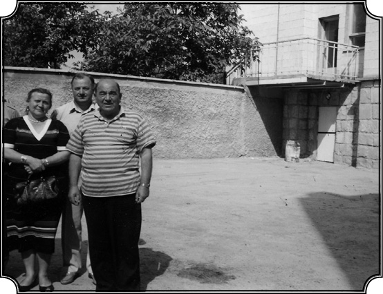
Moldova, Komrat. Gagavuz Türklerinin bölgesinin başkentinde Kültür Bakanı Maria ile.
Bu birlikteliğin ipuçları var mı?
Şimdi bu düşünceleri nasıl gerçekleştirmeye çalıştım? İlk olarak 1972 yılında Princeton Üniversitesi, Woodrow Wilson Uluslararası Enstitüsü’nde oranın üyesi olarak çalıştım. Bu enstitünün müdürü Cyril Black isminde bir Amerikalıydı.
Cyril Black değerli bir bilim adamıydı, rahmetli oldu, ama Cyril Black’ın annesi Bulgar, babası Amerikalı. Bulgaristan’da bir okulda çalışmış, orada bir kadınla evlenmiş ve Cyril Black doğmuş, yani Cyril Black’ın aile bakımından, Balkan tarihine bir ilgisi vardı ama tarafsız bir insan olduğu için bu meselelerin “başka şekilde ele alınması” gerektiğini o da düşünüyordu. Ben ona bu teklifi götürünce “kabul” dedi “gel çalış.” Ve ben orada Princeton Üniversitesi üyesi olarak, bir sömestr çalıştım ve bir kitap yazdım, kitabın ismi Dini Topluluklar Olan Cemaatlerden, Siyasi Bir Toplum Olan Milli Devletlere. Sosyal yapının altında da sosyal yapının unsurları, “Erkân-ı Erbaa” dediğimiz o dört temel, Osmanlı’nın dört temelinin, nasıl değiştiğini anlatan yüz yirmi sayfalık bir kitap ortaya çıktı ki benim bu tezim oradadır.
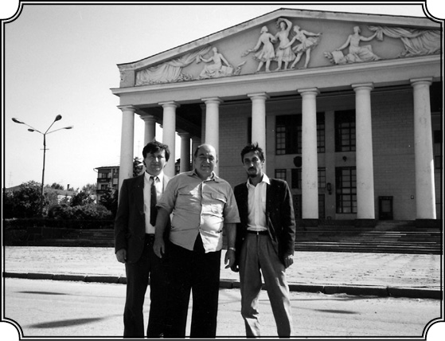
Çuvaş Cumhuriyeti başkenti Chuboksari’de yerli iki meslektaşı ile (1992).
Bu “Erkan-ı Erbaa” Osmanlı’daki ana sosyal bölümlenmelerdi galiba, Halil İnalcık Bey’in de söz ettiği…
Evet Osmanlı araştırmacılarının yaklaşık on beşinci yüzyıl sonlarında çizdikleri tablo şöyleydi: 1. Kılıç Ehli: Padişah, sipahiler, ordu, bürokrasi, seçkinler. 2. Kalem Ehli: Şeyhülislam, ulema, diğer din adamları, şairler ve benzeri. 3. Tüccarlar ve Sanatkarlar. 4. Köylüler (Reaya). İşte ben bu unsurların Osmanlı içinde nasıl değiştiğini ve imparatorluğun tüm unsurlarını nasıl etkilediğini anlattım.
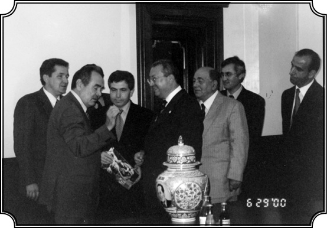
Tataristan-Kazan Cumhurbaşkanı Simanski ile (2000).
Bu sürece Rus etkisinden söz etmedik, bir ara Osmanlı-Rus paralelliği kurmuştunuz ama bu milli devletlerin oluşum sürecinde Rusya’yı nereye koydunuz?
Şimdi Ruslar hiçbir zaman gerçek manada bir milli devlet olmamışlardır. Çünkü Rusya durmadan genişlemek istemiştir. Rusya’da millet meselesi, millet oluşumu, Osmanlı’dan ve Yunanistan’dan farklıdır, o başlı başına bir konudur ama Rusya diğer taraftan kendi emperyalist emelleri için Hıristiyanlık esasına ve Slavlık esasına dayanarak Balkanlarda milliyetçiliği körükleyen ve onu bugünkü hale, o şovenist hale getiren en önemli etkendir. 1850’lerde kurulan Pan-Slavist temelli “Slavlara Yardım Cemiyeti” St. Petersburg şube başkanlığını yapmış ve 1864’te İstanbul’a sefir olarak gelmiş olan Rus bir zat, Kont Nikolay P. İgnatiyev vardı. İgnatiyev açıkça bir taraftan Slav milliyetçiliğini, bir taraftan Ortodoks benliğini geliştirerek Osmanlı’ya karşı olan Balkan tepkileri siyasileştirmiş ve nihayet milli devletler yaratmaya çalışmıştır. 1877-78 Savaşının hazırlanmasında İgnatiev’in payı büyüktür. Belki Rusya olmasaydı Balkan milliyetçiliği de bu bildiğimiz şeklini almazdı. Osmanlı Devleti ise hiçbir yerde milliyetçiliği körüklememiştir. Ancak genç Türkler zamanında Pan-Turanizm gibi bir şey olmuş, o da netice vermemiştir (Onlar da o milliyetçiliği doğru dürüst anlayamıyorlardu).
Laiklik, Din ve Devlet
Türkiye’de milli devletin kurulmasından bu yana 80 yıldan fazla zaman geçti. Hâlâ en temel konuları tartışıyoruz, laiklik, din devlet ilişkisi gibi. Tekrar bu konuya dönelim isterseniz.
Evet, bu sorun halledilmeden Türkiye’nin tüm enerjisini modernleşmeye ve refahın yaygınlaşmasına harcamasına, sağlıklı iktidar-muhalefet ilişkisi kurmasına imkân yok. Konuşalım biraz daha bu konuda, zaten son zamanlarda bu konularda çok yazdım, röportajlar verdim.
Türkiye’de dini görüş sahipleri, kiliseler gibi, özerk kuruluşlar içerisinde devletten bağımsız bir şekilde rahatça görüşlerini dile getirebiseler, din siyasete alet edilmekten bir nebze olsun kurtulabilir mi?
Ben de aynı fikirdeyim. Bunun için de Diyanet vardır. Ama Türkiye’de Diyanet bir devlet kurumudur. Diyanet, son rakamlara göre emrinde 90 bin kadar imam-hatipli çalıştıran, toplum üzerinde muazzam gücü olan bir kurumdur. Bunlar devletten maaş alıyor ve bir dereceye kadar Diyanet, devlet siyasetini gerçekleştiriyor. Şimdi Diyanet’in bir dereceye kadar otonomi kazanması, tamamıyla din işleri ile uğraşarak yalnız ve yalnız bu alanda (emir almadan) hareket etmesi, yani serbest hareket etmesi arzu edilir ve belki bir dereceye kadar çözüm budur. Ama bir dereceye kadar diyorum, çünkü bir devlet kurumunu değiştirmek, ona otonomi vererek, doğru yolda işler hale getirmek çok güçtür. Her şeye rağmen bir otonomi sahibi olsa da Diyanet, devletin içindedir. Diyanet’in otonomisini yine devlet koruyacaktır, korku buradadır. İşine geldiği zaman devlet Diyanet’in otonomisini korur, ona saygı gösterir, işine gelmediği zaman bu otonomiyi kısar, gene bildiği gibi hareket eder. Çünkü Osmanlı’da ilk devirlerde bu amaçla şeyhülislamlık kurulmuş ki bunun ismen benzeri Abbasilerde de Fatimilerde de varsa da işleyiş bakımından kurum olarak benzeri başka İslam ülkelerinde ve devirlerinde yoktur. Yalnız Osmanlı’ya has bir müessese olarak kurulmuş şeyhülislamlık. İlk devirlerde hakikaten din işlerini serbestçe düzenlemek, devlet işlerine karışmamak amacıyla vazife görmüştü. Devlet de onun işlerine karışmıyordu ve bu durum yüz küsur sene kadar devam etti ki bu da Osmanlı Devleti’nin en parlak dönemini oluşturur.
Fatih döneminden başlayarak…
Ve hatta II. Murad dönemi. Çünkü şeyhülislamlık o zaman kurulmaya başlamıştı. Kanuni devrine kadar sürdü bu, Kanuni devrinin ilk zamanlarına kadar. Ondan sonra bozulmuştur, neden? Bunları daha evvel anlatmıştık. Tekrar edelim daha köklü anlaşılır umudu ile.
İslam modernleşmeye engel değildir
Mali olarak devlete bağlı olduğu için, devlet işine geldiği zaman onun özerkliğini yok edebiliyor…
Devlet, yine değişimin yarattığı ihtiyaçlar karşısında devlet politikasını yürütmek için dini kullanmaya başlamış ve şeyhülislamı araç olarak kullanmıştır ki bu özellikle bizim çok saygıyla andığımız Ebussuud döneminde olmuştur. Şeyhülislamlık serbest düşünen, serbest hareket eden bir kurum olmaktan çıkmış, devletin alanına girmiştir. Reformlar devri başlayınca bilhassa II. Mahmud devrinde daha da fazla devletin emrine girmiş, adeta devletin küçük bir memuriyeti haline gelmiştir. Şeyhülislamlıktan ziyade, din ve din adına hareket eden medreseler, devlete tabii olmayan mali kaynaklara, yani vakıflara sahiptiler. Devlet daha 1824’lerde Vakıf Nezareti’ni kurup, vakıf gelirlerinin önemli bir kısmını kendi siyasi harcamalarına kullanmaya başlayınca, bu dini kurumların ekonomik kaynağı kurumuş ve bunlar gittikçe çökmeye başlamıştır. Biz daima şunu söylüyoruz: “Efendim medreseler 19. yüzyılda çökmüş, bir sürü yobaz ortaya çıkmış” vesaire. Doğrudur ama neden doğrudur? Çünkü medresenin artık mali bir kaynağı yok, geçim sağlayacak, adam yetiştirecek ekonomik imkânlardan mahrum olmuş. O zaman şeyhülislamlık da alabildiğine devlet emrine girmiş, gerçek manada halkın dediği gibi bir “fetvahane” olmuş. Halk ona Şeyhülislamlık demiyor, bizim kullandığımız tabirleri kullanmıyor “fetvahane” diyor, fetva çıkaran bir yer. Doğru. Bilhassa Abdülhamid devrinde Cemalettin Efendi vardı; halk ona “Abdülhamid’in Şeyhülislamı” diyordu, o hale gelmişti durum. İşin garibi şudur: Türkiye’de laiklik kurulduğu zaman 1924’te, Şeyhülislamlık o zaman zaten lağvedilmiş ve yerine Diyanet gelmişti. Diyanet birçok bakımdan şeyhülislamlığın yerini almakla beraber, şeyhülislamlığın modernize edilmiş, millileşmiş şeklidir. Evet, cumhuriyet medreseleri kapattı ve iyi de yaptı ama medreseler bu kapatma emrine rağmen mali imkânlara sahip oldukları yerlerde işlemeye devam etmiştir. Gene ileri gelen ulema orada yetişmiştir ama bu ulema, yeni fikirlere sahip olan, İslam’ı da yepyeni bir ışık altında gören 19. yüzyıl İslam alimlerinden çok farklı düşünen kimselerden oluşmaktadır. Bu yeni tip ulema, yeni bir İslam görüşüyle hareket eder. Daha doğrusu onlara göre İslam’ı, İslam’ın kendi prensiplerine uygun bir şekilde yorumlayan bu ulemanın en ileri gelenleri, Diyanet’in üyeleri olmuşlardır. Evet, Cumhuriyet laikliği getirmiştir ama Cumhuriyet aynı zamanda Diyanet’i ele almış, ona yeni bir önem, ruh vererek canlandırmıştır.
Kim bu isimler mesela?
Ahmet Akseki, ileri gelenlerden. Büyük bir alim. Sonra Elmalılı Hamdi Yazır, Şerafettin Yaltkaya. O ilk dönem Diyanet’in kurulmasında yer almamakla beraber Şemsettin Günaltay önemli bir adamdır bizim düşünce tarihimizde, Peker’den sonra gelen başbakanlar arasındadır. Darülfünun’da ders vermiş, çok yüksek kapasitede bir alimdi. Bu isimler yeni bir İslamı savunan, düşünen Sırat-ı Müstakim dergisinde yazmışlardır. Kısa bir süre sonra dergi isim değiştirerek Sebil-ür Reşat olmuştur. Onun gibi otuz-kırk büyük isim vardır, İslam’ın temelinde yatan fikirlere daha uygun hareket eden yenilikçi birçok isim. Hatta bunun daha ötesi var: Şimdi biz sanki bu meseleleri yeni ele alıyormuşuz gibi konuşuyoruz, fakat işin güzel tarafı İttihat ve Terakki devrinde herhangi bir yerden kovuşturma, sorgulama korkusu olmadan bütün bu meseleler, milliyetçilik dahil tartışılmıştır. Hani nihayet Ziya Gökalp da yazılarının en büyük kısmını o devirde Türk Yurdu, Türk Mecmuası gibi dergilerde yayınlamıştır. İttihat ve Terakki’nin on yılı büyük fikir tartışmalarının, fikir yaratanların on yılıdır ve bunlar Cumhuriyet devrine gelmiştir, hatta diyebilirim ki Cumhuriyet devrinde gerçekleşen reformların hepsi, hemen hemen o devirde tartışılmıştır. Arap alfabesini Latin harflerine dönüştürme meselesi ise daha 19. yüzyılda, hatta Abdülaziz devrinde Sultanın önüne bile getirilmiş bir meseledir ki onu da yapan Mirza Fettali’dir. Tatar ya da Azeri asıllı, bilhassa İran’da tanınmıştır Mirza Fettali. İran modernizminin öncüleri arasında tanınan bir isim ama aynı zamanda Türkçe piyes de yazmıştır. Ona doğunun Moliére’i denir.
Sarayda işi ne Abdülaziz’in yanında?
“Muhtıra”yı getirmiş, şahsen sadrazamla görüşmüş. Öyle anılmış, “Alfabeyi değiştirme muhtırası”. Çünkü aynı zamanda modernist ve milliyetçidir, Türk dilinin kolay okunması için alfabe değişikliğini ileri sürüyor. Yani o devirde adamlar alfabeye ideolojik bakımından değil, pratik bakımdan bakıyorlar. Nitekim Şemsettin Sami (ki bizim modernist düşünce tarihimizde önemli yer tutar), yeni bir Arnavut alfabesi keşfetmiştir ve bunun tatbik edilmesi için elinden geleni yapmıştır. Onun alfabesi geniş çapta Yunan alfabesine dayanmaktaydı. Tek harfin tek bir sese tekabül etmesi gibi. “Ahmet” dediğimiz zaman oradaki her harfin bir sese tekabül etmesi ki bu durum Arap alfabesinde yoktu. Arap alfabesi halkın kendi dilini öğrenmesini, Türk dilini öğrenmesini engellediği gibi aynı zamanda okuma yazma öğrenmesini de engelliyordu. Alfabe reformları önerileri halkı aydınlatmak için ileri sürülen reformlardı ve dediğim gibi bunlar 19. yüzyılda tartışıldı.
Abdülaziz niye bunu kabul etmedi?
Hazırlıklı olmadıklarını, imkânlarının bulunmadığını ve belki de tepki yaratacağını düşündüğünden reddetmişti. Fakat önemli olan bunun öne sürülmüş olması ve aynı zamanda bazı din adamları tarafından da tartışılmış olmasıdır. O dönemde aslında yeni bir kimliğin doğmaya başladığını da görmek gerek. Bu, Osmanlı temellerine dayanan bir kimlik olmakla beraber yeni koşullar ışığında, daha dinamik, daha kişisel ve milli bir görünüm kazanmaktadır. Türkçe konuşanların sayısı alabildiğine artmıştır. Bu devirde okullarda, nizami mahkemelerde konuşulan dil Türkçedir. Basında da Türkçedir. Basın yeni bir dil geliştirmektedir. İşte bu gelişmeler olup biterken ulema arasında da dünyanın yeni koşullarına uymak, Türkiye’nin değişimini benimsemek ve ona göre değişimle İslam’ı bağdaştırmak gibi düşünceleri benimseyenler, yeni gelişmeleri takip edip, zamana ayak uydurmak isteyenler, yeni yorumlar yapanlar ortaya çıkmıştır. Yani yeni bir ulema da çıkmıştır. İttihat ve Terakki devrinde yayınlanan Sebil-ür Reşad, İslam Mecmuası gibi dergilerin bu yeni durumu aksettirdiğini; İslam’la, kültürle modernleşmenin bir arada yürütülebileceğini, İslam’ın modernleşmeye engel olmadığını anlatan yeni tipte bir ulema sınıfının ortaya çıkışını yansıttığını söylemiştim. Tabii aşırı dinci görüşleri savunan, dogmatik olan Volkan gibi biraz sansasyonel diyebileceğim gazeteler olduğu gibi Beyan-ül Hak gibi daha ciddi ama aşırı İslamcı dergiler de vardı. İttihat Terakki devrinde 19. yüzyılın son yirmi beş yılında başlayan değişmeler daha da ilerlemiş ve meyvelerini vermeye başlamıştır. Aynı zamanda gene Abdülhamid devrinde siyasetle uğraşmayan basının alabildiğine genişlemesi ve bu devirde modern dediğimiz Türk edebiyatının doğuşu var. Ahmet Mithat Efendi, Ahmet Rasim gibi büyük yazarlar çıkıyor ve topluma yeni bir okuma-öğrenme zevki getiriyor. Yeni büyük ve güçlü yazarlar ortaya çıkıyor, toplumda büyük değişiklik yaratıyorlar. Mesela 1850-70 arasında yayınlanan ilmi kitapların sayısı birkaç yüz iken 1870-95 arasında yayınlanan yalnızca ilmi kitapların sayısı üç bini geçmiştir. O devirde basılan kitapların sayısı yirmi yıl öncesine kadar büyük oranda artmıştır.
Cumhuriyet döneminde bunlar artarak devam ediyor ama artık bir yöneliş tercihi devlet ideolojisi olarak belirlenmiş…
Cumhuriyet bütün bu gelişmelerin mirasçısıdır. Bunları doğru dürüst değerlendirip değerlendirmediği ayrı bir meseledir. Bence değerlendirmemiştir. Çünkü modernleşmeyi mutlak bir doktrin olarak kabul etmiş, toplumun kendisinin çıkardığı, kendi ruhuna, onun kültürüne, tarihine, kimliğine çok daha yatkın olan birçok meseleyi yeterince değerlendirmemiştir. Türkiye’nin bugünkü en büyük meselelerinden biri de budur: Geçmişimizle nasıl bağdaşacağız, geçmişimizi nasıl görüp nasıl değerlendireceğiz, nasıl yaşayacağız? Bunlardan en önemlilerinden bir tanesi laiklik konusudur. Laikliğin hiçbir zaman bir dogma, körükörüne tatbik edilen bir şey olmaması gerektiğini anlattım. Toplumun gelenekleriyle, ruhuyla çatışmayacak bir laikliğin lüzumu aşikardır. Ama aynı derecede bir toplumun kendi özünü, kendi kimliğini, ruhunu mutlaka koruması gerekmektedir ve buna karar verecek olan da bizzat o toplumdur.
Siz son dönem çalışmalarınızda ve kurduğunuz cemiyetlerde büyük ölçüde bu konu üzerinde yoğunlaştınız zaten değil mi?
Benim başkanı olduğum Türk Araştırmaları Merkezi’nin amaçlarından bir tanesi de budur. Bu tür ele alınmamış bir sürü konuyu ele alıp incelemek. Ben bunların önemli bir kısmını, İslamın Siyasallaşması adlı kitabımda ele alıp inceledim, “modernleşme, İslam nedir” diye. Evet, bu kitap üç sene evvel çıktığında bayağı ilgi uyandırmıştı, fakat her şeyde olduğu gibi bizde ilgi birden alevlenir ve alevlendiğiyle kalır, ondan sonra kimse bakmaz, unutulur. Mesela 1992 senesine ait bir gelişmeyi anlatayım bu konuda. Bir ara Bilkent Üniversitesine uğradığım zaman muhterem İhsan Doğramacı’yı gördüm ve Bilkent’te mutlaka bir Orta Asya Programı kurulması gerektiğini söyledim. O da hemen bir bayana görev verdi bunu kurun diye. 7-8 ay sonra gittiğimde sordum. O arkadaş hiçbir şey yapmamış, inanılacak gibi değildi. İhsan Bey o zaman dedi ki “Kemal gel bu işi sen yap.” “Peki” dedim ve Amerika’daki işi gücü bırakarak iki sömestr hem ders verdim hem bu programın kurulmasını destekledim. Aynı zamanda TİKA ile çalıştım ve dışarıdan da bir sürü uzman getirterek konferans düzenledik. Uzun süre bu program Orta Asya Programı olarak ayakta kaldı. Ondan sonra Rusya Programı şeklinde gelişti ve Orta Asya bunun içinde yer aldı. O programda benimle doktora yapmış olan Doçent Doktor Hakan Kırımlı vardı. Dekan olan Profesör Ali Karaosmanoğlu çok muhterem bir zattı, bizi her zaman destekledi ve böyle bir programın kurulmasını kendisi de arzu etmişti. Dışişleri uzmanı olarak çok iyi bir isimdi.
Bilkent ile uzun süreli verimli bir dönem geçirdiniz galiba?
Bu şekilde de Bilkent’i tanıma az da olsa bir katkıda bulunma imkânım oldu ve bundan çok memnunum. Tabii benimle doktora yapmış olan Bilkent kökenli altı-yedi kişi vardır. Bilkent’te çalıştığım sürece yurdun çeşitli yerlerine gitmeye devam ettim. İzmir’de bir Orta Asya konferansı verdim. Tabii bütün bu toplantılar, konferanslar olurken de geri kalan zamanımı öteden beri tasarladığım bence en kapsamlı en büyük çalışmaya ayırıyordum. Üzerinde çalıştığım konu çok kapsamlıydı. Kitaba İslamın Siyasallaşması adını vermiştim ama kapsamı çok daha geniştir. 19. yüzyılda Osmanlı Devleti’nin ne tür değişikliklere uğradığını, yalnız kurumları ve siyasi durumlarıyla değil, bütünüyle, ekonomi, kültür, iç işler ve dış işlerde ortaya çıkan gelişmeleri içine alarak ekonomik, sosyal kültürel ve başka alanlarda da toplumu nasıl değiştirdiğini, nasıl yeni bir toplum ortaya çıktığını, yani Cumhuriyet rejiminin temellerinin 19. yüzyılda nasıl atıldığını anlatma çabasına girişmiştim.
Ne kadar sürdü bu kitabın hazırlık çalışması?
Yedi senelik bir çalışma sonunda kitap bitince Oxford tarafından yayınlandı (2001) ve bir tek tenkit yazısı hariç istisnasız çok iyi şekilde tanıtıldı. Hatta Feroz Ahmad gibi Türkiye tarihini çok iyi bilen, isim sahibi bir tarihçi tarafından da son otuz senenin en önemli kitabı olarak tanıtıldı. Bilgi Üniversitesi bunu çevirdi ve bastı (2004).
Laiklik meselesine dönelim tekrar. Esas sorun dinin hakikaten devletten tamamen ayrılıp, kendi bağımsız örgütlenmesine ulaşması değil mi?
Evet, evet, evet. Laikliğin ana manası bu, din özgürlüğü muhafaza edilecek, fakat bu tamamı ile kişinin kendi vicdanına bırakılacak ve devlet bu düzenlemeleri koruyacak.
Peki devlet buna yönelik düzenlemeleri niye yapamıyor hâlâ?
İşte benim de durmadan üzerinde konuştuğum konu bu, yani benim kanaatime ve arzuma göre AKP’nin yapması gereken en önemli hareketlerden bir tanesi buydu. Bu din otonomisini kurmak ve ondan sonra elini çekmek. Onlar buna yanaşmadı.
Niçin yanaşmadılar?
Çünkü parti içinde de bilhassa partinin alt kademelerinde sözde mevcut İslam eğilimine karşı gelmemek ve partiye oy kaybettirmemek, bu oyların Refah Partisi’ne gitmesini önlemek kaygısı var. Çünkü bir yerde hâlâ bu Ortodoks din görüşünü savunan bir Refah Partisi var.
Bu halin devamı, dinin siyaset aracı olarak kullanılmasına yaradığı için bunun devamı onların da işlerine geliyor o zaman?
Evet, tabii ki burada herkes bundan pay çıkarıyor, yani bu mesele halledilmedikçe, karanlıkta kaldıkça iki taraf da bundan yararlanıyor. Onun için iki taraf da hem laikçiler, hem dinciler bu meselenin son ve kesin çözüme ulaşmasını engelliyorlar çeşitli bahanelerle. Burada ben devletin bu işin içinden tamamıyla çekilmesini söylemiyorum. Henüz bunun için daha erken. Belki bir gün bu da olabilir. Bir gün Türkiye’de, başka ülkelerde olduğu gibi tamamıyla devletten ayrı ama devletin temelleriyle çatışmayan bir kilise grubu gibi dini bir örgütlenme meydana çıkabilir. Mesela bunun örnekleri Balkanlarda vardır. Her Balkan ülkesinde dini grupların bir başkanı vardır. Patrik vardır. Ve o Patriği dini kuruluşlar seçer. Ve bu seçim anayasa hükümlerine göre yapılır ve bir yerde devletin kontrolü bütçe vasıtasıyla yapılır. Diyanet’i de devlet bütçe ile kontrol edebilir. Ama asıl mesele Diyanet’in kendi kendini kontrol etmesidir. Ama salt üst tabaka olarak değil. Türkiye’de mesele, laik bir din anlayışını uygulayacak alt kadronun olması meselesidir. Camilerde, mescitlerde vazife gören, imam, vaiz kadroları önemlidir. Bugün onlar devletten maaş alıyor. Kontrolü mümkün. Asıl mühim, can alıcı mesele, yalnız kurum bakımından değil, kafa bakımından iyi yetişmiş, gerçekten bilgili, sözüne güvenilir, iyi yetişmiş din adamlarının olması meselesidir. Böyle iyi, üst düzeyde, kaliteli, bilgili din adamları çıkarsa halk onlara uyar. Bunları yetiştirmek gerekir.
Yani eğitimde, öğretim görevlisi olacakların önce “birey” olmalarını mı sağlamak gerek?
Evet, tam bireysel şekilde olmalı. Amerikan eğitim sistemi ki dünyanın en iyi sistemidir, üniversitede böyle işler. Alabildiğine bir fikir serbestisi tanınır. Rahat geçinebileceği bir maaş verilir. Rekabet teşvik edilir. Herkes bir diğerinden daha iyi şeyler yapmaya teşvik edilir. Mesela ben bu standartlarla yetişerek başarılı oldum. Türkiye’de bu yok. Gerçek manada din adamının da böyle yetişmesi lazım, bürokratik kafayla değil. Bu yetişme birkaç senede kanunla falan olmaz. İçeriden bir istek ve dönüşümle yıllarca uğraşarak, demokratik, özgür bir ortamda bu olur.
Tam da bu noktada şunu sormak gerekiyor: Neden İslam ya da doğu ülkelerinde böyle bir demokrasi ortamı toplum içinde de gelişmiyor, rejim olarak da gelişmiyor? Bu despotizmin tek nedeni İslam etkisi değil herhalde…
Bunu formüllerle açıklamak imkânsız. Biz kopyacı bir zihniyetle hareket ettiğimiz için Batı’dan aldığımız modeli aynen tatbik etmek istedik. Şapka meselesinde olduğu gibi. Şapka giydirince o insan Batılı olmuyor. Burada başka bir önemli konu daha var. Türkiye’de toplum aslında vicdanı hür bir toplumdur. Serbest düşünebilen bir toplumdur. Bir yerde İslam’da da bu hür ruh vardır. İslamın en güzel geliştiği dönem bu hür düşüncenin olduğu ilk üç-dört yüzyıldır. Halkın içinde yaşayan hürriyet ruhu bu dönemde karşılığını bulmuştur. İslamın özünde bu vardır. Bu Devr-i Saadet’i hep özlemiştir insanlar.
Peki, niye sürmedi, süremedi bu saadet?
Niye sürmedi, çünkü bir yerde devlet girdi işin içine. Devlet kendi gücünü savunmak için dinin savunucusu gibi hareket etti, görünürde dini savundu. Kendine mutlak itaati din sayesinde sağladı fakat bu sayede de gerçek hürriyeti yok etti. Devlet kendi menfaati ve varlığı için dini kullandı.
Şöyle bir sonuca varıyoruz galiba; bütün bu İslam ülkelerindeki despotizmin temelinde İslam değil devlet bürokrasisinin hâkimiyet kaygısı yatıyor…
Evet ve bu yeni başlamadı. Taa 11-12. yüzyıllara gidiyor. Diğer taraftan da, açıkça söylemek gerekirse, din adamları da bu hür vicdanı koruyamadılar çünkü devlet hizmetine girdiler. Osmanlı devletinde bir zamanlar hür düşünen bir ulema vardı, fakat 16. yüzyılın sonundan sonra bunlar kalmamıştır. Bunu anlamak için Katip Çelebi’nin 17. yüzyılda yazdıklarını okumak gerek. Bu gün de aynısı oluyor. Bugün hür düşünmek isteyen ulema devlet aleyhtarı diye yok ediliyor. Onlara baskı yapılınca onlar da ifrata gidiyor ve siyasileşiyor bu sefer. Demokratik düşünmek, gerçek manada hür düşünmek bir nesil içinde olmuyor, tamamlanmaya ömür yetmiyor. Belki 100-200 sene alabiliyor. İngiltere’de hür düşünce 17-18.yüzyıllarda başlıyor. Türkiye de bu alanda 50 senede muazzam yol aldı. Son 25 yılda gerçek manada demokratikleşme başlamıştır. Daha önce hür nesiller yetiştirmek ideali ve fikri vardı ama günlük hayatta menfaatler ağır basınca bu olmadı, ses de çıkartılmadı. En büyük tehlike siyasi gücün belirli ellerde toplanmasıdır. Türkiye’deki demokrasiyi kundaklayacak en büyük tehlike, siyasi gücün bir elde toplanmasıdır. Bu belirli bir parti de olabilir. Partilerin içinde durum zaten böyledir. Din için de bu aynıdır. Toplumun içinde bu gibi tehlikelere karşı bir zihniyet geliştirmek gerekir. Yoksa demokrasi-diktatörlük gibi konular çok nazik ve hassas konulardır. Kolaylıkla herhangi bir parti iktidara gelip durumu diktatörlüğe dönüştürebilir. Aslolan toplum içinde buna karşı bir zihniyeti yerleştirmektir.
Topluma baktığımız zaman da bu toplumda demokratik bir anlayış olduğunu söylemek çok zor. Diktatörlükten, baskıdan şikayet eden dinciler en basit bir karşıtlığa tahammül edemedikleri gibi mesela birçok yerde ramazanda oruç tutmayanlara saldırabiliyorlar. Birçok kasaba ve mahallede çoğunluk onlardaysa farklı inançlıların ya da inançsızların oralarda yaşama hakkı yok ediliyor. Alenen saldırıyorlar. Ve şu anda da bunlar devlet himayesine girmiş durumdalar
Ben bunun bu kadar abartılmaması gerektiğini düşünüyorum ve normal karşılıyorum. İnançlıların çok olduğu bir yerde öbür türlü davranmak tahrik etmek gibi bir şey oluyor. Ben böyle şeylere şahit olmadım. Münferit vakalar olabilir ama o kadar işte.
Kadınların korkusu anlaşılır bir durum
Aktüel siyasete girmişken, sizinle ilk görüşmemizden bu yana 6 ay kadar zaman geçti ve Türkiye mitinglerle sarsıldı. (2007, Mayıs ayında yapılan) “Cumhuriyetimize Sahip Çıkalım” mitinglerine daha çok kadınlar katıldı gibi bir hava var. Bu olguyu nasıl değerlendiriyorsunuz?
Kadınların bu mitinglere coşkulu ve kalabalık katılmalarını çok olağan ve anlaşılması kolay bir olay olarak görüyorum. Bugün İslam ülkelerinin karşılaştığı en çetin sorun, kadın hakları ve hürriyetleridir. Tüm dinler, çeşitli nedenlerle kadın haklarını kısıtlamışlar ve kadınları üçüncü sınıf varlık yerine koymuşlardır. Kadın konusunda birçok görüş ve davranış, dinler öncesi yerleşmiş geleneklerden ve adetlerden kaynaklanmaktadır. İlahi dinlerin doğmasıyla bu adetler ve gelenekler dini gerekçelere bürünerek daha güçlü olmuştur. Aşiret, kabile gelenekleri bu defa Allah’ın veya peygamberlerin emri haline getirilmiş ve o şekilde uygulanmıştır. Hıristiyan kadınların durumu son yüzyıla kadar Müslüman kadınların durumundan çok daha kötü idi. Akıl çağı, kişinin (ferdin) irade sahibi olarak hareket etmesini sağlayınca ve ferdiyetçiliği ön plana çıkarınca Batı ülkelerinde eski erkek kadın, hak hürriyet farkları da bir dereceye kadar yok edilmiştir. Böylece demokrasi, yani siyasi eşitlik ve insanların kendilerini idare edecekleri, serbest seçme hakları ön plana çıkınca, kadın hakları da aynı derecede önem kazanmıştır. Türkiye’de kadın hakları konusu, bizim modernleşmemizle muvazi (paralel) olarak gelişmiştir. Modern Türk edebiyatının doğuşu kadın haklarının ortaya atılmasıyla beraber olmuştur. Araba Sevdası gibi eserler olsun Ahmet Mithat Efendi’nin birçok romanı olsun kadın eşitliğini de işlemişlerdir.
Türkiye’de dinciler ve sosyal, kültürel tutuculuğu ön plana çıkaranlar kadın hakları konusunda görüşlerini açıkça ortaya koymaktan çekindikleri için de kadınların birçoğu bu kimselere karşı şüpheli ve tedirgin hareket ettiler. AKP modernite, Atatürkçülük, cumhuriyetçilik ve laiklik konularında görüşlerini açıklamışsa da kadın eşitliği konusunda gerçek düşüncesi hakkında birçok kimsede şüpheler baki kalmıştır. Türkiye’de birçok kadın AKP’nin kadın konusunda ne düşündüğünü, ne yapmak istediğini kesin bilmedikleri için ondan çekiniyor hatta korkuyor. Onların mitinglere getirdikleri coşku, bir savunma içgüdüsünün ifadesidir. AKP gerek kadın konusunda gerek birçok entelektüel alanda kendi dar, tutucu düşünce kalıbını yarıp vizyonist bir program ortaya koymadığı sürece “Siyasi islamcılığı” konusunda şüpheleri ve korkuları beslemekte devam edecektir.
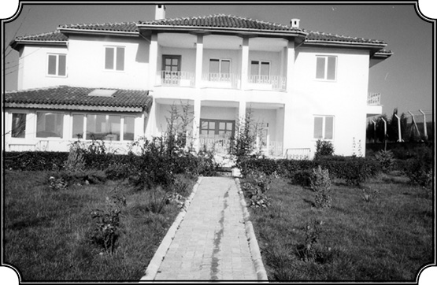
Karpat’ın Çatalca’da yaptırdığı ve Türk Tarih Araştırmaları Enstitüsü olarak tasarlanan bina.
“AKP’nin kadın konusundaki gerçek düşüncelerini açıklaması” diyorsunuz. AKP’de bu meydanlara dolan kadınları rahatlatacak bir kadın konsepti var mı ki açıklasın? Olsa açıklamaz mıydı bu kadar insanı sırf şüphe nedeniyle meydanlara dökeceğine? Belki açıklamadığı şeyler daha ürkütücü galiba, ne dersiniz? “Kendi sağ radikal tabanından oy kaybetmek de istemiyor” dediniz, bu önemli...
AKP bazı konularda yeteri derecede açıklık getirmiyor. Radikal tabanı çok dardır. AKP’nin asıl korkusu din hürriyetinin koruyucusu olarak görülmemesidir. Bu ise dinle değil temel demokratik haklarla ilgilidir.
Çatalca Türk Araştırmaları Enstitüsü hayali
Peki, şimdi hem zaman akışına hem tarih çalışmalarınıza geri dönelim. Sizin savunduğunuz laiklik anlayışı ve savunduğunuz tarihe bakış açısı paralel gidiyor tabii. Türkiye’de bu konuda iç rahatlığıyla benimsediğiniz bir kürsü de yok galiba?
Tam anlamıyla olduğunu söyleyemem. İşte bence Türkiye’de yapılacak baş işlerden birisi gerek tarih eğitiminin ve anlayışının gerek diğer sosyal ilimlerin yeni şekilde incelenmesidir. Tarih sosyal ilimlerden kopartılıp tek başına okutulursa (şu an yapıldığı gibi), o zaman tarih de manasız hale gelir.
Tarihi dinamik hale getirmek, dünkü olaylarla bugünküler arasında bağlantılar olduğunu göstermek gerekli. Bunları anlattım. Türkiye’de birçok kişi beni destekledi. Bunun için bir şeyler yapılması gerektiğine inanıyordum. 2001 yılında galiba, Amerika’ya Ruhi Bey gelmişti. Yıldız Üniversitesi’nde Müzik dersi veren, klasik müzik üstadı bir kişi. İşte Türkiye’de tarih alanında yeni metodolojiyle, sosyal ilimlerle tarihi birlikte ele alarak yeni insan yetiştirmek istediğimi, bunun için enstitü kurmak istediğimi, bunun için arazi alıp inşaata bile başladığımı anlattım. Bunun nasıl büyük bir ihtiyaç olduğunu anlattım...
Nerede aldınız bu araziyi nasıl bir projeyle yapıldı inşaat?
Çatalca’da. 25 dönüm bir arazi. 1990’ların ortalarında inşaat sürüyordu daha. Bir okul, bir enstitü gibi tasarlamış, projesini ona göre hazırlatmıştım. Bu benim en büyük hayallerimden biriydi. Böyle tam gönlüme göre bir kürsünün, okulun kurulması ve oradan öğrenciler yetiştiğini görmek… Kaldı öylece…
Yarım mı kaldı?
Hayır, inşaatı bitirdik, bahçe düzenlemeleri falan yapıldı, birçok şeyi ekme projemiz vardı, bir kısmını ektik falan ama enstitü olamadı işte. Neyse, o zaman Ruhi Bey kendi üniversitesinin (Yıldız) rektörüyle görüşmemi tavsiye etti. Ben de Türkiye’ye geldiğimde Rektör Profesör Ayhan Alkış beyle görüştüm ve projemi anlattım. O da hemen destekledi. 2002 senesinde orada ders verdim, sosyoloji dersi. Bu arada da böyle bir merkezin kurulması gerektiğini anlattım. Yıldız Üniversitesi’nde herkes beni destekledi. Tüzüğünü yazdım. Yönetim kabul etti, YÖK kabul etti. Eleman listesi yaptım. Fakat bu kadar emek verdiğimiz bu kuruluş fazla faaliyet gösteremedi. Konferans tertip ettik ve birçok insanı davet ettik onlara anlattık. İlk konuşmayı Mehmet Genç, ikinci konuşmayı da ben yaptım. Yirmi sayfalık bir yazıyla bu merkezin amaçlarını felsefesini ve çalışma şeklini anlattım. Sonra herkes bu görüşü destekledi ama tatbikata gelince maalesef olmadı. Çatalca’da yaptırdığım bina Yıldız Üniversitesi’ne bağlı olarak kuracağımız bu Enstitü’nün binası olacaktı. Birçok nedenlerle idare heyetini toplayamadığımız gibi benim önerdiğim elemanlardan hiçbirisi de alınmadı ve böylece ikinci sene tekrar gitmeme rağmen bir şey elde edemeyeceğimi anladığımdan şimdilik bu teşebbüsten uzak durdum. Ben hâlâ Türkiye’de bu gibi dinamik, ileriye yönelik yeni yaklaşımlara yer verilmediğine üzülüyorum, çok yetenek var ama bunları yetiştirecek adımlar pratik olarak atılamıyor. Bu benim için büyük üzüntü. Kaldı ki Yıldız’ın başka üniversitelere göre çok daha iyi mevkii ve kullanıldığı takdirde iyi imkânları vardır.
Bina ne oldu peki?
Hiç, öyle duruyor. Bir bekçi var bakan eden. Kardeşim Cemal sık sık gidip gelerek ilgileniyor ama öylece okul olamadan kaldı orası.
Abant, Antakya ve Romanya Toplantıları
Üniversitede istediğiniz gibi kürsü kuramadınız ama galiba çeşitli kürsülerin de müdavimi oldunuz, mesela Abant Toplantılarının…
Son yıllarda katıldığım önemli toplantılar içinde başta Abant Toplantıları geliyor. Dört Abant Toplantısı’na katıldım. Bu toplantıları tertipleyen Yazarlar Birliği’dir. Benim Yazarlar Birliği ile ilişkim şu şekilde olmuştur: Çok seneden beri dostum olan ve çok değer verdiğim arkadaşım, film yapımcısı Halit Refiğ Bey, Yazarlar Birliği danışmanıydı. Ben de bir münasebetle bu birliği tanımak istedim. O da beni tanıştırdı ve ilk defa benim öteden beri çok özlediğim bir olayın bu Abant Toplantıları’yla oluşturulduğunu anladım. Türkiye’de her çevrenin her düşüncenin bir nevi temsilcisi katılıyordu bu toplantılara. Sosyalist, milliyetçi, Atatürkçü, dinci ve benzeri herkes serbestçe düşüncesini ifade ediyordu. Elimden gelen katkıları yapmaya karar verdim ve her toplantıda söz alarak fikirlerimi açıkladım. İleri gelen birçok insanla tanıştım. Sonradan bir toplantı Washington’da yapıldı ona da katıldım. Din ve laiklik meselesi tartışılmıştı. Bu toplantıların Türkiye’nin fikir hayatına büyük katkılarda bulunduğunu düşünüyorum. Bu gibi toplantıların Türkiye’nin başka yerlerinde de başka çevrelerle değişik kimselerle de toplanmasını temenni ediyorum. Buna benzer son senelerde katıldığım önemli bir toplantı da 2005 senesinde 25-30 Eylül arasında Antakya’da yapıldı. “I. Hatay-Antakya Medeniyetler Buluşması” adını taşıyan bu toplantıyı Antakya Valisi, Müftüsü, Belediyesi elbirliğiyle düzenlemiş, hükümet de destek vermişti. Sayın Başbakan Erdoğan’ın açtığı bu toplantıda ben de davetli olarak vardım ve hem ilk hem de son oturumda değerlendirmeler yaparak katkıda bulundum.
Evet, geniş yankılar yapan önemli bir toplantıydı.
Toplantının ana özelliklerden birisi bu toplantıya Türkiye’yi temsil eden çeşitli din başkanlarının katılmış olmasıdır. Ortodoks Hıristiyan, Ermeni Patriği, Katolik Kilisesi’nin temsilcisi, Süryani Dini Başkanı ve bizim Diyanet başkanı katılmış ve böylece dinlerin bir arada sulh içinde nasıl yaşadıklarına dair bir örnek olarak Türkiye gösterilmiştir. Papa’nın bir temsilcisi de buraya katılmıştı. Çok nefis bir toplantı olmuş ve Türkiye’nin asırlardan beri olduğu gibi her dine açık, hürmet gösteren bir yer olduğu fikri fiiliyatta bu toplantıyla gösterilmiştir. Burada gerek İslam gerek Anadolu tarihiyle ilgili birçok tebliğ sunuldu. Ben de bu defa değişiklik olsun diye Antakya’nın nasıl kurulduğunu anlattım. Büyük İskender’in generallerinden biri tarafından nasıl kurulduğunu sonra nasıl geliştiğini ve Müslümanların eline geçişini sonra Ehl-i Salip (Haçlı) ordularının eline geçişini ve nihayet Osmanlı’ya geçişini kısaca anlatarak Antakya’nın öneminin çok iyi anlaşılması gerektiğini belirttim. Antakya çok sevdiğim yerlerden birisidir, kendine mahsus havası, kültürü, toplum hayatı, halkı ile. Bu sefer biraz daha kaldım. Hıristiyanlığın ilk defa burada gelişmeye başlaması, İsa’nın ölümünden yirmi beş yıl sonra buraya gelen küçük bir grup tarafından ilk kilisenin kurulmuş olması, ilk dönem kalıntıları, şüphesiz buraya tarihi ve turistik bir değer vermektedir. Antakya’da Hıristiyanlığın ilk eserlerini görmeye gidenler, Payas’ta Osmanlı’nın yarattığı büyük eserleri de görmezden gelemezler. Payas’ın bu değerlerinin unutulmuş olması acınacak bir durumdur. Kendi tarihimize hiç de önem vermediğimizi Payas’ın durumu ispat etmektedir. Roma, Bizans kalıntılarını gösterelim ama Osmanlı ve Selçuklu medeniyetini de yokmuş gibi silip atmak Türk tarihine ve medeniyetine yapılacak en büyük hakaretlerden birisidir.
Bütün dini cemaat liderleri konuşmuştu galiba o toplantıda…
Çeşitli kilise başkanları söz almıştı. Mesela Bartholomeos söz alarak mutat olduğu üzere kendi kilisesine yeteri kadar serbestiyet verilmediğini bir kez daha söyledi. Bunun doğruluğunu burada tartışacak değilim ama muhterem Bartholomeos öteden beri kendi siyasi amaçlarına ulaşmak için her toplantıyı fırsat bilerek tenkit yağdırmaktadır, bu görüşlerini tekrarlar. Hatta bir toplantıda (2000 yılında Hilton’da), “Osmanlı’dan ne kaldı” demişti ve ben de ona “Osmanlı’dan ne kalmadı ki demek daha doğrudur” diye cevap vermiştim. Neyse Antakya’daki en güzel konuşmayı nefis Türkçesiyle Ermeni Kilisesi Patriği yaptı. Her sözün tam hakkını verdiği gibi, Türkçe grameri, cümleleri mükemmel derecedeydi. Şüphesiz ki benim konuşmam dahil, en güzel Türkçeyi o kullandı. Harika bir konuşmaydı. Kendisini tebrik ettim, gerek konuşmasının biçimi gerek içeriği açısından. Benim kapanış konuşmamın konusu, Avrupa-Türkiye ilişkileri ve bilhassa Avrupa Birliği’nin Türkiye’ye karşı takındığı tavırdı. Şunu söyledim: “Biz Türk olarak Avrupa’nın her şeyine hürmet ettik, onlardan çok şey aldık, edebiyat kültür, dil, müzik ve benzeri her şeyi aldık. Hâlâ Avrupa dinleri ve onların tanımadığı Doğu Hıristiyan dinlerinin temsilcilerini burada bulunduruyoruz. Buna karşılık Avrupa bizden ne aldı? Bizim tarihimize, kültürümüze, dinimize ne derecede hürmet ediyor? “Yani” dedim “bu tek yönlü bir alışveriş oluyor, biz Avrupa’dan alıyoruz, Avrupa bizi bir kenara atıyor, iki yönlü olmuyor bu ilişki. ‘Medeniyetler birlikte yaşayacak’ diyorsak etki de karşılıklı alışveriş şeklinde olmalı. Biz Avrupa’dan alıp onlara bir şey kabul ettiremiyorsak bu dolayısıyla da olsa bir kültür emperyalizminin ötesine geçmiyor demektir.” Oradaki arkadaşlar da bu görüşleri isabetli buldular.
Anadolu’dakini bırakın, Avrupa’da kalmış Osmanlı miraslarını da çoğu zaman görmezden geliyorlar…
Evet, bu konuyla ilgili son bir toplantıdan daha bahsedeyim. Kasım 2006’da Bükreş’te “Balkanlar’da İslam, Osmanlı Mirası” konulu toplantıya gittik. Açılış konuşmasını istek üzerine ben yaptım. Konuşmamın merkezini Babadağ kasabası oluşturuyordu. Gerek Balkanlar, gerek Osmanlı, gerek diğer Müslümanlar bakımından “Saltuk Baba’nın Şehri” olarak önemini belirttim. Aynı zamanda 16. yüzyılda Babadağ’ın sosyal yapısından söz ettim, elimde iki nüfus sayımı bilgisi vardı, onları anlattım. Fakat konuşmamın başka bir hedefi vardı. Dedim ki “Şimdiye kadar biz tarihi daima devletler tarihi olarak, milli devlet görüşü şeklinde okuttuk ama bir de kasabaların, bu gibi köylerin-bölgelerin de çok değerli olayları kapsayan, gelişmeleri kapsayan kendi tarihleri vardır, merkez siyasetine bazen uygun, bazen aykırıdır ama bu tarihleri incelersek bölgelerin ve ülkelerin tarihi ve toplumsal hayatları hakkında çok daha sağlam bilgiler elde edebiliriz.” Herkes alkışladı, tebrik edildim vesaire. Benim konuşmayı değilse bile toplantının bütününü Romanyalı idareciler fazla benimsemediler, Akademi temsil edildi ama Başbakan gelecekti gelmedi, temsilcisi geldi, konuşmadı. Yani aslında benim konuşmam da, Balkan devletlerinin dince, dilce, kültürce kendinden olmayan halkların tarihiyle ilgilenmediğine işaret eden bir tenkitti.
Türk Etütleri ve Orta Asya Programı
Şimdi Madison’daki son yıllarınıza ve kuruluş çalışmalarını yaptığınız programlara dönelim isterseniz…
Madison’da Wisconsin Üniversitesi’ne geldiğimde ilk çabam bir Türk Programı’nı kurmaktı. Bu çetin bir işti. 42 bin öğrencinin olduğu bu yerde böyle bir program yoktu. Benim bağlı olduğum Tarih Fakültesi ise Amerika’nın en önemli tarih fakültesi sayılır. Aralarında dünya çapında isimlerin de olduğu elli-elli beş kadar tarihçi vardır. Her yerde olduğu gibi bu üniversitede de büyük rekabet vardı. Her bölüm kendi alanını genişletmek için bütçeden daha fazla pay almak istiyordu. Ben de bunları bildiğim için oraya gelirken kabul şartı olarak mutlaka bir Türk dili kürsüsünün kurulmasını istedim. Çünkü dili öğrenmeden bir araştırma yapamazsınız. Türk arşivlerindeki vesikalara dayanabilmek için Türkçe şarttı. Bir Türkçe dersi profesörü şartı koşmuşum, dekan da kabul etmişti ama zaman istemişti bütçeye para koymak için. Bir sene sonra bu gerçekleşti. Ve Türkçe dersini Linguistik Fakültesi’ne koydular. Ben de oradan onlarla anlaşarak kabiliyetli bir hocayı alırız dedim. Aradan zaman geçip de haber çıkmayınca merak ettim. Linguistik Bölümü’nün başındaki zat kendisinin tuttuğu öğrenciyi çalıştırmaya bakıyor. Hâlbuki o genç, gramer olarak, teknik olarak linguistik kanunları üzerine uzmanlaşıyor. Bu uzman öğrenci çok iyi bir linguistikçi olabilir ama vesika okuyacak, tarih, edebiyat, kültür vesikalarını okuyup anlayacak bir ruh taşımıyor. Ben itirazlar ettim, dekana da anlattım ama yapılacak bir şey yoktu. Sonunda öğrenciler de oraya gitmekten vazgeçince bu kadına da iki sene sonra yol verdiler. Sonra benim aradığım tipte bir hoca bulduk, Doktor Sara Atış’ı aldık. Bir Türk’le evli, Erzurum’da tanışıp evlenmişler. Kendisi Amerikan asıllı ama Türkiye’yi seven ve Türk edebiyatını bilen bir kimse. Eşi Hüsnü ise müzisyen, saz ustası olarak isim yapmış bir kimse. Amerika’da saz ile geçimini sağlayamayınca bir restoran açmaya karar verdi. Kendi adı altında açtığı restoran Madison’un en tanınmış lokantası haline geldi. Böylece biz Türkçe programı sayesinde Amerikalıların hem zihnine hem midesine hitap eder hale geldik. Neyse, Wisconsin’in doktora programı Amerika’daki en büyük doktora programlarından biridir. Hocaların önemli bir kısmı doktora eğitimlerini burada yapmışlardır. Burada bir lisans, doktora programı kurmak benim açımdan Amerika’yı, dolayısı ile de olsa Türkiye tarihi, kültürü ve insanlarıyla etkilemenin mümkün olacağı anlamına geliyordu. Burada tektim, sonradan birkaç arkadaş daha geldi. Mesela Türkiye’ye yeni dönen çok değer verdiğim dostum Doktor Münci Kalayoğlu orada yirmi beş sene ciğer nakli konusunda çalıştı. Şimdi Türkiye’de. Neyse yavaş yavaş Türkiye Programı öğrenci çekmeye başladı. On beş ile başlayıp elliye kadar çıktık. Öğrenci çekmek için undergraduate dersleri koyduk. Bu dersler sayesinde birçok öğrenci benim kurslara gelerek sonradan da Türkçe öğrenerek Türk tarihi üzerine ihtisas yaparak çeşitli yerlere dağıldılar. Dünyanın birçok ülkesinde benimle doktora yapmış yirmi beş kadar profesör vardır. İşte böylece Wisconsin Üniversitesi bu Türk programı sayesinde Amerika’da ve uluslararası alanda hatırı sayılır bir Türkçe ve Türk tarihi, kültürü eğitim merkezi oldu. Böylelikle ben de kendime vermiş olduğum sözü tutmuş oldum, ‘Türk kültürünü, Türkiye’yi tanıtmak’ vaadimi yerine getirmiş oldum ve buna devam ettim.
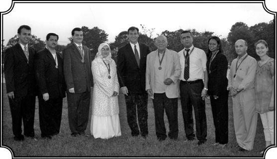
Nassau’da düzenlenen Türk-Amerikan gecesinde bir toplulukla. Karpat bu gecenin kapanış konuşmasını yapmıştı. (2005)
Bu program üzerinden başka neler yapmıştınız Türkiye’yi tanıtmak için?
Türkiye ile ilgili konferanslar tertip ettik, birçok insanı davet ederek burada konuşturduk. “Osmanlı Devleti’nin Dünya Tarihindeki Yeri ve Modernleşmeye Katkısı” konulu bir konferansımız da olmuştu. Halil İnalcık, Arnold Toynbee gibi dünya çapında tarihçilerin katıldığı konferansın kitabının Türkçe tercümesi yirmi beş yıl sonra basılabildi. Neyse aldık yürüdük bu programla. Osmanlı-Türk Tarihi Amerikan üniversitelerinde değer kazanmaya başladı ve bu konuda dersler koyan üniversite sayısı 20’ye yaklaştı. Bu programların gelişmesinde Washington’da kurulan Türk Etütleri Enstitüsü’nün faydası olmuştur. Bu Enstitü ilk defa Türk hükümetinin 3 milyon dolarlık katkısı ile kurulmuş sonra bütçe 5 milyon dolara çıkmıştır ama diğerlerinin yanında bu bile komik bir paradır. Ben hem kurucularından biriydim hem de iki sene idare heyetinde bulundum ve elimden geleni yaptım. 1970’lerde, 1980’lerde, 1990’larda Türkiye ile Osmanlı ile ilgili toplantıların birçoğuna katıldım ve tebliğler verdim. Sanıyorum bu alanda muvaffak da oldum. Tabii şimdi birçok genç arkadaş yetişti, onlar sayesinde de bu alan çok daha gelişecektir. Neler yaptığımıza bir örnek daha vereyim. Bu Türkçe programını biraz pratiklerle de geliştirmeye çalışmıştım. Üniversitenin Extention Service denilen bir programı vardır, birçok yerde olduğu gibi dışardan çeşitli insanları Üniversite faaliyetlerine katmak, yeni imkânlar geliştirmek, yeni eğitim imkânları vermek gibi kamusal vazife görüyorlardı. Bunlar toplumu üniversitenin hayatına katma amacını güden programlardır. Bu programlar çerçevesi içinde her sene Ortadoğu’ya, Mısır’a, Irak’a ve Suriye’ye, oranın tarihi yerlerini görmeye giden gruplar oluşturuluyordu. Bu grupların Türkiye’ye de gelmelerini ve bir hafta-on gün Türkiye’de zaman geçirmelerini sağladım.
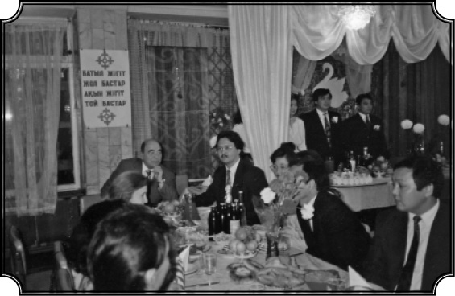
Kazakistan, Alma Ata’da bir düğünde. Duvarda Kiril harfleriyle yazılmış yazı şöyle diyor: “Cahil yiğit yol basar, şair yiğit düğün basar.”
Rehberliklerini de yaptınız…
İki sene yazın arka arkaya İstanbul’da onları bizzat karşılayıp Edirne’ye, Bursa’ya, İznik’e götürdüm ve bu bölgelerin tarihini kendilerine anlattım. Böylece İznik’in nasıl Bizans tarihinde birinci derecede rolü olduğunu, mesela 4. Ehli Salip (Haçlı) Ordusu’nun 1204’te İstanbul’u aldıktan sonra imparatorların İznik’e gelip burada altmış sene yaşadıklarını anlattım. Sonra Bursa ve Edirne’yi gezdirerek Osmanlı’yı yerinde tanıttım. Hıristiyan dünyasını ilgilendiren bazı temel meseleler İznik’te tartışılmış ve çözülmüştü. Bunları da anlattım. İşte böylece Wisconsin’den Türkiye’ye getirdiğim gruplara Türkiye’nin tarihinin ne kadar çeşitli olduğunu ve Selçuklu-Osmanlı kalıntılarının hâlâ var olduğunu anlattım. Temennim halen yapılmakta olan turlara Selçuklu ve Osmanlı tarihi yerleri ve eserlerini de katmaları. Burası sadece bir Helen tarihi bölgesi değildir. Her yerde olduğu gibi, her medeniyetin hakkını verdiğim gibi Türklerin yarattığı medeniyetin de hakkını vermek taraftarıyım. Ama bir temennim var: Bu Türk Etütleri sayesinde, dünya toplumlarının benzeri gibi Türkiye’nin de, Osmanlının da, Türklerin de meydana geldiğini, hiçbir zaman şunun bunun lütfuyla değil kendi gücüyle bir yer edindiklerinin ve yaşadıklarının anlatılmasını temenni ederim.
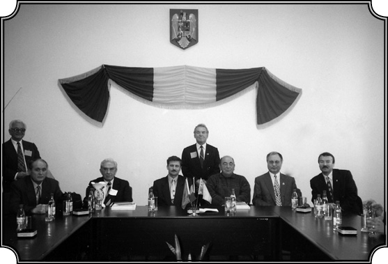
Karpat, medresesinde okuduğu Mecidiye kasabası belediyesinde Romenler ve Türklerle. Karpat’a burada Onursal Hemşehrilik ünvanı verildi (2006).
Bir de Orta Asya Programı kurmuştunuz, bir ara söz ettiniz ama şimdi tam yeri geldi galiba?
Benim kurduğum Türk Programı’nın genişlemesi ve daha sağlam bir yere oturması için Türkiye tarihinin ve Türklerin yalnızca bugünle sınırlı olmadığını anlatmam gerekiyordu. Bugünkü Türkiye milli bir devlet olarak, Atatürk’ün kurduğu bir cumhuriyet olarak kendilerini Türk medeniyetine mensup sayanlar içinde en gelişmiş, en büyük, en kuvvetli ülkedir. Fakat aynı kültür gurubuna dahil bir Orta Asya, İdil Ural Bölgesi, Kafkaslar vardır. Siyasi olarak bunlar kendi tarihlerini yazıyor ve sürdürüyor ama bir yerde gene tarih, dil, kültür bağlantısı vardır. Benim kanıma göre Wisconsin’da kurduğum Türk Programı’nın gelişmesi mutlaka bu ilgili alanlarla da temasa geçilmesini zaruri kılmaktadır. Bunun için Orta Asya Programı’nı kurdum. Bu da gene biraz para meselesiydi. Üniversiteye bunun önemini anlatmak gerekiyordu. Bunun için siyasi ve ekonomik yaklaşımlar gerekiyordu. Ben bir bakıma Amerika’da yetiştiğim, onların psikolojisini bildiğim için ona uygun hareket etmek gerektiğini anlamıştım. Orta Asya meselesine yaklaşımım şöyle oldu: 1985 yılına kadar Doğu Avrupa’nın hemen her komünist memleketine davetli olarak, konferans vermek amacıyla gittim. Romanya’ya zaten her sene gidiyorum. Bulgaristan, Yugoslavya, diğerleri, hepsini defalarca gezdim. Sonunda bu rejimlerin buralarda dayanamayacağına, içinden sökülüp düşeceğine kanaat getirmiştim.
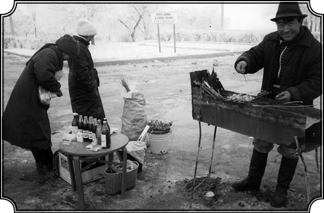
Kırgızistan’da Bişkek ile Alma Ata yolu üzerinde kebapçılar.
Nasıl böyle bir kanaat edinmiştiniz, gözlemleriniz neydi?
Nedeni çok açıktı: İlk sosyalist devrelerde bu rejimler bayağı yenilikler getirmiş, fakat beş-on sene sonra kemikleşmiş, yeni bir şey üretmeyen, eldeki gücünü sırf parti ya da üç beş kişinin menfaatleri için kullanan, kendini tüketen, otokratik, faşist rejimler halini almıştı. Mesela Babadağ’da üç-beş değişiklikten sonra yirmi sene hiçbir şey yapılmamıştır. Eskiden yeşillikler içinde ferah olan benim köyüm Armutlu artık ekmek bulamaz hale gelmişti. Şehre gidip dostları vasıtasıyla çuvallara ekmek doldurup geliyorlardı. Aslında korkunç bir baskı ve ekonomik gerilik ve halkın hoşnutsuzluğu vardı ama polis rejimi bu hoşnutsuzluğun ortaya çıkmasına engel oluyordu. Tabii ben her baskı rejiminde olduğu gibi, bunun da uzun süre süremeyeceğine, mutlaka bir yerden patlak vereceğine inanmıştım. Günün birinde Sovyetler Birliği’nin ve onunla birlikte onların idaresi altındaki Doğu Avrupa’daki rejimlerin yıkılacağına inanmıştım. Onun için yapılacak iş her şeyden evvel, Rus olmayan bölgeleri anlamak ve anlatmaktı. 1970 ve 1980’lerde Soğuk Harp nedeniyle Sovyetler’de milliyetler konusu, Amerika’da incelenmeye başlanmış, hatta “Sovyetler’de Milliyetler İncelemesi” adı altında bir cemiyet bile kurulmuştur ve muazzam gelişmiştir. Fakat bu Cemiyet daha ziyade o topraklardaki Hıristiyanlar ve Doğu Avrupa ile uğraşıyordu. Her zaman olduğu gibi Sovyetler Birliği’ndeki Müslümanlara önem vermiyorlardı.
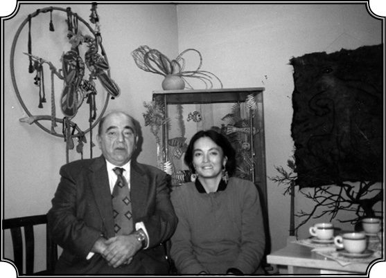
Kırgızistan Bişkek’te, tanınmış ressam Dınara Çoçunbaev ile (1990).
Aslında sadece etnik, din ve kültür olarak değil siyaseten de o sınırlar içindeki Türklerin incelenmesi, en azında ağırlıkları nedeniyle, Batı açısından önemli olmalıydı değil mi?
Evet, bana göre asıl incelenmesi gereken bölge Orta Asya idi. Bunun için ben bir Orta Asya programının lüzumundan söz etmeye başladım. Birkaç kez Türkiye’yi ziyaret eden Dekan David Cronon ile görüştüm. O da Moskova Üniversitesi’nde Amerikan Tarihi dersi vermiş, Orta Asya’ya da gitmişti, durumu biliyordu. Kendisine dedim: “Bir gün Sovyetler dağılacak, buna hazırlıklı olmalıyız. Bunun için bir Orta Asya programı kurmalıyız.” O da destekledi ve hemen proje yapmamı istedi. 1984 senesinde Profesör Alexander Bennigsen, (şimdi rahmetli oldu), Amerika’ya gelmişti. Kendisi Çarlık Rusya’sında doğmuş, dedesi Danimarka asıllı olmakla beraber Çar ordusunda general olmuş bir aileden geliyordu.
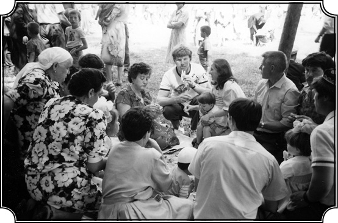
Kazan, Çallı’da bir piknik.
Rus olduğu kadar, çok inançlı bir Ortodoks Hıristiyandı. Ama aynı derecede de Türk ve Müslüman dostuydu. Türklere, Orta Asya Türklerine karşı, Rusya Müslümanlarına karşı inanılmayacak bir sevgisi olan efendi bir zattı. Ölümünden altı ay önce Paris’teki evinde ziyaret de etmiştim. O ziyarette bana şunu demişti: “Rusların Kabil’den çıktığını gördüm, ölmeden önce bir de Semerkant’tan çıktıklarını görsem çok mutlu, mesut olacağım.” Ömrü vefa etmedi. Neyse 1984 yılında işte, Amerika’ya geldiğinde kendisine dedim ki: “Sana bir imkân yaratsam, benim üniversiteye gelip Rusya Müslümanları ve Orta Asya üzerine ders verir misin?” “Gelirim” dedi. Bu tarihe kadar bu sahanın dünyadaki en önemli, en fazla eser vermiş kişisiydi. Bennigsen, Müslümanları ve Türkleri çok tuttuğu için Rus taraftarları arasında sevilmeyen bir kimseydi, halen de öyledir. Çünkü burada da bu konuda Orta Asya ve Rusya Müslümanları konusunda iki ekol vardı. Bir tarafta bunların ayrı bir tarihi, kültürü, kimliği olduğunu söyleyen “milli kültür” taraftarı olan grup, diğer tarafta da her şeyi Ruslara bağlayan, her şeyin, medeniyetin oraya Ruslar tarafından götürüldüğünü, Orta Asya’nın daha önce sefalet ve cahillik içinde yaşadığını savunanlar vardı. Bunu da Türkiye’ye, Müslümanlara karşı olanlar söylüyor. Neyse Bennigsen hakkında çok şey söyleyebilirim. Uzatmayayım. Dışarıdan Profesör davet etmek için bir fon var, ona müracaat ettim ve kendisini Wisconsin’a bir sömestrlik davet ettim. Geldi ve ders verdi. Sömestr sonunda da onunla birlikte Orta Asya, Rusya Müslümanları hakkında bir konferans toplamaya karar verdik. Yaz başında 1985’te altmış-yetmiş kişilik bir konferansta Amerika’da ilk defa Orta Asya ve Rusya Müslümanlarını tartışmış olduk. Böylece bizim Üniversite’ye de bu konuya ilgi olduğunu gösterdik. Bu sayede de bir fon hazırlayarak Orta Asya Programı’nın kurulmasına ön ayak oldum. Sadece Orta Asya Programı’nı kurmak değil aynı zamanda Türk Programını geliştirmeyi de amaçlıyordum. Bu konferanstan sonra meseleyi biraz daha sıkı tutarak ikinci bir konferansı ben düzenledim ve bu uluslararası bir konferans oldu.
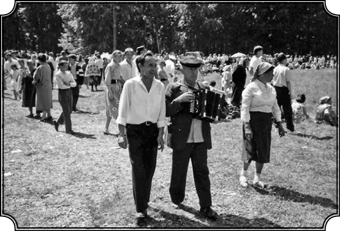
Kazan Çallı’da bir nevi Nevruz sayılan kutlamalardan. Tataristan’ın eski Kazan Hanlığı olarak özelliklerini koruyan bir kasaba burası. Sabantoy denilen, yani ilkbaharın gelişini kutlayan bu tür toplantılara Tataristan’ın her bölgesinden halk geliyor.
Kazan’dan, Orta Asya’dan Müslüman Türk asıllı birçok profesörü de buraya getirme yolunu bulduk. O tarihe kadar dışarıdan Kazan Türkleriyle temas yapılmamıştı, biz ise açıkça oradan iki uzman davet ediyorduk. Biraz zamanın değişmesinden istifade ettik.
Kazan Türkleriyle ilgili çalışmalarınızı biraz anlatır mısınız?
1475-1783 arası Kırım, kendi hanları idaresinde Osmanlı devletinin bir parçası olarak yaşamıştır. Rus idaresine girdikten sonra Kırım halkı göçe zorlanmış fakat yine varlığını sürdürmüş, hatta 1880’den sonra Gaspıralı İsmail’in önderliğinde büyük bir modernizasyon çabasına girmiştir. 1917 Bolşevik devriminde özgürlüğünü ilan etmiştir. Nihayet Kırım, Müslüman halkı ile başa çıkamayacağını anlayan Stalin bu halkı 1944’te Orta Asya’ya sürmüş, 300.000’den fazla sürgünün yarısı yolda ölmüştür. Sağ kalanlardan bir kısmı Almanya’ya, oradan Türkiye’ye veya ABD’ye sığınmışlardır. Amerika’ya gelen takriben 600-800 kişilik grup New York’a yerleşerek bina satın almış, burada bir okul ve cami kurarak ve diğer Türk cemiyetleriyle işbirliği yaparak Orta Asya’ya sürülmüş kan kardeşlerini kurtarma çabasından geri durmamışlardır. Bir toplantıda Kırım Cemiyeti başkanı Mühendis Fikret Yurter ve ileri gelen üyelerinden mühendislik profesörü Dr. Rifat Tabi ile tanıştıktan sonra Cemiyet’te birkaç konuşma yaptım. Bu vesile ile bu bir avuç insanın Orta Asya’da sürgünde bulunan kardeşlerine yardım gayretlerini takdirle gördüm. Cemaatin büyük kısmı apartman dairelerinin bakım işlerini üstlenmiş, oradan aldıkları cüzi paraların bir kısmını Orta Asya’daki soydaşlarına gönderiyorlardı. Hatta büyük bir cesaretle, yolunu bulup Orta Asya’daki Kırımlıların mücadelesini yürüten ve o tarihte hapishanede yatan Mustafa Cemiloğlu’na ve ailesine de yardım sağlamayı başarmışlardı. Hatta Cemiloğlu’nun Taşkent’te yapılan mahkemesinin zabıtlarını da ele geçirmişlerdi. Rusça yazılan zabıtların İngilizceye çevrilmesi için Hollandalı bir uzmanla Amsterdam’da bizzat ben temas etmiş, anlaşma sağlamıştım.
Mustafa Cemiloğlu ile de şahsen tanışmıştınız herhalde?
Evet. Seneler sonra Cemiloğlu’nu New York’ta ve Ankara’da gördüm. Boyu küçük, cılız fakat yüzünden metanet ve kararlılık taşan bir kimse. Son olarak sanırsam onu 2002 senesinde Romanya, Köstence’de bir konferansta gördüm. Ukrayna parlamentosunda Kırım mebusu olarak halkının çıkarlarını savunmaya devam ediyordu. Toplantıda Türkiye Kırım Cemiyetleri Federasyonu başkanı eski Balıkesir mebusu ve Kültür Bakanı Dr. Ahmet Kırımlı da vardı.
Sizin Kırım davasına ilginiz biraz da atalarınız nedeniyle mi?
Sadece bu değil elbette. Benim Kırımlılara karşı ilgim her şeyden evvel insani bir düşünceden, haksızlık gören insanlara yardım etmenin bir insani borç olduğu düşüncesinden kaynaklanıyor. Aynı kültürü ve geçmişi paylaşmak bu insani borca yeni bir güç katıyor. Fakat her şeyin üstünde önemli olan, Kırımlıların vatana dönüş mücadelesini kimseden yardım görmeden üstlenmeleri ve muvaffak olmalarıdır. Bu azme sahip bir millet yok olmaz.
Sovyetlerde sizin bu ilişkileri kurabildiğiniz dönem herhalde glasnost dönemi olmalı?
Evet, Gorbaçov’un yumuşama politikası başlamıştı ve dönem şartları da nispeten uygundu. Kazan’dan iki profesöre izin verdiler. Özbekistan’dan Azerbaycan’dan ve Kırgızistan’dan tanınmış profesörleri buraya getirdik ve tebliğler aldık. Tabii onlar biraz suya sabuna dokunmayan eskiye ait şeyler söylüyorlardı, güncelle ilgili bir şey söyleyemiyorlardı. Aslında biz de orada güncel politikaları tartışmaktan ziyade ilk defa bu adamlarla temas ederek onların Batı dünyasına gelmelerini sağlamayı, bu insanların seslerini dünyaya duyurmayı amaçlıyorduk. Başarılı olduk, muazzam yankı uyandırdı. Amerika’nın her tarafından gelenler oldu, Washington’dan devletin ilgili bir sürü adamları geldi. Tabii bundan istifade ederek nihayet biz Orta Asya Programı’nı kurduk ve ilk dersleri verecek genç bir hanım getirdik. O da Azerbaycan üzerinde ihtisas yapmış Audrey Aldstad isimli, Bennigsen’in bir öğrencisiydi. İki sene falan ders verdi.
Siz Sovyetler’e bir türlü gidemiyorsunuz hâlâ?
Ben de nihayet 1989 senesinde ilk defa Sovyetler’e gitmek için fırsat buldum. Daha evvel belirttiğim gibi bana Sovyet vizesi vermiyorlardı. Bu defa konferansa davet ettiğim ve daha önce de Türkiye’de tanıdığım Azerbaycanlı Salih Aliyev vardı. Bakü Üniversitesi rektörünün kardeşi ve kendisi Moskova’da, Şarkiyat Enstitüsü’nde çalışan İran ve Türkiye üzerinde ihtisası olan değerli bir insandı. Ona söyledim, o da “ben sana bir davetiye göndertirim” dedi. Nitekim bir davetiye geldi. Bir aylık. Hareket edeceğim güne belki üç hafta kala falan Moskova’dan bir telgraf aldım: “Otellerimizde yer olmadığı için sizi ancak 1 Temmuz’da kabul edebileceğiz.” Vizem o tarihte bitiyordu. Yani kısacası bana “gelmeyin” dediler. Anladım tabii, yaptıklarım nedeniyle olduğunu. Salih Aliyev’e telgraf çektim ve durumu anlattım. O mevkiini ve forsunu kullanarak bana on günlük bir davetiye çıkarttı. O ilk seyahatim benim için hakikaten çok göz açıcı, özlem giderici oldu.
Nerelere gittiniz?
Moskova’dan Salih Aliyev ile Bakü’ye uçtuk orada hemşerilerle, arkadaşlarla konuştum. Sonra Bakü radyosunda konuşma yaptım. Oradan da Taşkent’e uçtum. Taşkent’te beni Özbek asıllı Profesör Abdullah Ibadullaev karşıladı. Abdullah’ın eşi çok tanınmış bir ekonomist, onu da konferansa davet etmiştim. Otelde yer ayrılmış. Ama benim için artık bu ziyaret bulunmaz bir nimet, her şeyi yeni görüyorum. En güzel sahnelerden bir tanesine tanık oldum orada: Bir eski yapıda (belki 16. yüzyıldan kalma), konser veriliyordu. Bu Orta Asya müziğini hayatımda ilk defa dinliyorum ama sanki ezelden beri bu müzikle yaşamışım gibi bir hisse kapılmıştım. Oradan uçak biletim vardı Buhara ve Semerkant’a gitmek için. Benim ısrarım üzerine arabayla gitmek için izin aldık. Üç saatlik bir yolculuk, Abdullah ve onun akrabası olan ve arabayı kullanan Muzaffer’le. Bir yerde durduk. Muzaffer bana döndü, Özbekçe “Bu Ruslar 70 seneden beri bizim ülkemizdeler hâlâ dilimizi öğrenmediler ama bak şu Amerikalılara, geleli bir hafta oldu hemen dilimizi öğrendi.” Tabii beni Amerikalı sanmış. Dil ne kadar insanı bir birine yaklaştırıyor işte. Semerkant’ta her yeri gezdim. Buhara’da da öyle. Dört gün kaldım. Bu arada Bauddin Nakşibendi Hazretlerinin mezarını ziyaret ettim. O köy Buhara’ya on beş-yirmi kilometre. İnanamadım, yüzlerce ziyaretçi gelmiş, kabir etrafında namaz kılıyorlar, bazıları iplikleri ağaca bağlayarak isteklerde bulunuyorlar falan. Buhara’da bir kahve gibi havuzlu bir yer var ama iki akşam çeşitli Özbek köylerinden gelen müzisyenler konser veriyor. Hani estetik bir zevkin ve bir kültürün nasıl devam ettiğine bu şekilde şahit oldum. Antropologlar, sosyologlar için çok önemli bir meseledir bu. Ruslar orayı 1860’larda almışlardı. Yüz seneden beri Çarlık Rusyası, Komünist Rusyası oraya hakim olmuş ama onun altında yerli kültür, dil gelenek devam etmiş, insanlar bu şekilde kimliklerini, benliklerini korumuş. Bu yalnız Müslümanlar için geçerli değil tabii. Buhara Yahudileri üzerine de bir şeyler okumuştum. Ve Buhara’da tesadüfen bir akşam onların semtine de uğradım. Orada da çok önemli bir grup olan Yahudilerin nasıl eski yaşantılarını, geleneklerini, dinlerini muhafaza ederek ayakta kaldıklarına şahit oldum. Yahudiler Özbekçe değil Farsça konuşuyorlar. Bu ziyaretten sonra birkaç defa daha Orta Asya’ya seyahat ettim, Kazan’a da gittim.
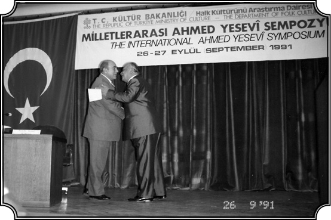
Orta Asya’da düzenlenen “Uluslararası Ahmed Yesevi (Kazakistanlı) Sempozyumu”nda (1991).
Türk hükümetlerinin Sovyetler dağıldıktan sonraki “Türki Devletler” politikasını nasıl değerlendirmiştiniz?
Burada biraz da Batı’nın Türkiye’den beklentilerine bakmak gerekli. Sovyetler dağıldıktan sonra (1991) Kafkaslarda ve Orta Asya’da, altı tanesinde Müslüman ve Türki halkın hakim durumda olduğu sekiz bağımsız devlet kurulmuştur. Buraların da tıpkı Balkanlar’da olduğu gibi Osmanlı Devleti’yle köklü ve tarihsel ilişkileri olmuştu. Balkanlar’ın yeniden bir uluslararası çatışma alanı olarak ortaya çıkması ve Sovyetlerin dağılmasıyla Batı’nın Türkiye üzerine ilgisi yeniden alevlenmiştir. Tarih öngörülmeyen ve kimsenin beklemediği bir biçimde Türklerin kültürel, dini ve siyasi mirasını yeniden canlandırmış ve Türkiye’yi Avrupa’nın çağdaş siyasetleriyle iç içe geçirmiştir. Bu devletler bugün Asya, Avrupa ve Amerika arasında oluşan güç dengesinin hayati parçaları haline gelmiştir. Bu ülkeler biraz da Türkiye’nin baskısıyla Latin alfabesine geçmişler ve eski ilişkiler yetmiş yıllık bir kesintiden sonra devam etmeye başlamıştır. Batı, Türkiye’yi bir istikrar unsuru olarak görmekte ve yeni oluşmakta olan bu devletler için bir rol model olmasını arzu etmektedir, özellikle demokrasi, laiklik ve serbest teşebbüs konularında. Karadeniz Ekonomik işbirliği Projesi bu rol modelliği güçlendiren bir projeydi. Geçmişte Türk hükümetleri hem bu ülkelerin Türk ve Müslüman halklarıyla hem Balkan Türkleriyle eski tarihsel ve etno-dini ilişkileri yok saymıştı, bu biraz da Sovyetlerin iç işlerine karışmama, belki de Pan-Türkizm’le Pan-İslamcılık’la suçlanmama adına, uzak durmak için yapılmıştı. Ama dağılmadan sonra Türk hükümeti kendiliğinden oluşan ya da kendisine uygun görülen bu görevi tereddütsüz ve üzerinde düşünmeden kabul etmiş ve geçmişteki bu ülke Müslümanlarıyla olan olumsuzluklarla şimdi kendisinden beklenenler arasındaki çelişkileri fazla dikkate almamıştır.
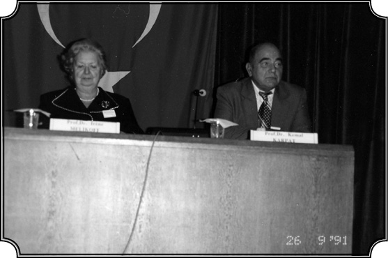
Fransız Profesör Irene Melikof ile Ankara’da bir konferansta. (1998)
Batı aslında Türkiye’nin “Batılı” yanının o ülkelerle ilişkide taşınması ve kullanılması gereken yanı olduğunu görerek hareket ediyor, Türkiye de zaten Avrupa Birliği’ni hedef olarak seçtiği gibi hiç zorlanmadan bu projeyi uyguluyor galiba…
Evet, rol model olarak Türkiye’yi cazip hale getiren bütün özellikler Batı’dan alınmış özelliklerdir. Bir başka deyişle Batı; Türkiye’yi Batı değerlerini bu yeni oluşmaya başlayan Müslüman devletlere aktarmak için bir ara istasyon olarak kullanmayı düşlemiştir. Bu devletler Hıristiyan olsaydı ya da Türkiye’den daha iyi modellik yapacak bir ülke bulunsaydı, Türkiye’yi anında devre dışı bırakırlardı. Çünkü Avrupa yetmiş yıl boyunca modernleşmeye ve Batılılaşmaya çalışan Türkiye’yi yok saymaya hazır görünmektedir. Yani Türkiye’nin “Batı aleyhtarı dinci bir tehlikenin kucağına düşme” olasılığı, eski imajla zihinlerde paralellik kuran bir imajı olması Avrupa’nın işine gelmektedir. Batı, Türkiye’yi demokrasi, laiklik ve kapitalizm görüşlerini Asya’da kendisiyle aynı dini paylaşan ülkelere taşıyacak ölçüde Batılı fikirlerle donatılmış görmesine rağmen, İslam dinine bağlılığı nedeniyle Avrupa kültürünün ve uygarlığının gerçek tarafı olarak kabul etmedi. Avrupa, sıradan bir Türk’ün hayatında önemli rol oynayan Müslümanlığın, onları Hıristiyan karşıtlarından daha liberal hale getiren, kendilerine özgü bir Türk kültürü ve davranış özellikleri geliştirmelerine yaradığını hiçbir zaman anlamamıştır. Gerçekten de Türkiye yalnızca, Asya ve Müslüman Türk mirasını koruyarak bölgede bir rol oynayabilir. Çünkü Orta Asya ülkeleri Müslüman ve etnik Türk geçmişlerine büyük önem veriyor görünümündedirler. Bunlar çeşitli üst düzey devlet adamları tarafından defalarca dile getirilmiştir. Hatta Kırgızistan’da “ahlaki değerlerin kaynağının İslamiyet olduğunun Anayasa’ya yazılması ve devlet başkanının Mekke’ye Umre ziyareti yapması” önerilmişti. Türkiye’de o zamana kadar müteveffa Turgut Özal dışında hiçbir Türk padişahı ya da devlet başkanı görevde olduğu sırada Mekke’yi ziyaret etmemişti. Aslında özetle şunu söyleyeyim son olarak: Türkiye ne İslamiyet’ten ne Türklükten ve ne de Batı biçimi modernleşmeden vazgeçebilir. Modernleşmeye bağlılık, modern Türkiye’nin yaşantısında temel noktadır ve öyle kalacaktır. Bu, Atatürk tarafından sürekli yinelenen bir söylemdi ve 1924 Anayasası’nda Cumhuriyet’in altı temel ilkesinden biri olan “İnkılâpçılık” yani yeni dilde devrimcilik olarak 1938’de kutsanmıştır. Bugün, modernleşme ve ilerleme konusundaki Batılı fikirler, toplum kültürünün ayrılmaz bir parçası haline gelmiştir ve nasıl ki Türkiye İslamiyet’ten vazgeçemezse, toplumu modernizmden soyutlamak da aynı ölçüde olanaksızdır.
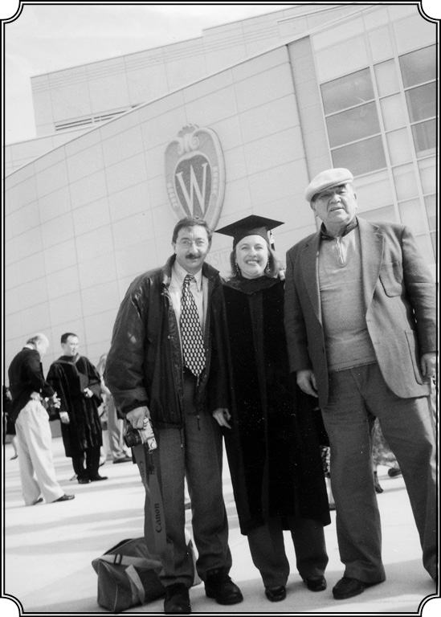
Orta Asya üzerine doktora derecesini alan öğrencisi Deniz Balgamış ve kardeşi Tolga Balgamış ile.
Bu konuları makalelerinizde sürekli işliyorsunuz zaten. Artık bitirirken son durum nedir, sizin Orta Asya Programı halen sürüyor mu?
Bu programı kurduktan sonra Orta Asya tarihi dersini verecek birini getirmiştik. Herkes buna aday olabilirdi, açıkça ilan ettik. Bir Fransız olan Vincent Fourniou isminde bir zatı aldık. Vincent Fourniou Özbekistan üzerinde uzmandı, karısı ise Tacikistan üzerine ihtisas yapmıştı. Wisconsin’da altı sene ders verdiler. Sonra Fransız hükümeti onları Taşkent’teki Fransız Enstitüsü’ne müdür tayin etti. Programımız devam etti. Sonra Orta Asya Cemiyetini kurduk. Onun da kuruculuğunu ve dört sene kadar başkanlığını ben yaptım. Şimdi isim değiştirerek Amerika çapında dört bine yakın üyesi olan büyük bir cemiyet haline geldi. Orta Asya Programı halen devam etmektedir. Şimdi bu Program’ın başında Kazan Tatar kökenli Uli Şamiloğlu isimli bir zat vardır. Ben de bu programa, iki sene evvel emekliye ayrılıncaya kadar katkıda bulundum. Zaten bu alanda benimle doktora yapan birkaç kişi vardır. Mesela Pakistanlı olan Edip Khalid sahasında ün kazandı, Brian Williams, halen Massachusetts Üniversitesi’nde profesör, Kırım üzerine kitap yazdı. Gene bu alanda çalışan Türkiye’de hizmet gören Hasan Kırımlı, gene değerli bir insan olan Kazakistan üzerine ihtisas yapmış Doktor Deniz Balgamış var.
Siz artık emekliye ayrıldınız, ilişkinizi nasıl sürdürüyorsunuz?
İki buçuk sene evvel emekliye ayrıldım. Hâlâ çalışma gücüm olmasına ve hâlâ birçok öğrencim, doktora öğrencim olmasına rağmen emekliliğimi istedim. Kanunen, şeklen emekli oldum. Fakat faaliyetlerim; konuşmalar, konferanslar şeklinde imkân nispetinde devam etmektedir. Bu arada New York’ta Golden Meadow adlı bir Türk Vakfı vardır, kendi imkânlarıyla kurdukları bir Vakıf. Orası için yaptığım konuşma ve faaliyetler devam etmektedir. Benim hâlâ bütün vaktimi ve gücümü verdiğim büyük bir proje vardır; bu da Wisconsin Üniversitesi’nde kurduğum Türk Çalışmaları Merkezi’dir. Bu Merkez, Üniversite’nin bir kuruluşu olarak onaylanmış ve devam etmektedir. Ben bu Merkezin müdürü olarak tayin edildim, yardımcı müdür ise benimle doktora yapmış, çok çalışkan, bu işlere gönül vermiş, işlerin büyük bir kısmını yürüten Doktor Deniz Balgamış’tır. 1980 yılında yayınlamaya başladığımız Uluslararası Türk Araştırmaları adlı dergiyi bu Merkez’e devrettik. Tüm dünyaya yayılmış, seksene yakın kütüphane bu dergiyi almakta, koleksiyon yapmaktadır, bunun yanında şahsi abonelerimiz de vardır. Fakat Merkezin ana amacı tabii ki bu derginin yayınlanmasını sürdürmekten daha geniş kapsamlıdır. Merkez her şeyden evvel, benim otuz yedi sene çalışarak kurduğum Türk Programı’nı devam ettirmektedir. Gerçekten bugün Wisconsin Üniversitesi’nde Türkiye ile ilgili üç kürsü vardır. Benim kürsüm, Türk Dili ve Edebiyatı Kürsüsü, Orta Asya ve Türk Etütleri ki Orta Asya’yı, Rusya’yı ve Türkiye’yi içine alır. Bunların hepsini Üniversite kendi bünyesi içinde kendi bütçesiyle desteklemektedir. Bu program sonsuz didişmelerle, çok zorlu bir çalışmayla, birçok insanı ikna ederek, Türk Etütleri’nin önemini anlatarak, idarecilerin desteğini alarak kurulmuş ve yürütülmüştür. Kendime fazla bir pay çıkarmak istemiyorum ama şurası da muhakkak ki bunları ben kurdum, yürüttüm ve şimdi de bu Merkez sayesinde bunları genişletmek amacımız vardır. Tarih Fakültesi’nde benim yerime bir genç arkadaş alınmıştır. Bilkent’ten mezun olup Princeton Üniversitesi’nde doktorasını yapmış Doktor İpek Yosmaoğlu. Böylece Tarih kısmı devam edecektir. Fakat bu yeterli değildir. Wisconsin gibi çok tanınmış ve etkisi çok büyük olan bir üniversitede Türk Etütleri’ni daha da genişletmek ve bir iki kürsü ilavesiyle daha da zenginleştirip kökleştirmek gerekmektedir. Mesela Selçuk ve Osmanlı’nın ilk devirlerini etüt edecek yeni bir kürsüye ihtiyacımız vardır. Böyle bir kürsü kurulmadığı takdirde son yüzyılları ve modern Türkiye’yi inceleyen bölüm de pek sağlam olmaz. Bunun yanında daha esaslı dersler verecek çok değerli insanlar getirtip konferans verecek, verdirtecek yeni elemanlara ihtiyacımız vardır. Bu arada Türkiye’ye gruplar göndermekteyiz, ders almak ve dil öğrenmek ve konu incelemeleri yapmak için. Yani bu programı genişletmek zorundayız.
Bu Merkez’in Amerika’daki Türk topluluğu ile ilişkileri nasıl?
Merkezin amaçlarından biri de Amerika’da oluşan Türk toplumunu daha iyi anlamak, bilgilenmek ve onun sorunlarına çözümler bulmaktır. Çünkü 1970’lerden beri Amerika’ya büyük bir Türk akını başlamıştır. Bugün çeşitli eyaletlerde 200 bin kadar Türk vardır. Ve bunların çoğu buraya devamlı kalmak için gelmişlerdir. Dilini, dinini, kültürünü, geleneklerini muhafaza ederek burada bir Türk toplumu oluşturmak istemektedirler. Biz de Merkez olarak bu oluşmakta olan toplumun sorunlarını inceleyerek onun kültürünü, dilini koruyarak burada kendisine bir yer edinmesini sağlamalıyız. Bu grup burada kurulursa Amerika’daki en etkili, en güçlü lobi, Türk lobisi olabilir. Ancak Türkler böyle söz sahibi, siyasette etkili bir grup oluşturabilirlerse Amerika’da etkili olabilirler. Şimdiye kadar öyle bir grubun gelişmesine fazla insan ilgi göstermemiştir. Hâlbuki Türkiye’nin uzun vadedeki çıkarları böyle bir Amerikan-Türk grubun varlığını gerektiriyor. Merkezimizin yapmak istediği işlerden birisi de böyle bir grubun kimliğini, benliğini muhafaza ederek kurulması ve etkili olmasını sağlamaktadır. Yani Merkez her bakımdan Türkiye için can alıcı faaliyetler göstermektedir. Fakat Merkez para desteği görmeden gelişemez, yaşayamaz. Birçok yere başvurduk, elimizden geleni yaparak durumu anlattık fakat bize herhangi bir para yardımı yapılmadığı gibi manen de destek görmedik. Bu çok acı, üzüntü verici bir olaydır. Amerika’da dünyanın her yerinden gelmiş guruplar vardır. Bunlar kurdukları enstitüler, merkezler sayesinde görüşlerini tanıtmakta, kültürlerini devam ettirmektedirler. Ve o insanlar o kurumlarına büyük para yardımı yapmaktadırlar. Bizde ise kültür kurumlarına böyle bir yardım geleneği yerleşmediği gibi bunun düşüncesinden bile uzaktırlar.
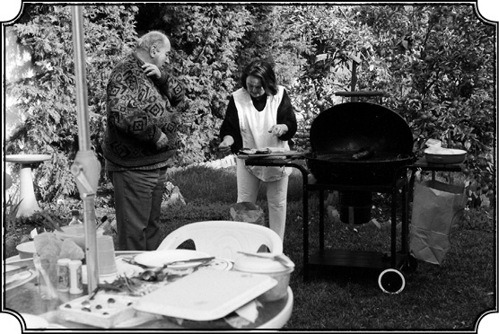
Yeğeni Ayşe ile Los Angeles’ta.
Şimdi Amerika’ya dönünce ne yapacaksınız mesela?
Son bir projem var. Madison’a dönünce, benim senelerden beri arşivlerden topladığım bu malzemeyi, bu arada bahsettiğim Ermeni meselesi üzerinde çalışırken bana 23 sene yardım etmiş olan Hayri Bey’in topladığı malzemeyi, yeni bir düzene sokarak, benim Üniversite’deki kütüphanemin Türk koleksiyonuna sokacağım. Çalışmalarımın bitmeyen bir kısmını da tamamlayarak, “Göçler, Göçmenlerin ve Aşiretlerin Yerleşmesi”yle ilgili çalışmayı bitirip, bütün bu evrakı kütüphaneme teslim edip, orada bir arşiv kuracağız. Ve bu arşiv için bir arkadaşla da anlaştım. Benimle çalışacak, bu arşivi kuracağız. Bu sayede benim şimdiye kadar kullandığım birçok malzeme ve bilhassa arşiv malzemesi ve bu arada Hayri Bey’in yirmi sene içinde topladığı ve açık seçik Latin harflerine geçirdiği evraklar, başka öğrencilerin de hizmetine ve araştırmacılara tahsis edilecektir. Bunun için Amerika’nın en ünlü vakıflarından biri olan, Pittsburgh’taki Mellon Vakfı’ndan yardım aldım. Mellon Pittsburgh’un büyük çelik sanayi patronlarındandı. Bir vakıf kurdu ve bu vakıftan yaşları ilerlemiş, tecrübe sahibi, emekli profesörlere yeni projeler geliştirmeleri için bir miktar para veriyor. İşte ben de buraya geçen sene müracaat ettim, Amerika çapında seçilen on-on beş proje arasında benim projem de var ve böylece ben bu arşivleri kütüphaneme, üniversite kütüphanesine yerleştirmek için gereken parayı da elde ettim. Şimdi önümde duran, hemen üzerinde çalışmaya başlamam gereken proje budur: “Göçlerin Yerleşimi.” Ve sonra bu evrakı, üniversiteye depolamak. Bu yıl (2007) birlikte çalışmak için ikisi de Eskişehir Anadolu Üniversitesi’nde yardımcı doçent olan Dr. Kemal ve Esra Yakut’u davet ettik, yaz başından beri bu proje üzerinde çalışmaktadırlar.
Peki emeklilik hayatına adapte oldunuz mu? Yeni döneme başlarken bir hayat muhasebesi yaptınız mı?
Emekliliğimin ilk ayları bir hayli güç oldu. Çünkü alıştığım ritme son verip yeni bir düzende çalışmayı ayarlamam gerekti. Ama diğer çalışmalarım sayesinde okulu bırakmış olmanın boşluğunu doldurdum. Hiçbir zaman yalnızlık hissetmedim. Hem kolay ilişki kuran, arkadaşlık bağları güçlü bir insan olduğumdan, hem de doğayla baş başa olmayı sevdiğimden bu konuda bir sıkıntım olmadı. Esasen çıkardığım dergi ve üstlendiğim görevler, konuşmalar, konferanslar, zamanla beni eskiye nazaran daha da meşgul etmeye başladı. Üstelik artık erken kalkıp derslere yetişme derdi de kalmadı. Keyfini de çıkartıyorum yani. Buna rağmen emeklilik bir yerde, yolun sonuna işaret etmektedir. Acı tarafı budur. Ben eğitime, devamlı, muntazam eğitim vermeye 1957’de başladım, 2004’te son verdim. Ki bu 47 yıl devamlı eğitim vermek, dünyanın her köşesine gidip konferans vermeyi de kapsayan ömür boyu bir faaliyettir. Buna devam edememek insana hüzün veriyor. Uzun ve bazen meşakkatli, bazen tatlı, bazen heyecanlı, bazen korku dolu bir yolculuğun sonuna işaret ediyor ve insanı geriye dönüp bakmaya mecbur ediyor. Bir bakıma insanı arkasına dönüp, geçen yılların muhakemesini, hesaplaşmasını yapmaya zorluyor. Ben bu hesaplaşmada diyebilirim ki; geçmiş yıllarım çok dolu, verimli, renkli ve beklentilerimin çok üstünde, fevkalade güzel geçti. Armutlu’nun bir köyünden çıkmış ve hayatta binbir güçlükle karşılaşmış bir insanım. Bunların tümünün içinden sağlıklı bir şekilde geçerek, hem zihinsel dengemi koruyarak hem içimdeki duygularımı her zaman taze şekilde muhafaza ederek, hem de fiziki sıhhatimi oldukça iyi koruyarak bu günlere ulaşmış olmayı bir başarı sayıyorum. Dünyanın ve Batı’nın en tanınmış kurumlarında ders vermiş, konferanslar vermiş, orada büyük itibar görmüş bir insanım. İftihar verici, doyurucu bir meslek hayatı yaşadım. Arkamda ne aile, ne para desteği vardı. Bütün bunları kendi çabamla başarmış olmak herhalde yabana atılacak şeyler değildir. Diğer yandan, gittiğim ülkelerin en yüksek mevkilerinde bulunan insanlarla tanıştım, onlardan rağbet ve hürmet gördüm. Beyaz Saray’a çağrılan az sayıdaki insanlar biriyim. Türkiye’de birkaç cumhurbaşkanı ile şahsen tanıştım, liderlerle dostluklarım oldu, edebiyatçılarla dostluklarım oldu. Onlara saygı, sevgi ve hürmetle yaklaştım, aynı tavırları gördüm. Birçok kitap yazdım. Dünyanın tanınmış dergilerinde yazılarım çıktı, halen de talep gelmektedir. Özetle bence bu bir başarı çizgisidir.
Bu başarının sırrı sorulduğunda, “sizi Kemal Karpat yapan nedir” diye sorulduğunda ya da kendinize sorduğunuzda buna nasıl yanıt veriyorsunuz?
Bu sorunun cevabı hem güç hem kolaydır. Güçtür, çünkü bir insanın hayatını yöneten, düzenleyen o kadar çok olay, insan, ilişki, beklenmedik rastlantı vardır ki bunların hepsini sayıp dökmeye imkân yoktur. Sizinle de hepsinden söz edemedik zaten, belki de hiçbir zaman anlatamayacağım rastlantı ve olaylar da vardır. Ama bir taraftan kolaydır çünkü bir yerde insanlar küçüklüklerinde kendilerine bazı temel prensipler yaratır. Bunlara da içtenlikle inanır ve sadakatle takip ederse bunlar olur. Benim hayatımda birinci istikamet verici nokta, kimliğimin, kişiliğimin çok erken yaşta kendini belirtmesi olmuştur. Rumeli’nde bir Türk ve Müslüman olarak, eskiden Türk toprakları olan o topraklarda, yabancı bir siyasi rejim altında yaşamak her şeyden evvel benim kimliğimi tayin etmiştir. Daha küçük yaşlarda her şey benim Türk olduğumu yüksek sesle söylemiştir. Rumen görevliler yüksek sesle “Türk, Türk” diye hakaret etmek için söylediler. Yaşadığım yerler, camiler, hamamlar, yer isimleri benim bu topraklara ait olduğumu gösteriyor. Soruyorsun o zaman kendine “ben kimim?” Hem buranın yerlisisin hem yabancısısın. Böylece daha küçük yaşta kimlik meselesi yalnız kültürel değil siyasi bir mesele olarak da ortaya çıktı. Benim kimliğim Batı taklidi ya da tepeden inme yaratılmış bir kimlik olarak doğmamıştır. Tarihin, toprağın, kültürün köklü bir şekilde yaratmış olduğu bir kimliktir. Köklü bir geçmişe sahip bir grubun bir parçasıyım. Benim kişi olarak yaşama hakkım tartışılmayacağı gibi, mensup olduğum topluluğun da kendi kültürü içinde yaşama hakkı asla tartışma konusu edilemez. Benim kimseden bu konuda, yaşam hakkı konusunda izin almama gerek yoktur. Bende biraz da bir inatçılık, kendine güvenen insanlarda görülen bir sertlik, bir dayanıklılık vardır. Kolay kolay yılmam, korkmam ve seçtiğim yolda yürümekten de caymam. Bunlar belki benim yaradılışımda, oralarda yaşamış olmamla ilgilidir. Ama ikinci nokta ise Mecidiye Medresesi dönemidir. Ailemizde temiz ve hür bir inanç vardı. Ablalarım kadın olarak el üstünde tutulurdu, kaç-göç yoktu. Serbestiyet vardı. Bunlar benim kadın üzerine görüşlerimi de etkilemiştir. Ben böyle doğal, temiz ve hür aile ortamında yetiştim. Medrese’de ise köhne, dogmatik, şabloncu bir iman görüşüyle karşı karşıya geldim. Orada beni bu havadan kurtaran da modern, Batı ayarında, Fransız sistemine dayalı, her bakımdan çağdaş olan Rumence eğitimdi. Ben böylelikle bu iki dünya arasında kendimi buldum. Ama birini terk edip öbürünü benimsemedim. Beni kurtaran husus, bu iki dünya arasında bir üçüncü yol yaratarak, her iki dünyanın da güzel yanlarını alarak bir sentez yapmamdır. Kendi yolumu kendim çizdim, okudum, düşündüm, tartıştım, araştırma yaptım, çok acı çektim ve kabataslak da olsa yolumu kendim seçtim. Arkadaşlarımdan çok farklıydım. Hocalar bu farklılığımı sınıfta da söylerdi;”Bir tarafta Kemal, diğer tarafta sınıfın geri kalanı...” Hatırlarsanız hatıratımın başında Svilengrat’ta tren beklerken aldığım kararlardan söz etmiştim. Her zaman doğruyu söyleyeceğime, temiz ve ahlaklı bir hayat süreceğime, her yerde vatanım(henüz görmemiş olsam da), toplumum için çalışacağıma, tarihini, kültürünü tanıtacağıma dair kararlardı. O yaşta bir çocuğun alması güç kararlardı. Bunlara sonuna kadar sadık kaldım. Her tür yoksulluğa, güçlüğe katlandım ama dönmedim, bugüne kadar bu kararlarımı uyguladım.
Peki, özel hayatınızla ilgili özel bir soru sorayım. 1967’de eşinizle ayrıldıktan sonra bir daha evlenmediniz. Böyle bir istek ve ihtiyaç mı hissetmediniz, bu 40 yılı bu şekilde yaşamak zor olmadı mı, mesela çocuk sahibi olmayı istemediniz mi?
Çocuk istedim ancak gerçek manada sevdiğim, seveceğim bir kadından olmasını istedim. Şimdi kadın meselesine gelince, belki de burada benim düşüncelerim normal bir erkeğin düşüncelerinden bir hayli farklıdır. Bu da yine benim aile yapıma, ailemle olan münasebetlerime ve benim belki bir yerde yeteri kadar şefkat görmememe bağlanabilir. 10 yaşımda ailemden ayrılıp okula gittiğimde bir ailenin yanında kaldım, sonra Mecidiye’de yatılı okudum. Ancak yaz tatillerinde ailemle olabildim. Bir çocuğun ihtiyacı olan sürekli aile ilgi ve şefkatinden mahrum kaldım. Bunlar orada olduğum sürece vardı ama okullar nedeniyle bunlardan yeteri kadar beslenemedim. Üç tane ablam vardı. Üçü birbirinden güzel, parlak, zeki, cıvıl cıvıl insanlardı. Akraba kızları da öyle. Şarkılar söylenir coşkuyla eğlenilirdi. Müzik sevgisi de bende o zaman doğdu. Bütün bu güzel şeyleri o kızlardan, kadınlardan öğrendim. Ve bütün güzel şeyleri kadına bağladım. Böylece kafamda kadın, Allah’ın yaratmış olduğu en mükemmel varlık olarak belirdi. Ruhuyla, sesiyle, gülüşüyle, bakışıyla dünyalar açan, insanı yeni yeni dünyalara götüren bir mahluk olarak gördüm kadını. Yani onu sadece bir seks vasıtası olarak görmedim. Bir azize, yüksek duygulara sahip, güzeller güzeli bir yaratık olarak gördüm.
Bu nedenle de mi dokunamadınız onlara?
Bu şekilde düşündükten çok sonra onun seks tarafını, insan tarafını da anlamaya başladım. Fakat bu ikisini birleştirmek istedim. Yani hakiki, derin sevgiye dayanan bir kadın erkek ilişkisi düşündüm. Belki lüzumundan fazla idealleştirdim ama benim için bu çok ilginç bir şey oldu. Çünkü kadını yüksek bir mevkiye çıkarmakla aynı zamanda kendimi de yüksek bir mevkiye çıkarabildim. Aslında benim kadından beklediğim biraz da şefkatti. Bana yakınlık gösteren sayısız kadınlar olmuştur. Bazıları gelip, zekamı düşüncemi övmüşlerdir. Gençken yakışıklıydık da herhalde. Aşık olanlar, hemen yatmayı teklif edenler oldu. Bir erkeğin düşünemeyeceği kadar çok çeşitli kadından ilgi gördüm, teklif aldım. Ama bunları hemen bir ilişkiye dönüştürmeye, bundan istifade etmeye kalkmadım. Neden? Çünkü gerçek manada karşılıklı bir ilişkinin karşılıklı bir sevgiye, saygıya, biraz da şefkate dayanmasını istedim. Şefkatin ne olduğunu bilmeyen kimseler bunu takdir edemez. Kadın erkek münasebetleri içinde saygı, sevgi ve şefkat gereği insan olmanın gereğidir. Karşılıksız bir şey verebilmek, onun yarınını düşünmek, onun üşüyüp üşümediğini düşünmek, karnının aç olup olmadığını düşünmek, tüm bunlar basit şefkat belirtileridir. Fakat bir insanın hayatında çok önemli bir yeri vardır, öyle de olması gerekir zaten. Bir film görmüştüm bir zaman: Savaş zamanı esir düşmüş bir Fransız, nihayet esaretten kurtulur, 3 yıl sonra döner bir şehre gelir. Yakışıklıdır. Bir kadın onunla ilgilenir, birlikte olurlar. Kadın sabah sorar, “Nasılsın, memnun oldun mu?” Adam bağırır (Fransızca), “Sen bana her şeyi verdin ama şefkati vermedin. Benim sekse değil şefkate ihtiyacım var. Çok, çok ama çok şefkate ihtiyacım var, bunu vermedin!” der.
Evliliğinizde de bu şefkati görmediniz herhalde?
Görmedim. Evlilik, bir insanla, hele de uyuşamadığınız bir insanla beraber yaşamak çok zordur, yıpratıcıdır. Benim için evlilik bir hapishane hayatı oldu. Verimliliğimi, kabiliyetimi, duygularımı sınırladı, sıkıştırdı ve benim tabii olarak yaşamamı engelledi. Boşandıktan sonra daha verimli ve rahat çalışır hale gelebildim. Ben evliliğin karşısında olan bir insan değilim. Belki tanıdığım kadınlar arasında evlilik yapabileceklerim de olmuştur. Ama hayat ve vakit buna imkân tanımadı, olmayınca olmadı işte. Uzun zaman peşimi bırakmayanlar da oldu. Ama ben korktum, tekrar bir hapishane hayatına düşmekten. Başka türlü de olabilirdi. Hafif bir pişmanlığım var bu konuda, “keşke olabilseydi” diye. Bunun dışında bir pişmanlığım yoktur.
Hatıratımı sonuçlandırırken son olarak belirteyim ki; bu anlattıklarımı bir iki yer müstesna tamamıyla hafızama dayanarak anlatmaya çalıştım. Çeşitli ekonomik ve siyasi hayatta etkin olan insanlarla tanışmış, konuşmuş, fikir vermişimdir.
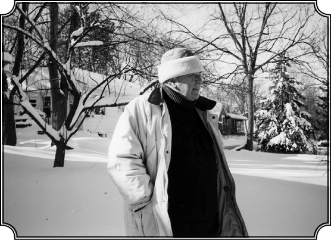
Madison’da evinin sokağında.
Daha evvel anlattığım gibi eski başkanlardan Jimmy Carter, temsilciler, Amerikan profesörleri, senatörler, bilim adamları, uzmanlar, vardır temas ettiğim insanlar arasında. Tüm bunlar bana katkıda bulundu. Benim onlara fikir verdiğim kadar ben de onlardan yararlandım, mesleki hayatım zenginleşti. Burada hepsine minnettarlığımı ifade etmek istiyorum. Ayrıca eski hocam olan Ömer Lütfi Barkan’ın, Türk milli tarih tezini oluşturan Rahmetli Fuad Köprülü’nün ve hâlâ hayatta olan ve büyük hürmetim olan, hatıratını yayınlamış olan Halil İnalcık’ın isimlerini zikretmem yerinde olur. Ayrıca önem verdiğim, Türkiye’de tarih alanında çok önemli yeri olan Tarih Vakfı vardır. Bir ara onu kapatmaya kalkmışlardı ama dünya çapında bir imza kampanyası ile kalması sağlanmıştır, büyük hizmetler vermiştir ve desteklenmelidir. Tanıdığım ünlülerin dışında, her gün kendi ayaklarını süren, topluma yararları olan birçok insan vardır ama bunları teker teker saymak imkânsızdır. Ufak tefek tarih yanlışlıkları olabilir, anlatamadığım veya hatırlamadığım birçok olay daha vardır. Bilhassa şahsım, sosyal hayatım ve dostlarımla ilgili hatıraları pek dile getirmedim. Belki de beni tanımak isteyenler için bu gibi şahsi hatırat daha ilginç olabilirdi. Neyse son olarak diyorum ki, işte Amerika’da böyle bir Merkez kurulmuştur ve benim kendi imkânlarımdan emekli maaşımdan kopardığım bir miktar para ile ayakta durmaktadır. Bence bu Merkez’in devam etmesi, güçlenmesi yalnız benim Türk tarihine Türk kültürüne, Türkiye’yi tanıtmaktaki hizmetimde bir işaret, bir sembol olarak kalmayacak aynı zamanda Türkiye’nin birçok tanıtma ihtiyacını da karşılayacaktır. Bunun böyle görülmesini candan temenni ederim. Dağı delmek isteyen, dağa çıkmak isteyen ırmağın suyu hâlâ tükenmemiştir…
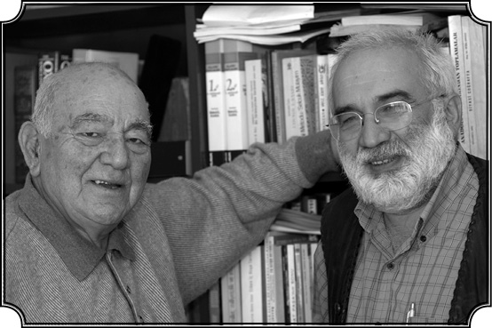
Kemal Karpat, bu söyleşiyi yapan Emin Tanrıyar’la birlikte. (2007 Eylül).
Peki, Sayın Karpat bu sohbetimizi bitirirken size daha uzun ömür ve çalışmalarınızda başarılar dilemek istiyorum. Son bir soruyla vedalaşalım: Hayatta “şunu da yapsaydım keşke, keşke bunu da yapmış olsaydım” dediğiniz, içinizde ukde olarak kalmış bir şey yok mu hiç?
En büyük isteğim edebiyatçı olmaktı ve kendimi aslında edebiyatçı olmak için yetiştirmiştim. En büyük üzüntüm budur.
Herhalde çok iyi bir yazar olabilirdim. Çok okudum. Dünya edebiyatının baş eserlerini okudum. Daha akademik kariyerimin başındayken samimi kadın bir arkadaşıma bu isteğimi anlatmıştım. Bizim temel halk edebiyatçılarını inceleyip, onları kullanarak, daha gelişmiş bir hale getirererek, Türkçe’nin tüm güzelliklerini gösterecek bir dille roman yazıp içimdeki sevgiyi dışarı çıkarmak istemiştim. Bu hâlâ da böyledir. Hâlâ içimde her şeye, hayata, insanlara, güzel şeylere karşı sıcaaak, deriiin bir sevgi vardır. Bu sevgi o kadar büyük ki beni boğuyor, dışarı çıkıp “kainatı seviyorum, insanlığı seviyorum” diye bağırasım geliyor. Sanki edebiyat, içimdeki bu derin sevgiyi daha iyi ifade etmeme yarayacaktı. Bu sayede insanlara iyi bir şeyler vererek katkıda bulunmayı isterdim. İlmi çalışmalar soğuk eserlerdir, bunun yerini tutamaz. Yapmadım, yapamadım. Çeşitli sorumluluklar, öğrenciler, araştırmalar, akademik zorunluluklar, hayatın pratik yönleri, para kazanma ihtiyacı gibi nedenlerle olmadı. Bir de hep kendimizi avuturuz ya “yarın yaparım” diye, bir de bakarsınız ki yarın kalmamış…
Kemal Karpat Kitabı’nın Yeni Baskısı İçin Yapılan Söyleşi2
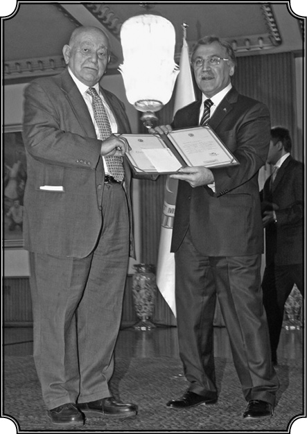
Kemal Karpat TBMM Onur Ödülü’nü Meclis Başkanı Mehmet Ali Şahin’in elinden alırken, 9 Aralık 2009.
“Ömrümü Türkiye’yi Tanıtmaya Harcadım”
Sayın Karpat söyleşimize başladığımızdan bu yana dört, kitabımızın ilk baskısından bu yana da 2 yılı aşkın bir zaman geçti. Bu arada siz de hiç boş durmadınız ve son olarak 2009 TBMM Türkiye’nin Tanıtımı Ödülü’nü aldınız. Kutlarım. Neler hissettiniz?
Sizinle bu kitap çalışmasına başladığımızdan bu yana geçen zaman içinde birçok yeni olayla karşılaştım tabii ki. Şüphesiz ki bu olaylar içinde Büyük Millet Meclisi’nin bana ödül vermesi en başta gelir. Bu ödül 9 Aralık 2009 senesinde Ankara’da Büyük Millet Meclisi’nde Meclis Başkanı Mehmet Ali Şahin Bey tarafından bana takdim edilmiştir. Yani bu ödülün verilmesi ve Büyük Millet Meclisi’nde ödül takdim olayı kanımca benim hayatımın en büyük olaylarındandır, bana şeref veren ve benim çalışmalarımı tanıyan bir harekettir.
Nasıl gelişti bu ödül süreci, siz böyle şeylerle uğraşan biri değilsiniz?
Haziran ayında İstanbul’daydım. Meclis’te bu ödül işlerine bakan komitenin başkanı yahut da başkanlığa bağlı bir zat telefon etti: “Kemal Bey Büyük Millet Meclisi ödülü adayları arasına sizi de katmak istiyoruz bu sene. Çünkü dışarıda Türkiye’yi tanıtmak, Türkiye hakkında eserler vermek konusunda siz çok büyük faaliyetlerde bulundunuz. Çok yararlı işler yaptınız. Bunun için, biz sizi ödüle layık görüyoruz. Sizi de listeye katacağız” dediler. “Başka kimler var?” diye sorduğumda bir de baktım listede Orhan Pamuk Nobel mükâfatını kazanan zat, bir başka isim sayın Prof. Dr. Ekmeleddin İhsanoğlu, İslam Örgütü Konferansı Genel Sekreteri var. Esasen kendisini öteden beri IRCICA Başkanı olarak çok iyi tanırım, ailece tanışırız. Evine gittim, evime geldi. Daha kim var, Fazıl Say büyük müzisyen. Bunların arasına Kemal Karpat’ı da koyacaklar. Dedim, “Ben ne yaptığımı biliyorum. Ama ben hiçbir zaman ödül almak, yaptıklarımdan istifade etmek, isim yapmak, şöhret kazanmak için yapmadım.” Yani söyleşimizde anlattığım gibi benim daha küçüklüğümden beri içimden gelen bu milletime karşı olan saygım, sevgim onun çok hürmete layık olduğu inancımdan doğan bir histir. Rumeli’de doğmuş, Osmanlı harabelerini göre göre bugünkü halimizi düşünerek, görerek yetişmiş bir kimse başka türlü yapamazdı. Üstelik ben yaptıklarımdan zevk alan, bunları adeta normal bir çaba gibi gören bir insandım. Dediğim gibi ben ödül beklemedim. Biliyorum birçok yerden ödül aldım, şeref üyesi oldum hâlâ da olmaya devam ediyorum. Ama ben bunlarla gururlanmıyorum, tabiatım değildir. Olağan şey olarak sayıyorum. Bazı kimseler kendini dev aynasında görür. Ben tam tersi, yaptığım işten zevk alan ve yeni yeni şeyler yapmak için heveslenen, çabalayan bir kimseyim. Bunlar benim için çok daha mühimdir. Ama yaptıklarım, takdir gördü. Bana şöhret getirdi bu ayrı mesele. Ama ben bunları aramadım, işte bunları düşünerek benim Büyük Millet Meclisi ödül adayları arasına girmem bir hayli garip geldi. Yaptıklarımdan emindim ve ödüle de objektif, soğuk kanlı düşünürseniz gerçekten bu kadar kişi arasından doğrudan doğruya bütün hayatını Türkiye’yi tanıtmaya vermiş bir kimse varsa benim. Ama şöhret bakımından, isim bakımından Orhan Pamuk’la kıyas edilemez. Orhan Pamuk’u romanları ve Nobel mükâfatı dolayısıyla herkes tanır. Dedim, “pekala madem benim de ismimi koymak istiyorsanız koyunuz.” “Peki o halde sizden isteyeceklerimiz var” dediler.
Neler istiyorlarmış?
Özgeçmişimi, kitaplarımı. “Eyvaah!” dedim içimden. Bir sürü iş çıktı, başıma. Biraz İstanbul’da dinleneyim, dostları göreyim derken bunları hazırlamak… Bir iki gün sonra yeğenim Medeni geldi. “Amca”, dedi, “aday göstermişler seni.” Dedim, “bir sürü önemli isimler var, evraklar var, hazırlanacak bir sürü şey var, bunları kim hazırlayacak?” “Ben hazırlarım” dedi. “Peki” dedim. Böylece Meclis’in bu işle uğraşan komisyonuna bunları gönderdik ve unuttum. Bu 2009 senesinin yazında oluyor. Mayıs’ta İstanbul’a gittim. Haziran’ın sonuna doğru on seneden beri bacağımda olan bir ağrının tedavisine karar verdim ve bunun için de doktora gittim. Dr. Münci Kalayoğlu’nun önerisiyle Doktor Yunus Aydın Bey muayene etti ve ameliyata girdim. Bir gece hastanede kaldım ve ikinci günü çıktım. Biraderim Cemal geldi, beni hastaneden aldı. Eve giderken yolda biraderin cep telefonu çaldı. Telefonda yeğenim Medeni, “Kemal Amcama Büyük Millet Meclisi ödül verdi” dedi. İnanamadım. “Medeni herhalde yanlış anlamış” dedim. Zaten ameliyat sancıları da pek fazla düşünmeme imkân vermiyordu. Nihayet eve ulaştıktan sonra dostlardan tebrik telefonları gelmeye başladı. Muhakkak ki büyük şeref, benim için çok derin manası olan bir şeydir. Dediğim gibi ben beklemedim böyle bir şey ve bunun için çalışmadım. Fakat ömrümü, bütün akademik hayatımı, aşağı yukarı yirmi beş yaşımdan beri bütün hayatımı Türkiye’yi tanımak, tanıtmak, anlatmak için harcadım. Çok kitap yazdım, makale yazdım, konferanslar verdim, dünyanın birçok yerine gittim. Yani ben bunu hak ettiğimi biliyordum ama beklemiyordum, istemiyordum, yani illa bana verilsin diye bir iddiam yoktu. Bunun güzel tarafı benim çabalarımın başkaları tarafından da görülmesidir, takdir edilmesidir ve nihayet bu yaşımda bana bu ödül layık görülmüştür. Çünkü ben milletim için, Türkler için, gerçekler için, hakikat için birşeyler yapmışım demektir, yapabilmişim demektir. Bunun için ödül beni derinden sevindirdi ve duygulandırdı. Çünkü bir yerde benim de bir inancım vardır. Bir yerde biz kadirşinas bir milletiz. Bağırırız, çağırırız, küfür ederiz, birbirimize söylemediğimiz kalmaz. Ama eninde sonunda bir yerde içimizde bir hak taraftarı, gerçek taraftarı bir nebze var, kalmış. O ortaya çıkar ve gerçekleri olduğu gibi kabul ederiz. İnsanların haklarını veririz. Şimdi beni sevindiren bu seziştir, yani eninde sonunda dürüst çalışan bir insanın hakkı daima verilir.
Bu olay sizce bu hasletin varlığını göstermesi açısından mı önemli?
İşte Büyük Millet Meclisi’nin ödülü benim için yalnız beni şereflendiren, sevindiren bir olay değil çok daha derinlere inen bizim milletin karakterinin bir ifadesi olan bir olaydır. Yani unutmayınız, ben daima milletimin büyüklüğüne, şerefine inanmış bir insanım. Çünkü bütün tarih, bunu göstermiştir. İyi taraflarıyla kötü taraflarıyla. Fakat iyi ve kötüyü bir teraziye koyarsanız şüphesiz ki iyi tarafları daha ağır basar. İşte kısacası ödül hikâyesi böyle başlamıştır. Ama ameliyat geçirdiğim ve istirahate ihtiyacım olduğu için gidip törenle ödülü alamadım. Nihayet Kasım ayında tekrar İstanbul’a döndüm, bir müddet orada istirahat ettikten sonra 8 Kasım’da Ankara’ya gittim. O gece Ankara’da kaldıktan sonra ikinci günü Büyük Millet Meclisi’nden gelen arabaya binerek Büyük Millet Meclisi binasına gittim ve hakikaten tören çok güzeldi. Bir kere Büyük Millet Meclisi başkanı, başkan yardımcıları, mebuslar, hatta bakanlar hepsi orada mevcuttu. Tören benimle doktorasını yapmış ve hala Bilkent Üniversitesi’nde doçent olan Dr. Hakan Kırımlı’nın konuşmasıyla başladı. Hakan hanımı ile benimle burada beş sene çalıştılar. Doktorasını buradan aldı ve sonra o da çok güzel bir tez yayımladı. O benim eski bir öğrencim olarak benim hakkımda düşündüklerini, başka öğrencilerin düşündüklerini anlattı. Ondan sonra Büyük Millet Meclisi Başkanı Mehmet Ali Şahin Bey çok güzel bir konuşma yaptı. Hatta bizim Dağı Delen Irmak kitabımızdan küçük bir parça alarak benim nasıl düşündüğümü gösteren bir parça okudu ve ondan sonra işte ödül verildi. Sonunda ödül töreni benim bir konuşmamla kapandı. Konuşmayı TRT televizyonu bütün yurda duyurdu ve konuşmayı birçok kimse de dinlemiş, beğendiklerini söylediler. Konuşmadan sonra otele gittim eşyalarımı toplayarak İstanbul’a döndüm. Birkaç gün sonra da Wisconsin’a Amerika’ya ulaştım.
Peki sayın Karpat hayatınızı anlatmaya vesile olan bu nehir söyleşi kitabımız çıktığında ilk neler hissetmiştiniz? Bu da başka bir manevi ödül anlamına mı gelmişti sizin için?
Evet aslında bu nehir söyleşi çalışmasının benim üzerinde yarattığı tesirden söz etmem gerekiyor. Uzun sayılabilecek ömrüm sürecinde birçok şey gördüm; birçok tecrübeden geçtim. Bunların bir kısmını size anlattım. Tabii bazı olayları, bilhassa kişisel münasebetleri anlatmadım ve zaten bunlar okuyucuyu ilgilendirmez. Fakat bu kitap sayesinde tüm geçmişimi, tüm hayatımı bir araya toplayarak takrar gözden geçirmek fırsatını buldum, birçok duyguyu ve unuttuğum birçok olayı hatırlayarak onları yeniden yaşadım. Herkesin bir tabiatı vardır. Benim tabiatım hep ileriye bakmak, ilerde yapacaklarımı düşünmek ve ona göre hareket etmektir. Arkada bıraktığım olayları ancak parça parça olay olarak görür, o zaman yaşadığım duygusal anları unuturum, hatırlayamam. Yani bu söyleşiye başlamazdan evvel ben geçmişimi olaylar çerçevesinde görerek bu olaylara bitişik, onların içinde yaşayan duyguları ve bunların benimle olan psikolojik ilişkilerini pek düşünmedim, dikkate almadım. Fakat bu söyleşi sırasında hatıralarımı anlatırken ve kayda alırken o birkaç ay içinde tüm yetmiş seksen senelik hayatımı birden tümüyle göz önüne getirerek adeta kendi kendimi buldum ve içimde yıllardan beri kilitlenmiş olan birçok duygunun ortaya çıkmasını bilmeyerek sağladım. Yani bu çalışma benim için kendimi daha yakından tanımaya, muhakeme etmeye, saklı kalan hayatımın duygusal taraflarını canlandırmaya vesile oldu. Bir büyük boşalma, ferahlama ve dünyayla daha yakından barışmaya yol açtı. Yani demek istediğim hatıratımı ortaya çıkarmaya vesile olan bu çalışma benim için psikolojik bakımdan, entelektüel bakımdan bir açılma, ferahlama adeta sesle içimde kalanları birer birer toplayarak ortaya çıkarmama imkân verdi.
Böylelikle bizzat sizin yazdığınız değil ama sizinle ilgili doğrudan hayatınızı anlatmanıza vesile olan, hatıratınızın da kayda geçmesini sağlayan bir çalışma yaptık sizinle…
Şimdi bu kitabın yayımı ile ilgili çok ilginç, beklenilmedik, tahmin edemediğim bir olayı hatırlatmak istiyorum. Emin Bey sizinle tabii çok yakından tanışarak beraber çalıştık. Bu nehir söyleşi kitap fikrini ortaya atan kurum İş Bankası Yayınları olmuştur. Eğer İş Bankası Yayınları bu konuyu ele almasaydı belki de bu söyleşi vesilesiyle hatıralarım da yayımlanmayacaktı. Gerçekten İş Bankası Kültür Bölümü mensupları fevkalade güzel çalışarak, kayıtları harflere dönüştürerek, düzeltmeler yaparak, resimler koyarak çok güzel bir başarı ile bu kitabı hazırladılar ve basıma hazır vaziyete getirdiler. Fakat son anda İş Bankası bu kitabı yayımlamaktan vazgeçti. Kitabı nihayet İmge Kitabevi yayımladı. Kendilerine teşekkür ederim. Şimdi bu kitabı Timaş yayımlıyor, Timaş hakkında söyleyeceklerimi sonraya bırakıyorum. İş Bankası’nın bu kitabı bu kadar emek vererek hazırladıktan sonra yayımlamaktan vazgeçmesini ben bir türlü anlayamadım. Ama durumu burada tekrar uzun uzadıya anlatmaktansa bu konuda Zaman Gazetesi’nde 13 Şubat 2009 ve 14 Şubat 2009 tarihlerinde çıkan mektubumu okurlar ileriki sayfalarda okuyabilirler.
Edebiyatın önemi
Söyleşimizin son bölümünde aslında bir “edebiyatçı” olma isteğinizin içinizde bir ukde olarak kaldığını söylemiştiniz. Basılan kitaplarınız arasında Edebiyat ve Toplum başlıklı derleme bir kitap var. Bu sizin kısmen de olsa ukdenize merhem oldu mu acaba?
Timaş benim birçok yazımı, makalemi toplayarak şimdiye kadar dört kitap halinde Kimlik ve İdeoloji, Elitler ve Din, Edebiyat ve Toplum, Asker ve Siyaset başlıkları altında yayımlamıştır. Bu kitaplar arasında benim en çok sevdiğim, önem verdiğim ve üzerinde biraz daha çalışarak genişletmek istediğim kitap Edebiyat ve Toplum’dur. Çünkü Edebiyat ve Toplum kitabında sosyolojik, psikolojik, ekonomik, siyasal bilgilerin, ilimlerin ele alamadığı birçok konuyu ele almak istedim. Daha doğrusu edebiyat yolu ile bu konulara duygusal, insani, kişisel, herkesi alakadar edebilecek bir yön verildiğini anlatmak istedim. Önümüzdeki baskılarda kitabı daha da genişletmek ve ele almadığım bazı konuları anlatmak istiyorum. Çünkü bir yerde yeni Türk toplumunun hatta Türk Milli Devletinin ortaya çıkışının yani yeni Osmanlı Devleti’nin yeni bir kimlikle, milli bir kimlikle canlanmasını her şeyden evvel edebiyat hazırlamış, anlatmış ve bu doğuşun ve bunun getirdiği psikolojik, entelektüel gelişmeleri en güzel şekilde edebiyat kaydetmiştir. Türkiye’nin geçmişini yani son yüz-yüzyirmi yıldaki geçmişini bütün boyutlarıyla anlatan bir ilim kolu yoktur. Bu boyutların tümünü anlatan, yazıyla ifade eden edebiyattır ve bilhassa düz yazı, nesir dediğimiz edebiyat türüdür. Bu arada bu yeni edebiyat türleri içinde roman birinci derecede önem taşır. Çünkü roman, benim anladığım manada en yeni edebiyat türlerinden biridir. Gerçi bazı kimseler romanın ilk numunelerini bin sene geriye götürerek bulabilse de asıl roman XVIII. yüzyılda doğmuştur ve roman millidir. Yani Rus edebiyatı, Fransız edebiyatı, İngiliz edebiyatı, Amerikan edebiyatı genellikle eserlerini XVIII. yüzyılda ve bilhassa XIX. ve XX. yüzyılda vermiş ve bu şekilde her bakımdan yeni bir çığır açmıştır.
Burjuvazinin ortaya çıkıp yükselişe geçmesiyle birlikte yani…
Benim iddiama göre romanın doğuşu ve gelişmesi modern orta sınıfların doğuşuna ve gelişmesine tekabül eder. Gerçekten de bizim orta sınıf veya burjuva dediğimiz sınıf XVIII., XIX., XX. yüzyıllarda doğmuş, büyümüştür. Ben kapitalizmin yeni şekiller almasını, teknolojinin gelişmesini hesaba katarak bunları, bu orta sınıfa mal ediyor ve bu yeni orta sınıfın duygularının, sorunlarının, hayatının tümünün şu veyahut da bu şekilde edebiyatta yansıdığını anlatıyorum ve böyle olduğuna inanıyorum. Şimdi Avrupa’da oluşan bu orta sınıf başka ülkelerde de oluşmuş ve nitekim Osmanlı Devleti’nde de yeni bir orta sınıf bilhassa XIX. yüzyılın ikinci yarısında meydana gelmiştir. Yeni Türk edebiyatı dediğimiz edebiyatın XIX. yüzyılın ikinci yarısında meydana geldiğini düşünürseniz ve meseleye bir de sosyal, ekonomik açıdan bakarsanız görürsünüz ki yeni Türk edebiyatı dediğimiz edebiyatın doğuşuyla orta sınıfın ortaya çıkması birbiriyle örtüşür. Tabii bu mesele aynı zamanda romanın ne olduğu meselesini ortaya çıkarıyor. Roman bir bakıma çok büyük bir çerçeve içinde çizilmiş ve bir toplumun her yönünü ekonomik, sosyal, psikolojik, etnik, milli yönlerini gösteren bir resimdir, yazılı bir resimdir. İşte ben bu meseleleri biraz Edebiyat ve Toplum kitabında işledim ama tam manasıyla herşeyi apaçık ortaya koyduğumu iddia edemem. Fakat söylemek istediğim şudur. Timaş’ın yayımladığı kitaplar arasında benim en çok sevdiğim kitap Edebiyat ve Toplum’dur ve üzerinde çalışmak istiyorum. Bu bakımdan bu kitabın yayımlanmış olmasını hayatımın önemli bir noktası olarak görüyorum. Çünkü burada beni otuz kırk seneden beri ilgilendiren fakat benim pek açık seçik yazamadığım, inceleyemediğim bir ana konuyu ele almama imkân vermiştir.
“Hergün yazmak bir marifettir”
Bu arada gazetede yazı yazma maceranız da var. Taraf gazetesinde yazma fikri nasıl ortaya çıktı?
Bir gün Yasemin Çongar Hanım beni aradı ve yeni bir gazete çıkaracaklarını ve bu gazeteye yazmayı isteyip istemediğimi sordu. Ben de kendisinden bu gazetenin neyi hedeflediğini sordum Yasemin Hanım bana gayet açık olarak, “bu gazete Türkiye gazeteciliğinde bir dönüm noktası olacak çok yüksek standartlı bir yayın olacak ve böylece gazete standartlarının yükseltilmesine yol açacaktır” dedi. Yani benim açımdan bu hakikaten çok güzel bir hedefti ve kendisine sordum; “Hangi konularda yazı yazayım?” “İstediğiniz konularda yazı yazabilirsiniz” dedi. Nitekim Taraf gazetesi çıktı ve ben de orada yedi sekiz yazı yazdım. Genellikle yine tarihe bağlı bugünkü Türkiye’nin gelişmesinde rol oynayan olayları, gelişmeleri anlatan yazılar yazdım. Mesela Osmanlılık, mesela İslam’ın nasıl milli bir kültüre dönüştüğünü anlatan yazılar gibi tarihe, incelemeye dayanan yazılar ki bunlar pek gazete sayfalarında yayımlanmaz. Fakat bir süre sonra yazı yazmak yani adeta bir vazife gibi mecburen her hafta bir yazı hazırlamak bana bir hayli zor geldi. Kaldı ki benim yazdıklarımla Taraf gazetesinin yazdıkları pek uyuşmuyordu yani ben daha fazla üniversite kürsülerinde önem verilen yahut da belirli konulara önem veren dergilerde yayımlanan türde yazılar yazıyordum. Fakat bu yazıları yazmak benim için bir hayli güçtü ve dediğim gibi benim düşünce tarzım, olaylara yaklaşım tarzım günlük gazetelerin tutumlarıyla, yaklaşımlarıyla uyuşmuyordu. Onun için yazmamaya karar verdim. Hatta onlar da galiba bu tip yazılardan pek fazla bir şey elde etmediklerini düşünerek hazırladığım beş bölümden oluşan yazı serisini yayımlamadılar. Yahut da benim haberim olmadı çünkü her gün Taraf’ı okuma imkânım yok. Dergi, gazete okuyorum hergün. Bütün İngilizce, Fransızca, Türkçe gazetelerin hepsini okumaya vaktim olmuyor. Ve böylece kendilerine de yazarak, beni yazarları arasından çıkarmalarını rica ettim. Bilmiyorum yaptılar mı. Ama bu Taraf’la olan ilişkim iyi bir tecrübe oldu. Aynı zamanda benim gazeteci olamayacağımı gösterdi. Çünkü ben hakikaten peşinen her gün beş on sayfa yazacak durumda değilim. Ben o şekilde yazı yazmıyorum. Yazılarımın üzerinde bir hayli düşünürüm, çalışırım, düzeltirim, tekrar yazarım, ilaveler yaparım, çıkarırım yani üç sayfalık bir yazı beni iki gün, üç gün uğraştırır. Çünkü ne kadar küçük olursa olsun her yazıda bir şeyler söylemek isterim. Onun için bir oturuşta hemen bir sayfalık, iki sayfalık makale yazan gazetecileri takdir ederim. Büyük bir marifet, hünerdir. Tabii marifet eski Osmanlı anlayışında sanat demektir. Ama biz ona bugün biraz kötü mana veriyoruz. Olayları muhakeme ederek tartarak ondan sonra onlar hakkında fikir yürütmek tabiatında olan bir kimse için her gün makale yazmak güçtür ve dediğim gibi okuyoruz harika makaleler yazan arkadaşlar var. Bazıları hergün yazıyor ve onları takdir ederim.
Bu süre zarfında medyada epeyce yer aldınız aslında, sadece yazar olarak değil konuk olarak da.
Evet bu son dört senem bir hayli faal geçmiştir. Neşe Düzel Hanım, Devrim Sevimay, Nuriye Akman gibi Türkiye’nin en önde gelen yazarları ile söyleşilerim olmuştur. Onlarla laiklikten tutunuz, Kürt sorununa kadar her şeyi konuşmuşumdur ve bunlar yayımlanmıştır. Aynı şekilde çeşitli televizyon kanallarında konuşmalarım olmuştur ve sevinerek şunu söylerim ki bu gazetecilerle olan söyleşilere tepkiler çok olumlu olmuştur. Aşırılıkla tanınan bir iki isim dışında hiç kimseden olumsuz bir tepki gelmemiştir ki bu da başlı başına sevindirici bir durumdur.
Yurt dışında da neredeyse aynı enerjiyle faaliyetlerinizi sürdürdüğünüz anlaşılıyor, birkaç önemli konferansa katılmıştınız…
Teferruatına girmeden söyleyeyim, birçok yerde konuşmalar yaptım. Mesela Ohio Üniversitesi’nde bundan bir buçuk sene evvel, “Türkler ve Yahudiler, Ortak Yaşama Modeli” adında, radyoda da yayınlanan ve oldukça büyük bir kitle tarafından dinlenen bir konferans verdim. Ondan sonra Mart ayında Atlanta’da “Bugün Türkiye’de Atatürk nasıl görülür?” diye bir başka konferans verdim ki orada çok sayıda insan vardı. Kayda alındı herhalde yayınlanmıştır. Nihayet kayda değer bir başka konferansım ve konuşmam New Jersey eyaletinde Rutgers Üniversitesi’nde olmuştur. Rutgers Üniversitesi’nde, “Balkanlar ve Balkanlar’dan Göçler” başlığı altında Osmanlı tarihini, Osmanlı’da yaşayan çeşitli etnik grupları ve bunların bazılarının Amerika’ya göçlerini dile getirdim ki bu konuşmamın da orada bulunan Türkler ve Amerikalılar tarafından çok iyi karşılandığını sanıyorum. Hatta konferansta New York başkonsolosu hanımefendi de vardı. Ve yine bu şekilde çalışmalarım ve çabalarım arasında sayacağım New Jersey eyaletinde bir Türk Boşnak Cemiyeti vardır. Boşnak Cemiyeti yani cemiyetin Boşnak bölümü aslında bir federasyondur. Çünkü Amerika’da bugün aşağı yukarı ikiyüz bin ile üçyüz bin arası Boşnak vardır. Bunlar 2005 senesinden sonra ve bir kısmı da 1995’ten sonra Bosna’daki olaylar sonunda Amerika’ya kabul edilmişler ve burada çeşitli topluluklar kurmuşlardır. Bunların ezici çoğunluğu Müslüman’dır ve Türk dostudur. Yani bir yerde Osmanlı’nın bir parçası olmuş olmaları, Müslüman olmaları, Türkiye’de akrabalarının bulunması, bu insanları Türklere ve Türkiye’ye yakınlaştırmaktadır. İşte ben bu Boşnak Türk Federasyonu’nun fahri başkanıyım. Ve onlara elimden gelen yardımı yapmaktayım. Nitekim bu Federasyon’un sanırım Kasım 2009’da New York’ta düzenledikleri bir toplantıya katıldım ve bu toplantı için hazırlanan broşürde durumu anlatan önsözü ben yazdım ve o şekilde basılıp dağıtıldı.
Uluslararası mahiyet kazanan bir toplantı olmuştu galiba?
Evet, çünkü buraya tüm Balkan ülkelerinin cumhurbaşkanları, başbakanları, dışişleri bakanları davet edilmişti. Çünkü o tarihlerde Birleşmiş Milletler açılış toplantıları vardı. Onun için tüm dünyanın başbakanları, cumhurbaşkanları New York’a gelmişti. İşte Boşnak Türk Cemiyeti, “İleride Balkanlar’ın Durumu Ne Olacaktır?” konulu bir toplantı hazırlamış bu toplantıya dediğim gibi Balkan ülkeleri cumhurbaşkanları, başbakanları davet edilmişlerdi. Bu arada Türkiye Başbakanı Sayın Recep Tayyip Bey de davetliydi. New York dışında bulunuyordu, hava muhalefeti dolayısıyla helikopteri gelemedi. Ama onun yerine Dışişleri Bakanı Sayın Ahmet Davutoğlu Türkiye’yi temsilen geldi ve Balkanlarda sulhun, işbirliğinin neden zaruri olduğunu, çok güzel bir şekilde anlattı. Büyük alkış topladı ve ben de o toplantıda bulundum ve dediğim gibi bu Federasyon’un fahri başkanı olarak orada birçok kimseyle görüşme konuşma fırsatını buldum.
Bu arada bütün bunlar arasına bir de İstanbul Şehir Üniversitesi faaliyetlerine katılmaya nasıl vakit buldunuz hayret doğrusu…
İstanbul Şehir Üniversitesi kurucularını Bilim ve Sanat Vakfı’ndan tanırım, çünkü orada birçok konuşma yapmıştım. Onların yayınladıkları çok değerli kitaplara katkılarım oldu. Onun için İstanbul Şehir Üniversitesi’yle ilişki kurmam kolay oldu. Bu Bilim ve Sanat Vakfı Vefa’dadır ve orada birçok tanınmış isim faaliyet göstermekte, destek vermektedir ki bunlar arasında Sayın Ahmet Davutoğlu da vardı. Zaten benim Şehir Üniversitesi’ne katılmam yani onun bir üyesi olmam kısmen Sayın Ahmet Davutoğlu’nun telkiniyle olmuştur. Benim Şehir Üniversitesi’nde faaliyetlerim oldukça azdır, henüz ders verilmiyor çünkü, ama mütevelli heyetinin birkaç toplantısına katıldım. Kendilerine Üniversite’den beklediklerimi söyledim ve hakikaten İstanbul Şehir Üniversitesi ile olan iki senelik ilişkilerime dayanarak diyebilirim ki eğer istedikleri gibi gelişirse Türkiye’nin en başta gelen üniversitelerinden birisi olacaktır. Çünkü üniversitenin anlamını, üniversitenin Türkiye’deki yerini, üniversitenin dünya üzerindeki yerini çok iyi anlayan geniş görüşlü insanlar bu üniversitenin idaresindedir. Ümit ederim ki bu yüksek standartlı yaklaşım devam eder ve Şehir Üniversitesi en yüksek seviyede bir üniversite olur. Ben de bu üniversitede çalışmaktan zevk alırım. Ayrıca İstanbul Şehir Üniversitesi Amerika’da benim çalıştığım Wisconsin Üniversitesi’yle bir işbirliği anlaşması imzalamıştır. Personel değişimi, bazı kişilerin oradan buraya, üniversiteye gelmelerini sağlayacak geniş çapta bir anlaşma imzalanmıştır ki bu anlaşmada benim başkan olduğum Wisconsin Üniversitesi’ne bağlı Türk Etüdleri Enstitüsü’nün önemli rolü vardır. Zaten hâlâ Wisconsin Üniversitesi’nde benim başkanı olduğum bu enstitü Uluslararası Türk Etütleri Dergisi’ni çıkarmaya devam ediyor. Aşağı yukarı yirmi beş seneden beri bu dergiyi muntazaman çıkarıyoruz ki ben de bu derginin editörlüğünü yapmaya devam ediyorum. Bunlar daha eskiden beri devam eden faaliyetlerdir.
“Batı, Türkiye’deki reformların en önemlisini laiklik sanıyor”
Sayın Karpat yeri gelmişken; Türkiye dışarıda örneğin Amerika’da ve bulunduğunuz başka ülkelerde. daha çok hangi özellikleri ya da neleriyle tanınıyor, bilim adamlarıyla mı, başarılarla mı yoksa olumsuzluklar, kötülükler, fenalıklarla mı? Yani eskinin Barbar Türkler imajından bu yana ne kadarlık bir değişme oldu ve bu değişimi kimlere borçluyuz?
Evet, Türkiye’nin Batı’da tarihten gelen bir imajı vardır, bu imaj genellikle olumsuzdur. Çünkü Türklerin Batı’yla karşılaşması bir dostluk çerçevesi içerisinde değil, savaş ve kültür, din farklarıyla ortaya çıkmıştır. Bilindiği gibi Haçlı seferleri, ana neden olarak, Selçuk Sultanı Alparslan’ın XI. yüzyılda Kudüs’ü işgal etmesiyle başlar. Haçlı orduları ilk kez Anadolu’da Türklerle karşılaşmış, yenilmiş, ondan sonra yine örgütlenerek yeni güçlerle Kudüs’ü işgal etmiştir. Ondan sonra Türkler Batı’yla ilişkilere doğrudan doğruya değil fakat Doğu Roma İmparatorluğu olarak bilinen Bizans’la karşılaşmasıyla başlamıştır ki bu da daha XII. yüzyılın sonlarına gider. Bizans yani o devirde Konstantinopol olarak bilinen bugünkü adıyla İstanbul 1204’te Haçlı seferleri sırasında Haçlı ordusu tarafından işgal edilmiş, Ortodoks Kiliseler yağma edilmiş, İstanbul’un ve ülkenin Ortodoks Hristiyan halkı, Katolikliği kabul etmeye zorlanmıştır. Bundan sonra Bizans başkenti Nikaea’ya yahut da bugünkü adıyla İznik’e nakledilmiş ve nihayet 1281’de İmparator Mikhail Palaiologos tekrar Konstantinopol’u, İstanbul’u ele geçirmeyi başardıktan sonra Bizans tekrar Batı Anadolu’nun bir kısmı, çok küçük bir kısmı ve Balkanlar’a hakim olmuştur. Bundan sonra Bizans, yeni kurulmaya başlayan Osman Gazi’nin devleti ve bilhassa Orhan zamanında ve ondan sonra Osmanlılarla ittifak, daha doğrusu bir çeşit işbirliğine girerek Batı’ya karşı kendini korumaya çalışmıştır. Bu defa Batı, artık Roma İmparatorluğu olmaktan çıkmış, bugün bildiğimiz Balkanlar’ın batısında kalan bölgede kalmıştır.
Yani Batı’nın sınırı Türkler için olduğu kadar Doğu Romalılar için de Balkanlar’a taşındı ama bu kez Doğu Roma-Batı Roma sınırı olarak değil galiba.
Evet ve nihayet Bizans, Osmanlıların hücumuna maruz kalarak bu defa Batı’dan yardım talep etmeye başlamıştır ki bunların yani yardım taleplerinin ilk neticesi yeni bir Haçlı seferi olmuştur. Haçlılar, Niğbolu’da 1396’da, I. Beyazıt tarafından mağlup edilmiştir. Ondan sonra Türkler yani Osmanlı, devamlı bir şekilde Batı’yla münasebette bulunmuştur. Bunlar dostane alışveriş münasebetinden ziyade karşılıklı itimatsızlığa, güvensizliğe ve kısmen de din ve kültür farklarından doğan bir zıtlaşmaya, düşmanlığa dayanmıştır ve nihayet Türklerin yani Osmanlı Devleti’nin bütün Balkanları, Karadeniz’in kuzeyindeki topraklara hakim olmasıyla bilhassa Kanuni Süleyman zamanında büyük bir devlet haline gelmiş ve bu Batı’yı korkutmuştur. İşte XV. yüzyılın yarısından başlayarak XVI. yüzyılın hemen hemen sonuna kadar Batı’da Türklere karşı muazzam aleyhte bir edebiyat doğmuştur. Çünkü Türkler Batı’nın düşmanı olarak, Batı’yı işgal etmek isteyen bir güç olarak gösterilmiştir. Bu davranış sonra Osmanlı’nın zayıflamaya başlamasından sonra başta korku iken bu defa küçümsemeye dönüşmüştür.
Çünkü sonra Osmanlı da Batı’dan yardım istemeye başlamıştır…
XVIII. yüzyılda Osmanlı’nın Ruslar’a yenilmesi, Batı’dan yardım talep etmesi, Batı vasıtasıyla Ruslara karşı koymaya çalışması, onları Ruslarla anlaşmaya götürecek teşebbüslerde bulunmasını istemesi vesairesi, Türklere yeni bir imaj vermiştir. Büyük bir imparatorluktan bu defa zayıf düşen, durmadan toprak kaybeden ve bir türlü kendini toparlayamayan bir ülke durumuna düşmüştür. Nihayet XIX. yüzyılda artık Batı her bakımdan Osmanlı’ya hakim olmasa da Osmanlı’yı derin tesiri altında bırakmıştır. Ve bu defa da Osmanlı kendini güçlendirmek için siyasi ve sonradan kültürel alanlarda Batı’dan yardım almaya ve hatta Batı’yı model almaya başlamıştır. İşte çok çok genel olarak belirttiğim bu tablo içinde Türklerin korkulan hatta bazen gıpta ile bakılan bir devlet olmaktan çıkmasıyla ve adeta Batı’nın nerdeyse emrine girmesi şüphesiz ki birçok bakımdan Türkler aleyhine olumsuz görüşler meydana getirmiştir ki bunlar hâlâ devam etmektedir. Cumhuriyet devri şüphesiz ki Batılıların gözünde büyük bir başarıydı. Çünkü Milli Kurtuluş Savaşı, Türklerin vatan olarak yaşadıkları toprakları elden çıkarmak istemediklerini, burada daimi yaşamak istediklerini ve bunu başarabileceklerini kesin olarak ispat etmiştir. Bence Kurtuluş Savaşı’nın Türklerin tarihinde muazzam bir yeri vardır. Yalnız imparatorluktan cumhuriyete geçişi değil aynı zamanda kendine vatan bildiği topraklarda yaşamayı, daimi yaşamayı ve bunu var gücüyle korumayı kesin olarak kararlaştırdığını göstermektedir.
Peki cumhuriyet reformları ya da “inkılapları” neyi göstermektedir?
Batı, Cumhuriyet devri reformlarını yalnız devleti, toplumu yenileştirmek olarak değil aynı zamanda kendi üstünlüğünün, kendi kültürünün kabul edildiğini gösteren bir yenilgi olarak görmektedir. Fakat aynı zamanda Batı bu yenilgiyi, bir kültür savaşının sonundaki zaferi sayıyor ki burada mihver olarak İslam’ı görüyor. Batı Türkiye’deki reformların en önemlisini laiklik sanıyor ve bu laikliği çok kez İslam’a arka dönme yani bir bakıma İslam’ı reddetme olarak görmüştür. Yahut da öyle görmek istemiştir. Türkiye de bir bakıma bu beklentileri doğrulayacak şekilde bir laiklik politikası güderek kısmen Batı’yı memnun etmiştir ki bu durum hâlâ mevcuttur. Batı hiçbir zaman Türkiye’nin içinde gerçek manada olup bitenleri görmemiş, görmek istememiştir. Türkiye hakkında 1923’ten sonra yazılan yazıları alırsanız bunlar genellikle eski rejimin reddedilmesini, bütünüyle, kültürüyle, tarihiyle reddedilmesini modernite olarak sayıyor. Türklerin gerçek tarihi, dünya çapında oynadıkları roller görmemezlikten gelinmiştir. Biz de buna karşı Türkiye’yi tanıtma şeklinde bir siyaset gütmüşüz. Türkiye’yi tanıtma politikası aslında Türkiye’nin Batı’da bilinen kötü yönlerini inkar etmek yahut da doğru olmadığını iddia etmek ve buna karşı cumhuriyet devrinde neler yapıldığını ileri sürmek şeklinde gelişmiştir.
Savunma psikolojisi mi?
Yani pasif bir savunmaydı bu. Hâlbuki bir ülkenin yaptıkları sözle değil bizzat fiille ispat edilebilir. Bu da nasıl olabilir? Bir kere geçmişini doğru dürüst anlatmak, Türklerin geçmişinin dünya tarihinin bir parçası olduğunu anlatmak, ispat etmektir. Ben bunu yaptım. Ömrüm boyunca Türklerin Osmanlı’nın ve bugünkü Türklerin dünyanın ayrılmaz bir parçası olduğunu, dünyayı etkilediğini, dünyadan etkilendiğini yazdım, söyledim ve çeşitli kurumlarda anlattım. Bizzat benim öncülük ettiğim ve kurduğum kurumlarda tarihe karşı daha objektif bir şekilde bakılmasını temin etmeye çalıştım ama bunu yapmak için Türkiye’nin her şeyden evvel kendi tarihini doğru anlamasını ve ondan sonra doğru anlatmasını gerektiriyor. Ben Osmanlı Devleti’nin bir medeniyet kurduğunu, bu medeniyetin kültürel, siyasi, ekonomik vb yönleri olduğunu anlattım. Ve bu şekilde kabul edilmesi lazım. Evet, Türkiye ahalisinin ezici çoğunluğu Müslümandır ve Osmanlı medeniyetinin birçok yönü İslam’dan ilham alınarak meydana getirilmiştir. Ama bunun ötesinde esas İslam karakterini muhafaza etmekle beraber Osmanlı kendine mahsus mimarisiyle, dili ile yani Türk dili ile, edebiyatıyla, yaşam tarzıyla, yarattığı kimlikle kendine mahsus bir medeniyet yaratmıştır. Ve bu Osmanlı Medeniyetini Türk Medeniyeti olarak tanımak lazımdır. Ama burda Türk terimini, ırk manasında almıyorum, kültür manasında alıyorum. Nasıl ki bir Fars medeniyeti, bir Arap medeniyeti varsa bir de Osmanlı medeniyeti vardır. Kaldı ki bu üç medeniyetin hepsi de Müslümandır. Ama kendi özelliklerini yaratmışlardır ve günümüze kadar muhafaza etmişlerdir, bir yerde birlik diğer tarafta farklar mevcuttur. Biz bunu doğru dürüst anlar ve anlatırsak o zaman durumumuzun çok daha sağlam olduğunu ispat etmiş oluruz. Biz bundan on beş yirmi sene öncesine kadar yalnız lafla ne kadar büyük bir millet olduğumuzu ortaya atmaya çalıştık. Hâlbuki bir şeyin ispatı, hakiki ispatı yalnız mantıkla, dille değil fiille olur.
Şairin dediği gibi, “Ayinesi iştir kişinin, görünür rütbey-i aklı şahsın eserinde”…
Evet aynen öyle. Bizzat meydana çıkıp her alanda kendi kabiliyetini göstereceksin. Kimsenin yapamadığını yapacaksın. Şimdi bu açıdan bakarsak biz yani Türkler ancak son yirmi-yirmi beş yılda dünya ölçülerine göre bir şeyler yaparak diğer ülkelerle, diğer medeniyetlerle boy ölçüşmeye başladık. Yani dünyayı anlamaya, dünyaya açılmaya başladıktan sonra, biz de kendimizi dünya ölçüleri içinde görmeye başladıktan sonra gerçek manada kendimizi tanıtmaya başladık. Bu bizzat fiiliyatla olmaktadır. Şimdi bunun misallerine geçelim. Mesela Almanya’da yaşayan üç milyon kadar Türk arasından Alman Parlementosu’na girmiş, Hollanda Parlementosu’na girmiş bu kadar isim var. Bugün Alman edebiyatı, Alman sineması ve başka ülkelerin edebiyatında isim yapmış Türkler vardır. Gerçi bunlar Almanlaşmış, Hollandalılaşmış fakat yine de bir yerde Türk olarak tanınıyor. Amerika’ya gelince benim bilgim kadarıyla bugün çeşitli Amerikan Üniversiteleri’nde ders veren binden fazla çeşitli derecelerde profesör vardır. İşin ilginç tarafı şudur ki bu profesörlerin %90’ı mühendislik, doktorluk, ekonomi alanlarındadır. Sosyal ilimlerde sayıları ancak kırk ellinin üzerine geçmez. Yani Batı’da bizim en çok başarı gösterdiğimiz sahalar eskiden en geri kaldığımız sahalardır. Yani mühendislik şu, bu.
Bilim ve sanat alanında tanınmaya başlamamız söz konusu yani?
Bakınız, Türkler arasından çıkan fevkalade yüksek derecede matematisyen vardır. Aynı şekilde Türklerin ekonomi alanındaki başarıları, son yirmi senedeki başarıları çok büyüktür. Çünkü birçok şirkette hatta o şirketin başkanı olmuş Türkler bulunmaktadır. Yani imkân verildiği takdirde, gerekli ortam yaratıldığı takdirde Türklerin de büyük başarı gösterebileceğini ve bu sayede eskiden olumsuz özellikleriyle tanınan Türklerin çok kabiliyetli oldukları ispat edilecektir. Bizim milletimizin benim kanımca muazzam bir sanat kabiliyeti vardır. Resimde olsun, müzikte olsun ve edebiyat alanında olsun Türkler çok büyük kabiliyet göstermiştir. Orhan Pamuk’un Nobel mükâfatını almış olduğunu herkes biliyor. Birçok Türk romanı başka dillere tercüme ediliyor ve okunuyor. Böylece eskiden kötü olan imajın yerini yavaş yavaş çok daha olumlu bir imaj alıyor. Türkiye’ye giden ve Türkiye’yi gezen yüzlerce Amerikalıyla görüştüm, istisnasız hepsi “Ya Türkiye ne güzel bir ülkeymiş! Ne kadar medeni bir ülkeymiş! Türkler ne kadar iyi, medeni insanlarmış!” diye durmadan memleketi ve halkı övmekteler. Ee, bunlar yavaş yavaş güç kazanarak herkes tarafından kabul edilen hakikatler haline gelecektir. Bence biz Türkiye’de birbirimizi yemektense, birbirimizin yaptığını aşağılamaktansa, kötülemektense birbirimizin düşmanı olmaktan çıkıp bir yerde özümüzü, kültürümüzü anlayarak belirli bir birlik içinde hareket etmemiz lazım. Fazla övünmeden, fazla şeyler beklemeden mütevazı bir şekilde elle tutulur, gözle görülür eserler yaratmak gerekir. Onu yaparsak şüphesiz ki eski, kötü imajın kalıntılarını da tamamıyla yok edebiliriz. Bunun için ilk yapılacak işlerden birisi Türkiye’nin daha fazla dünyaya açılması ve dünyanın Türkiye’ye çok daha geniş çapta kültürüyle, görüşleriyle aksetmesi gerek. İletişim ne kadar artarsa netice de o şekilde daha güzel, daha büyük olur. İşte Türk imajında bir değişim vardır ve anlattığım kadarıyla bu imaj Türklerin fiiliyatta yaptıklarıyla ölçülmektedir. Lafla değil bizzat fiili olarak bir şey yapmakla kendimizi tanıtırız. Bu yola girmiş bulunuyoruz ve bu yolda ilerlememizi candan arzu ediyorum.
“Türkiye’de eksik olan demokrasi kültürüdür”
Peki hocam, Türkiye ne kadar demokratik bir ülke olarak tanınıyor? Avrupa Birliği kriterlerine göre henüz sadece “mesafe alıyoruz” gibi. Türkiye’nin gerçekten Batılı ölçütler içinde demokrat bir ülke olmasının önündeki engeller sadece kanunlar ve “mevzuatlar”mı yoksa bir Ortadoğu ülkesi olmamızın, Osmanlı’dan geliyor olmamızın, askeri vesayet altında gelişmemizin belirleyici etkileri var mı?
Türkiye’nin 1945-1946’da demokrasiye geçişi her bakımdan olumlu karşılandı, alkışlandı. Çünkü bugünkü koşullar içinde demokrasiyi, medeni olmaktan ayıramazsınız. Bugün dünyanın en ileri ülkeleri demokratik rejim altındadır. İster Batı olsun ister Doğu olsun Japonya, Hindistan ki bugün süratle gelişmekte olan bir ülke, evet süratle gelişmekte olan diğer bir ülke Çin açıkça demokrasiyi kabul etmemiştir. Ama, orada da demokratik sayabileceğimiz hareketler vardır. Halkın bir dereceye kadar ekonomiye katılımı, ekonomiden istifadesi ve ekonominin halkın uğruna çalışmasını temin eden bazı gayretler vardır. Bu gayretler devam ederse Çin de bir gün demokratik olacak. Rusya demokrasi ile diktatörlük arasında bocalayıp duruyor. Eğer gerçek manada Rusya demokratik bir ülke olmazsa yıkılır gider. O bakımdan Türkiye’nin demokratik bir ülke oluşu, her bakımdan dünyanın gözünde bilhassa demokratik dünyanın bugün herşeye hakim olan demokrasilerin gözünde çok olumlu bir gelişmedir. Bizim Osmanlı’dan gelmemiz yani Osmanlı’nın güçlü devlet anlayışının hâlâ hakim olduğu düşüncesi Batı’da pek anlaşılmıyor. Çünkü Osmanlı’nın ne demek olduğunu bilmiyorlar. Ama şurası da muhakkak ki güçlü devlet geleneği bize Osmanlı’dan gelmiştir. Ama Osmanlı’nın ilk dönemlerinde devletle halk arasında büyük bir yakınlaşma, uygunluk, birbiriyle örtüşme vardı.
Yani modernleşme devletin diktatör devlet haline dönüşmesine mi yol açmıştır diyorsunuz? Devlet zaten bir sınıf diktatörlüğü değil midir?
Burada bir farklılık söz konusudur. Çünkü bizim kastettiğimiz manada diktatör devlet biraz da devletin gerçekleştirmek istediği reformların sayesinde olmuştur. Çünkü reformlar devletin teşebbüsüyle başlamıştır ve sonra devlet kendini alabildiğine güçlendirmiştir. Çünkü devlet kendini toplumla bir görmüş fakat toplumun isteklerinden, kültüründen, devlet anlayışından uzaklaşmıştır. Mesele buradadır. Devlet medeniyetin gerektirdiği bir örgüttür. Devletsiz medeniyet olmaz. Ama devleti idare edenler, kendilerini devletle özdeşleştirirseler, “Devlet biziz, her şeyi biz en iyi biliriz ve her şeyde son söz bizde.” derseler, o zaman bu devlet, devlet olmaktan çıkar gider, bir çeşit diktatörlük olur. Osmanlı’da bu güçlü devlet II. Mahmut’la fiiliyata konmuştur.
“Devlet benim” diyen Sultan Mahmut...
Evet, yani II. Mahmut gerçek manada sultanlarda görmediğimiz bir güce sahipti. Kendi şahsi emriyle her şey siyah ve beyaz olurdu. Bazıları diyorlar ki böyle yapmasaydı, II. Mahmut bu şekilde sert hareket etmeseydi, eski müesseseler aynen devam eder, yenileşme olmazdı. Şimdi yenileşme konusuna gelinirse birkaç çeşit yenileşme vardır. Bir, içeriden gelen güçle arzu ile istekle ve içten gelen rıza ile modernleşme, bir de tepeden inme, “bu iyidir” diye kabul ettirilen. Bu ikinci çeşit yenileşme uzun vadede netice vermez. Çünkü eninde sonunda toplum kendi bünyesine uygun olanları kabul eder. Kendi kültürüyle, geçmişiyle, ruhuyla bağdaşmayan, inancıyla bağdaşmayan birçok şeyi atar. Hatta üzerine çok sıkı bir devlet koyarsanız, görünüşte zorla kabul ettirilen yenileşme on sene, yirmi sene, kırk sene ayakta durabilir; fakat küçük bir gevşeme olunca bu suni yapı kendiliğinden yıkılıp gider ki bunun en güzel misali Sovyetler Birliği’dir. Yetmiş sene, birçok yenilik getiren, toplumu baştan aşağı değiştiren, büyük bir endüstri kuran, büyük bir ordu yetiştiren, ilim alanında büyük ilerlemeler kaydeden Sovyetler Birliği, bunları tepeden inme, halkına zorla kabul ettirdiği için birkaç ayın içinde yok olup gitmiştir. Bugün Rusya bu geçmiş dönemin harabeleri altından kurtulmak ve özlediği medeni bir cemiyete ulaşmak için bazı demokratik girişimlerde bulundu. Ama muvaffak olamadı. Türkiye bu demokratik gelişmelerde büyük derecede başarı sağladı. Çünkü Türkiye’de demokrasi halkın devlet idaresinde bir dereceye kadar söz sahibi olmasını sağlamıştır. Yani devletin, halkın istediğine göre hareket etmesine demokrasi yol açmıştır. Bunun için Türkiye’de demokrasi kök salmıştır.
Askeri müdahale artık olmaz demiştiniz daha önce de.
Evet, sizin de vurguladığınız gibi askeri müdahaleler oldu, askeri vesayetler oldu ve belki de yine olacaktır ama bunlar sonuç getirmez. Yapılan müdahaleler nasıl az bir zaman sonra yerini sivil bir idareye bırakmışsa, bundan sonra -olsa bile- olacak müdahaleler yine yerini sivil idareye terk edecektir. Esasen dediğiniz gibi, bir yerlerde yazmıştım, toplumun bugün ulaştığı anlayış seviyesinde askeri müdahalenin olamayacağını iddia etmiştim. Olursa da çok zorlamayla olacaktır ve tutunamayacaktır dedim ki işte bu sözleri söylerken Şubat ayında Türkiye bu gibi çalkantılar içinde sürüklenip gidiyor. Yine de bazı yerde yazdığım gibi demokrasi yalnız ve yalnız kurumlarla, kanunlarla değil aynı zamanda kültürle gerçekleşir. Türkiye’de eksik olan demokrasi kültürüdür. İnsanların doğuştan serbest olduklarını, korkusuzca serbest konuşacaklarını kabul etmeleri gerekir. Aynı şekilde askerin de sivil idare altında çalışacağı, gelişeceği konusu bu kültürün bir parçası olmalı. Askerin de bunu, askeriyeyi, orduyu meslek olarak seçtiğinde bir temel felsefe olarak kabul etmesi lazımdır ki bunun yerleşmesi de okullarda olur, askeri okullarda olur. Yani demokrasi aynı zamanda bir kültürdür, bir psikolojik iç yapıya ihtiyaç duyar. Biz şimdiye kadar demokrasinin kurumlarını kurduk: Büyük Millet Meclisi, siyasi partiler vb. Bir de bunu kültür bakımından ele almamız gerek. Bir demokrasi kültürü yaymamız gerek. Bu da okullarda olur, basınla olur, edebiyatla olur, misallerle olur.
İktidar, kişinin gücü ve demokrasi
“İktidar” koltuğuna oturan “Türk insan tipi” nasıl bir tiptir, tarif etmek gerekirse? “Güç-iktidar-demokrasi” kavramlarına bakışta bir Türk geleneğinden söz edebilir miyiz? Bu gelenek demokratlaşma sürecinde ne kadar belirleyici?
Çok haklı bir soru bu, evet iktidar koltuğuna oturan bir Türk insan tipi vardır; oraya oturduktan sonra bir türlü o koltuktan vazgeçmek istemiyor. Bu bir dereceye kadar vardır ve demokrasiyle taban tabana da zıttır. Biz hâlâ tek kumandan, tek büyük adam, tepeden inme, herkesin üstünde dehaya sahip, herşeyi kendi emriyle yapan bir kimse, bir kişi tipini model olarak alıyoruz. Türkiye’de bir başbakan kendi iradesiyle birçok şeyi değiştirebilir. Bilhassa Meclis’te de çoğunluğa sahip ise istediği şeyleri kanun yapabilir. Bu gelenek mevcuttur ve Osmanlı’dan da gelmiştir. Nihayet Osmanlı’da her şey padişah adına yapılır. Padişahın emri her şeyden üstündür. Nitekim Osmanlı kanun kaynakları üçe ayrılır: Şeriat, hükümdarın iradesi yahut da kanunnameler ve örf. Yani bu gelenekler var. Fakat burada kişi ile otoriteyi ayırmak lazım. Çünkü kişinin yaptığı birçok iyi şeyi bir kurul da yapabilir. Yeter ki kurul, uzağı görebilecek kişilerden oluşsun. Eğer kurul bir kişinin emrini tıpatıp yerine getirirse, kendi iradesini gösteremezse o zaman o memleketin hali iyi değildir. Biz bunu bugün Türkiye’de görüyoruz. İktidar olsun, muhalefet olsun, güç tek kişinin kumandasında. Cumhurbaşkanının gerçi sınırlıdır siyasi gücü. Bir yerde şahsiyetin rolünü inkâr edemezsiniz. Nihayet her yerde şahıs temeldir. Kurumları şahıs yapar, şahıslar yürütür ve biz bunlara elit diyoruz. Ama elit dediğimiz kumanda mevkiinde olan kimsenin kendinden ayrılarak karşılaştığı gerçekleri, muhalefeti, istekleri nazar-ı dikkate almasıdır, empatiye sahip olabilmesidir. Biz bu gelenekten tam kurtulmuş değiliz.
Bu kısmı galiba Türk geleneğine girmeyip genel olarak “kişi-iktidar” bağlamında genelleşiyor.
Evet bu sadece bir Türk geleneği midir? Değildir. Bunu demokrasiyi tam olarak kabul etmemiş tüm ülkelerde görürsünüz. Gerçi kıyaslamak doğru değildir. Fakat bugün bu şekilde koltuğa oturup oradan ayrılmak istemeyen birçok kişiyi, birçok cumhurbaşkanını, başbakanı Afrika’da da görüyoruz. On-on beş ülkede, bilhassa Müslüman ülkelerinde koltuğa oturan gitmiyor. Ne yaparsanız yapın gitmiyor. Mısır’ı alın mesela. Otuz seneden beri cumhurbaşkanı olan Mübarek şimdi yerine oğlunu geçirmek istiyor. Libya’da Kaddafi’yi alınız. O da aşağı yukarı kırk seneden beri iktidarda. Misalleri namütenahi olarak dile getirebilirim ama lüzum yok. Fakat bizde bu yoktur. Ne cumhurbaşkanı ne de başbakan devamlı olarak iktidarda kalmıştır. Cumhuriyet tarihinde iktidarda kalmış, sonra cumhurbaşkanı olmuş, daima başta gelen bir sima varsa o da Sayın Demirel’dir. Aşağı yukarı kırk senelik bir tarihe sahiptir onun iktidarı. Ama Sayın Demirel illa ben iktidar olacağım, illa ben başta olacağım iddiasından ziyade “ben idare edebilirim, bu işlerden en iyi ben anlıyorum”, diyerek iyi niyetle hareket etmiştir. Ama demokrasiye boyun eğmiştir. Cumhurbaşkanlığı uzatılmadığı anda yerini terk etmiştir ve ondan sonra faal olarak kalmıştır. Burada Sayın Demirel’i uzun uzadıya anlatmaya, tartışmaya lüzum yok. Fakat şüphesiz ki bizim demokrasi tarihimiz içerisinde onun önemli bir yeri ve rolü vardır. Çünkü o daima barıştırma, uzlaştırma ve biraz da memleketin şartlarına göre hareket etme yolunu tutmuştur. Her zaman başarılı olmuş mudur? Hayır. Lüzumundan fazla sahnede kalmış mıdır? Onu da bilmiyorum. Fakat yine de Sayın Demirel’i, koltuk düşkünü bir adam olarak görmek bence pek doğru değildir. Görünüş belki öyledir. Fakat meselenin daha derinine inerseniz Demirel’in bilindiğinden farklı bir adam olduğu görülür. Bunun için de ona en yakın olan Dışişleri Bakanı olmuş olan Sayın Sabri Çağlayangil’in hatıratını okumanız gerek. Çağlayangil, Demirel’den daha yaşlı, daha tecrübeliydi. Halkı, memleketi çok iyi tanıyan bir adamdı. Fakat rahmetli Çağlayangil daima Demirel’in sözüne uymuş, ona öncülük vermiş, onu kabul etmiştir. Ve hatta Sayın Demirel’in ona, artık mebus olmayacaksın, demesini de boyun eğerek kabul etmiştir ki bu zor bir karardır ama yapmıştır. Şimdi Çağlayangil’in hatıratını okursanız Demirel’i belki daha iyi anlarsınız.
Siz zaten başından beri tanışıyorsunuz Demirel’le.
Ben şahsen Sayın Demirel’i 64’ten beri tanıyorum. Kendisiyle birçok kez görüştüm, konuştum. Ve temelde demokrat ruhlu bir adam olduğunu kabul ettim. Ama bazı durumlarda koltuk sevdasına sahip olduğu intibaı da mevcuttur. Fakat bunları da dengeli kabul etmek lazım. Nihayet bu alanda da bir geçiş süresi içerisindeyiz. Ve dediğim gibi yine geçmiş tarihe bakarsanız hiç kimse cumhurbaşkanı ya da başbakan olarak hatta bakan olarak, illa ben koltuğumda sonsuza kadar kalacağım diye bir vaka yok. Hani didişmeler var ama sonunda herkes ayrılmıştır ki bu durumda Türkiye, demokrasiyi yeni kabul eden memleketlerden oldukça farklıdır. Gene bir yerlerde söylediğim ve yazdığım gibi, temelde bizim halk demokrat ruhludur. Eşitliğe, insanlığa önem vermektedir. Bizim derdimiz, elitlerdir. “Ben her şeyi biliyorum, en iyi biliyorum, en yüksek mevkiye layığım ve burada mümkün olduğu kadar çok kalacağım” iddiasında olanlarladır. Bu iddia elitlerde vardır. Bir başka misal çok sevdiğim saydığım, her bakımdan hayran olduğum bir kimse sayın rahmetli Bülent Ecevit’tir. Şahsen çok iyi tanıdım. Hatta bir ara bana kendisine müşavir olmamı bile teklif etti. Rahmetlinin inandığı bazı şeyler vardı. Ve illa onları gerçekleştirmek için durmadan çabaladı. Ve her ne kadar onun fikirleri geçersiz, zaman aşımına uğramış şeyler olsa da kafasına taktığı bazı şeyleri illa gerçekleştirmek için çabaladı. Ama bununla Sayın rahmetli Ecevit’in bizim demokrasiye yaptığı hizmeti de katiyen gözden uzak tutmuyorum. Neyse bunlar, belki lafı uzatan şeylerdir. Fakat rahmetli Ecevit de halktan kabul görmediği zaman ayrılmıştır. Hatırlarsınız, sanırım 1977 senesinde yapılan yahut da daha sonra yapılan bir bölge seçimleri var, birkaç vilayette yapılan seçimler, beş mebusluktu sanıyorum. Hiçbirisini kazanamayınca istifa etti. İşte bir demokratın yapacağı budur. Nihayet bunların hepsi bir yerde şunu gösteriyor; evet koltuğa sarılma, illa ben burada kalacağım diye didişmeler var fakat bunlar gerçekleşmedi ve bizim kültürümüze bilhassa demokrasinin getirdiği kültüre uymuyor ve bundan biz yavaş yavaş uzaklaşacağız.
Şeriat, muhafazakârlık ve dincilik
Peki sayın Karpat, bugün Türkiye’de hemen her kesim, şeriatçısı ve fanatik laik olanı gerçekten gerçek bir demokrasiyi hazmetmeye hazır mı? Askerler şu an daha tepkisel görünüyorlar ama bu özellikle şeriat tehlikesine karşı. Peki şeriatçılar bu arada ne yapıyor, ellerini ovuşturup Ordu’nun pasifize olmasını mı bekliyorlar? Bu süreçte demokrasi havarisi kesilip zamanı geldiğinde “demokrasi kafir icadıdır, bize şeriat gereklidir” deyip zaten hazırlanmış olan zeminde boy göstermeyecekler mi?
Bu mesele o kadar geniş ve büyük ki birkaç cümle ile cevaplandırılması çok güç, yine de birkaç şey söylemeye hazırım. Türkiye’de büyük bir mesele muhafazakârlıktır. Temelde muhafazakârlık bir ideoloji değildir, bir davranıştır. Bir dünyaya, kendine ve topluma bakış şeklidir. Bu terim, Türkiye’de yanlış anlaşılmıştır ve yanlış şekilde de yeni bir kelime ile ifade edilmiştir “tutuculuk”. Tutuculuk kelime olarak manası itibarı ile muhafazakârlıkla alakası olmayan bir terimdir. Bu terimi icat edenler muhafazakârlığı kötü bir şey olarak göstermişlerdir. Ve bu şekilde tutucu yani bir şeyi yakalayıp onu koyuvermemeleri daha doğrusu alışık oldukları yaşamdan vazgeçmek istememeleri yeni bir şeyi kabul etmemeleri manasına gelir ki muhafazakârlık bu değildir. Muhafazakârlık dincilik de değildir. Her ne kadar muhafazakârlık bazen din, dincilik şeklinde kendini gösterse de bu iki terim birbirinden farklıdır; çünkü muhafazakârlığın belli başlı bir ideolojisi hatta filozofik temeli yoktur. Din, rahat rahat bir ideolojik şekle sokulabilir ki bunun misallerini birçok yerde gördük. Bugünkü İran’da olduğu gibi. Yani muhafazakârlık siyasileştirilerek, bir dine bağlanarak bir ideolojik şekil alabilir fakat bu muhafazakârlığı temel anlamının dışına çıkarmak demektir.
Siz muhafazakârlığı nasıl tanımlıyorsunuz?
Bana göre muhafazakârlık kısaca şudur: Mevcut, alışılmış ve tecrübeye dayanan alışkanlıklar, değerler yerine akıl gücü ile inşa edilmiş yaşam şekillerini dayatan rejimler karşısında tereddüt hatta direnme göstermektir. Burada insan ve toplum olmanın, belli düzen içinde yaşamanın yarattığı bilinen, görünen, tecrübe edilmiş gerçekler karşısına meçhul, bilinmeyen, tehlikeli görünen ve suni olarak değeri çok yüksek olan yeni yaşam şekilleri getirmeye, yeni kurumlar yaratmaya karşı direnç var. Bu hamleler her yerde, her zaman şüphe ve korku uyandırmıştır. Muhafazakârlık bilinmeyen şeyler karşısında bilineni, yaşam olsun, değer olsun alışılagelmiş olanı bir derece korumaktır. Bu, yeniliğe karşı gelmek değildir. Eğer yenilik bir insanın, bir toplumun öteden beri bilinen yaşam şeklini, değerlerini vs. tamamı ile hiçe sayarak yok etmeyecekse o zaman değişme söz konusu olur ve gerçekleşir. Direniş bilhassa değişmeyi zorla yukarıdan empoze etmeye karşıdır. Tabii bir savunma hissi olarak çıkmıştır. Batı dillerinde muhafazakârlığın karşılığı “conservative, conservation”dur. Yani bir şeyi korumak, muhafaza etmektir. Reddetmek yerine mevcut olanı bir dereceye kadar korumaktır ki bu meseleler Fransız İhtilali ile ortaya çıkmıştır. Çünkü Fransız İhtilali eskiyi tamamı ile yok ederek yerine her şeyi yeniden akıla dayanarak inşa etmek istemiştir. Fransa’da Fransa İhtilali’nin zorlamayla getirdiği yeniliklere karşı tepki, muhafazakârlık şeklinde değil, tekrar eskiyi getirmek şeklinde ortaya çıkmıştır. Eski rejimi getirmek gibi bir gaye güdülmüştür ki bunun ismi de zaten Restorasyon’dur. Biz birçok şeyi Fransa’dan aldığımız ve Fransız tecrübesinden etkilendiğimiz için Türkiye’de birçok şeyi Fransız gözü ile görüyoruz. Hâlbuki Türkiye’de değişim, muhafazakârlık Türkiye’nin kendi şartları içersinde görülmelidir. Bugün çok gariptir, Türkiye’de muhafazakârlık bilhassa 2002’den beri eskiyi getirmek değil liberalleşme, demokrasi yolu ile ekonomiyi geliştirme gayesini gütmektedir. İnsan haklarını daha sağlama bağlamak gibi gerçek manada değiştirici bir rol oynamaktadır ki bu eski anlamı ile bilinen muhafazakârlıkla taban tabana zıttır. Onun için Türkiye’de mesela yeni muhafazakârlıktan bahsediliyor. Türkiye’de öyle garip bir şeydir ki muhafazakârlık, liberalleşme ve kapitalizmin girmesiyle yeni ufuklar açmıştır, yeni şeyler getirmiştir, ama bir yerde muhafazakârlık Türk toplumuna has olan bazı değerleri, kültürü, özünü korumaktır ki bunu çok normal karşılamak gerekir. Çünkü bir toplum baştan aşağı hiçbir zaman birden zorla değiştirilemez. Bir toplumun değişmesi kendi içinden, kendi rızasıyla kuşaklar boyunca meydana gelir.
Bu muhafazakâr dediklerinizin bir bölümü bir taraftan da kapitalizmin, küreselleşmenin, liberalizmin tüm nimetlerinden alabildiğine yararlanma peşinde değiller mi, yani onların aslında kapitalizm ve emperyalizmle ve yaşam standartlarını yükseltmeyle ilgili “tepkisel olmak” gibi bir dertleri yok. Nimetlerden yararlanırken başkalarıyla paylaşmak istemedikleri için bir de demokrasi havarisi kesiliyorlar gibime geliyor benim, ne dersiniz?
Türkiye’de bu yeni muhafazakârlık bir yerde köktendincilik, aşırı dindarlık ile karşı karşıya gelmektedir. Çünkü liberalleşme ve kapitalizmi getirme, yani insanların üretimini, tüketimini çoğaltma, safi dinin gördüğü bazı amaçlarla taban tabana zıttır. Çünkü din maddiyattan uzak bir yaşam tasavvur etmektedir. Hâlbuki bugün Türkiye’de bir taraftan muhafazakârlık adına toplumun kendi özünü, değerlerini bulması söz konusu; diğer taraftan üretim, tüketim gibi maddi boyutları olan ekonomik liberalleşme sayesinde bir çeşit maddiyatçılık meydana gelmektedir. Buna maddiyatçılık demeyeyim, dünyevilik diyeyim, ki bizim toplumumuzun öteden beri ana amacı dünyevileşmekti. Yani bu dünyada müreffeh, güvenli, eğitimli bir hayat sürmekti. Bu talep yaşamın maddi yönleriyle ilgilidir ve bunlar yeni muhafazakârlık kisvesi altında yavaş yavaş gerçekleşmektedir. Şüphesiz ki aşırı uçlar vardır. Yani dini ideoloji şekline sokarak, yani dini siyasi manada kullanarak belirli bir yaşam şeklini, hayat şeklini empoze etmek isteyenler var. Bu din adına, İslâm adına olmaktadır. Şayet köktenci Müslümanlar iktidara sahip olurlarsa ki ben bunu imkânsız görmüyorum, o zaman muhafazakârlık adına İslâm’ın ilk şekillerini canlandırmak ve onları uygulamak yolunu tutabilirler. Hem de ekonominin alabildiğine gelişmesi şartıyla da bu olabilir. Mesela Suudî Arabistan’ı alınız. Ekonomik bakımdan geliri çok yüksek olan, bir modern tüketim cemiyeti olan Suudî Arabistan diğer yandan dini ideoloji olarak kullanarak bu ideolojinin icabı olan ve bilhassa idarecilerin kafasında olan bir yaşam şeklini topluma empoze etmişlerdir. Acaba gerçek İslâm toplumu Suudî Arabistan’da mevcut olan toplumla aynı mıdır? Hiçbir zaman böyle olmamıştır. Orada muhafazakârlık siyasi ideolojinin bir aracı olarak o rejimi meşrulaştırmak yönünde kullanılmıştır. Yahut meşrulaştırmak amacını gütmektedir. Şimdi demokrasi sayesinde, gerçek demokrasi sayesinde böyle bir şeye Türkiye’de imkân yoktur. Türkiye’de ben bugünkü koşullar içinde köktenci bir rejimin gelmesine imkân vermiyorum.
Neden vermiyorsunuz, biraz daha açar mısınız?
Düşününüz ki Osmanlı Devleti’nde, İslâm’ın bir nevi birleştirici ideoloji olarak kullanıldığı dönemde bile Suudî Arabistan’daki gibi bir rejim olmamıştır, olamaz da. Çünkü bu toplum buna müsait değildir. Onun için ben Türkiye’de böyle bir rejim kurulmasını mümkün görmüyorum. Ama daima aşırılar olacak, kitaplar yazılacak, nutuklar atılacak. Fakat gidişat Türkiye’de bunun başarılı olamayacağını göstermiştir. Bunun teferruatına gitmeye lüzum yok. Adalet ve Kalkınma Partisi bildiğiniz gibi Refah Partisi’nden sökülerek, ayrılarak yeni orta sınıfların ve Türkiye’de hakim olan yeni dünya görüşünün bir uygulayıcısı olarak ortaya çıkmıştır. Bunu bu şekilde görmek mümkün.
Hep darbeciler ya da laiklerin yaptıkları ön plana çıkmaya başladı, peki ya şeriatçılara karşı mücadele için siz neler önerirsiniz sayın Karpat?
Ben bugünkü durumun devam etmesini, demokrasinin tam manasıyla yerleşmesini en güzel bir vasıta, araç olarak görüyorum. Unutmayınız kötülediğimiz Osmanlı Devleti’nde toplumu idare etmek için yalnız şeriat tatbik edilmemiştir. Daha evvel belirttiğim gibi şeriatın yanında sultanın emirleri olan kanunnameler ve örfler de vardır. Örf nedir? Halkın öteden beri alışageldiği yaşamını, adetlerini muhafaza etmesi ki Osmanlı bunlara tamamı ile cevaz ermiştir. Gerek kanunname, gerek örf, laik kanunlardır. Sultan, devlet başı olarak kanunname çıkarmıştır. Halife olarak, yani XVI. yüzyıldan sonra Sultan halife unvanını aldıktan sonra halife olarak kanun çıkarmamıştır. Dini bir hükümdar olmamıştır. Her ne kadar meşruiyet nedeniyle din bir dereceye kadar kullanılmıştır ki bu her yerde hani Batı’da da, başka yerde de daima böyle olmuştur. Bu şartlar altında ben şeriatçı bir rejimin Türkiye’de kurulacağını sanmıyorum, buna imkân görmüyorum onun için üzerinde fazla durmaya lüzum da görmüyorum. Bizde modernite ve laiklik bir nevi mukaddes kanun haline gelmiştir. Dediğim gibi gerek dini şeriatçılar gerek modernist şeriatçılar arasında bir fark yoktur. Ben modern şeriatçı dediğim zaman modern dindar manasına getirmiyorum. Kafa bakımından yalnız belirli kuralları uygulamak isteyen onların dışına çıkmayan mantaliteyi düşünüyorum ki Türkiye’de bu mantalite hâkimdir.
Sizce Türkiye’de laik sistem, ordu vesayeti olmadan nasıl yerine oturur?
Bilmiyorum ama yine Osmanlı’ya döneceğim. Osmanlı’nın ilk devri olan, XVII. yüzyıla kadarki dönemde Osmanlı’ya mahsus, o topluma mahsus bir laiklik vardı ama bu Fransız laikliğiyle alakası olmayan bir laiklikti, dünyevilikti. Yani insanın varlığını, yaşayışını, maddi tarafını hesaba katarak ona göre bir düzen kurmaktı. Bu yaşam şekli dinle beraber, dinin ürettiği ahlak kaidesiyle beraber bir arada yaşamıştır. Bunun için orduya lüzum yoktur; ordunun fonksiyonu çok başkadır. Yurdu korumaktır. Ordunun siyasi ödevi üzerine alması daimi olarak ordu vesayetini kökleştirmeye yol açar. Laiklik adına, modernlik adına belli bir grubu daimi olarak iktidarda tutmak bir cemiyeti mahveder, yok eder. Yine kurtuluş yolu hakiki yol budur.
Türkiye’de askeri müdahale ve vesayet geleneği bir daha tekrarlanmamak üzere ortadan kaldırılabilir mi, nasıl?
Şüphesiz ki kaldırılabilir. Herhangi demokrat bir ülkede askerin hâkim olduğunu görüyor musunuz? Tek misal veriniz? Ordunun sivil idarenin kumandası altında bulunması demokrasinin ana şartlarından biridir. Unutmayınız ki bugünkü Cumhuriyetin kuruluşuna yol açan I. Büyük Millet Meclisi ve Kurtuluş Savaşı bir yerde sivil bir idarenin hükmü altında olmuştur. Atatürk’ü Başkumandan olarak tayin eden Büyük Millet Meclisidir. O da o şartlar altında seçilmiş bir meclisti. Bu birinci Meclis dağıldıktan sonra da iktidara gelen, daha doğrusu yeni seçilen Büyük Millet Meclisi de sivildi. Ve hiç olmasa “İktidar bilakayd-ü şart milletindir” (Hâkimiyet kayıtsız şartsız milletindir) prensibini kabul etmiş ve şeklen de olsa uygulamıştır. Gerçek manada askeri idareler 1960’da kurulmuştu. Ondan sonra birkaç defa müdahaleler olmuş ve sonunda yine iktidar sivil idareye terk edilmiştir.
Bir “İslami Devlet Modeli” olabilir mi?
Size göre bir “İslam modeli” var mı? Ne anlama geliyor bu “model” kavramı? Yani İslam doğası gereği zaten yeterince sert de onu Batı’nın kabullenebileceği bir kıvama getirme çalışması mı, yani küresel bir takiyye mi?
Bence İslam modeli diye bir şey yoktur. İslam, bir inanç sistemidir. Bir rejim değildir onun için İslam modeli olamaz. Bundan birkaç sene evvel bu İslam modeli meselesi çok tartışıldı. Acaba Türkiye, İslam ülkelerine model olabilir mi? Çünkü Türkiye’de demokrasi var, laikleşme var, modernleşme var vs. Bana bunu sordukları zaman “cevabım kesin olarak hayırdır” dedim. Model olamaz. Çünkü her toplum kendi isteklerine, kanunlarına göre değişir, yeni yaşam şekilleri kurar, bulur ve İslam olmakla devam eder. Burada önemli olan mesele değişmeyi kabul etmek, Sosyal, ekonomik, siyasi değişmenin insanlığın kaçınılmaz bir kanunu olduğunu kabul etmektir. Ve bu belirli modellere göre değil, bir toplumun kendi ihtiyaçlarına, içten gelen isteklerine, özüne, geleneklerine göre olur. Bu her zaman böyle olmuştur. Daha evvel belirttiğim gibi Türkler X. yüzyılda Müslümanlığı kabul etmişlerdir. Gayet iyi Müslüman olmuşlar fakat diğer taraftan dillerini, adetlerini, kimliklerini, karakterlerini dahi muhafaza ederek bugüne kadar gelmişler ve bu arada bir Osmanlı medeniyeti yaratmışlardır. Buna rağmen ne Osmanlı ne Cumhuriyet Türkiyesi model olarak alınamaz. Ancak ve ancak gerek Osmanlı’nın gerek Türkiye Cumhuriyeti tecrübelerini dikkate alarak buradan bir şeyler öğrenmek mümkündür. O ayrı bir meseledir. Etkilenmek de mümkündür. Etkilenmek ve model almak iki ayrı şeydir. Toplumlar ve medeniyetler durmadan birbirinden etkilenmiş, biri diğerini etkilemiştir. Bu da insanlığın kaçınılmaz bir kanunudur. Nereden alırsam alayım her toplumun, her ülkenin, başka ülkelerden etkilendiğini söyleyebilirim. Bazen belirli bir medeniyet çevresini de etkileyebilir. Çin’in Güney Asya’ya yaptığı gibi. İslam da çerçevesi içinde kalanları, İslam olmayanları da etkilemiştir. Hem de dinlerini muhafaza etmekle beraber birçok şeyi Müslümanlardan almışlardır. Mesela Osmanlı kanunları hâlâ bazı ülkelerde yani Osmanlı’nın bir parçası olan topraklarda tatbik edilmektedir ki bunların en güzel misallerinden birisi İsrail’dir. Modern bir devlet, zengin bir devlet olmasına ve Batı’nın etkisi altında kalmasına rağmen bazı Osmanlı kanunlarını hâlâ tatbik etmektedirler. Çünkü bu kanunlar ihtiyaca göre o yerin şartlarına göre yapılmış ve öyle uygulanmıştır. Yani etkiyle model arasındaki farkları mutlaka görmek gerek.
Peki, Türkiye’nin önümüzdeki 10 yıllık geleceğini nasıl görüyorsunuz?
Ben çok iyi görüyorum. Eğer bu demokrasi yolundan ayrılmaz ve demokrasiyi tam olarak uygularsak Türkiye’nin geleceği çok parlaktır. Zaten Türkiye’nin son yirmi yılda kaydettiği büyük ilerleme adeta benim gözümde bir çeşit mucizedir. Bunu Türkiye bütün güçlüklere rağmen gerçekleştirmiştir ve bu da geniş çapta demokrasinin, serbest pazarın gelmesiyle olmuştur. Mesela Cumhuriyetin kuruluş yıllarında ekonomik gelişmeye, pazar ekonomisine önem verilseydi, ona göre tedbir alınsaydı Türkiye daha o yıllarda büyük hamleler yapabilirdi. Ama onun yerine belki dünya koşulları nedeni ile sıkı bir devletçilik uygulanmış, o devletçilik kendi sosyal sınıfını yetiştirmiş, o sosyal sınıf hâkim olmuş, tam devlete olmasa da ekonomiye hâkim olmuş ve sonra bu yerini daimi olarak muhafaza etmek istemiştir. Demokrasi bu sınıfın yerine Anadolu’daki kökenden gelen, kapitalist olan, pazar ekonomisini kabul eden fakat aynı zamanda kendi özünü, kültürünü muhafaza eden yeni bir orta sınıf yetiştirmiştir ki bugün Türkiye’de bu orta sınıf hâkim vaziyettedir. İyi midir kötü müdür? Bir tarihçi, sosyal bilimci olarak ben hiçbir zaman, “bu iyidir bu kötüdür” diyemiyorum. Ben ancak bu oluşumları insan tabiatının, toplum halinde yaşamanın gerektirdiği değişmeler, evrimler olarak görüyorum. Bu şartlar altında benim tek tavsiyem Türkiye’de demokrasinin devamıdır ve belirli bir kitlenin, belirli bir sınıfın daimi olarak devlete hâkim olmasını önlemektir. Demokrasi bunu yapar. Eğer halk bu olaylarda katkıda bulunmazsa, ondan fikri sorulmazsa yani demokrasi olmazsa devlete sosyal bir sınıf da hâkim olabilir, küçük bir kitle de hâkim olabilir, belirli bir profesyonel sınıf da hâkim olabilir. Demokrasi ayakta kaldığı sürece bence hem aşırı sağ hem aşırı sol rejimlerin iktidara gelmesi kesinlikle önlenebilir. Evet bazen sağa doğru bazen sola doğru dalgalanmalar olacaktır. Mesela halen dünyanın birçok ülkesinde sağa doğru, milliyetçiliğe doğru bir eğilim var. Kırk-elli sene sosyalizm, solculuk vs. gibi rejimlerin güçlü olduğu bir devirden sonra böyle bir şeyi beklemek mümkün. Tabii burada Avrupa Birliği’nin de büyük önemi vardır. Çünkü Avrupa Birliği’ne giren ülkeler aynı zaman da kendi dillerini, kültürlerini, adetlerini, yaşamlarını muhafaza etmek istiyorlar. Yani onlar da büyük, dünyaya hâkim bir bürokrasinin emrine girmek istemiyorlar. Onun için kendi kültürlerine, dillerine hatta tarihlerine daha fazla önem vererek biraz sağa kaymış durumdalar ama bunun sonunda, arkasında yirmi otuz sene sonra gene sola bir kayma olacak. Fakat şüphesiz ki bu sefer sola kayma XX. yüzyılın başlarında olduğu gibi tek partili diktatorya gibi olmayacak, daha demokratik olacak. Neyse bunlar geleceğin göstereceği şeylerdir.
Teşekkür ederim sayın Karpat, yine yordum sizi.
Ben sorularınız için teşekkür ederim.
Ek
Bir Hatıra Defterinin Başına Gelenler
İş Bankası, anılarımı yayınlamayı niçin reddetmiş olabilir?
Senelerden beri benim geçmişimi bilen birçok kimse ve yayınevi hatıratımı yayınlamak teklifinde bulundular. Benim kanıma göre hatırat bir insanın hayatının belirli bir sosyo-politik ve kültürel ortam içinde nasıl geliştiğini anlattığı gibi bir dönemin, bir toplumun ve ülkenin aynası da olmalıdır. Türk-Müslüman olan, Osmanlı ordularında kumandan ve sonra toplumda sivil lider olarak kültür, dil ve dinini asırlar boyunca korumak için mücadele etmiş yurtdışında yaşamış bir aileye mensubum. Parlak günler görmüş, şan ve şeref içinde yaşamış ailemi bırakarak daha çocuk denecek yaşımda kendi kararımla anavatan bildiğim Türkiye’ye geldim.
Daha o zaman tüm gücümle hayatımı mensup olduğum milletin ve topluluğun tarihini ve kültürünü daha iyi anlamaya ve başkalarına anlatmaya karar verdim. Hayatımı üç ayrı kültüre sahip, üç ayrı dil konuşan üç ülkede geçirdim. Dünyanın her kıtasını gezdim. Çok az kimseye nasip olan başarılar elde ettim, ABD’de birçok akademik kuruma başkanlık yaptım, çeşitli yerlerden unvanlar aldım. Fakat temel kararıma sadık kalarak Türkiye tarihini, kültürünü, kendi ölçülerim içinde dış dünyaya anlatmaya gayret ettim. Direnişle karşılaştım, çok ayrımcılık gördüm, beni yok etmek isteyenler oldu, fakat yılmadan mücadele ettim ve sonunda başarılı olduğuma inanıyorum. (Hatıratımı okumak zahmetini göze alanlar bunu görebilirler.) Ve nihayet geçmişimdeki olayları anlatmak sırası geldi. Hatıratı yayınlamak teklifi İş Bankası Kültür İşleri bölümünden geldi. Teklifi kabul ettim ve Sayın Emin Tanrıyar’ın katkısı ile çalışmayı tamamlayarak hatıratı İş Bankası’na verdik ve gereken anlaşmayı imza ettik. Kitabın hazırlanmasında İş Bankası’nın sorumlu kültür ve yayın uzmanları bilgi ve ustalıklarını kullanarak, kitaba son şeklini verdiler. Her şey o kadar iyi gelişti ki sonunda kendi kendime şöyle dedim: Çeşitli zorluklarla, mücadelelerle, direnişlerle geçen bir hayatın serüvenini anlatmak, yani hatıratı hazırlamak nihayet hiçbir güçlükle karşılaşmadan tamamlandı. Çok, hem de çok yanılmışım.
Hatırat en geç Kasım 2007 tarihinde yayınlanmış olacaktı. Basım tarihi Şubat’a, sonra Mayıs 2008’e ertelendi. Nihayet İş Bankası Yayınları yetkilileri bu kadar emek verdikleri ve harcama yaptıkları hatıratı basmayacaklarını bana bildirdiler. Ayrıca kitabın baskısı ile ilgili kontratı feshederek ve herhangi bir talepte bulunmamak kaydı ile ibrada bulundular. Ne için? İş Bankası’nın kitabı basmama kararı anladığıma göre “yukarıdan” gelmiş. Sızan bilgilere göre kararın en azından dört nedeni varmış. Bu nedenlerin hiçbiri bana resmen veya dolayısıyla İş Bankası tarafından bildirilmemiştir. Yayınlamama nedenlerinin ne olup olmadığını kesin bilmiyorum. Bununla beraber bana ve dostlara sızan bilgiler bu nedenleri biraz ortaya koymuştur. Olayı kısaca tekrar hatırlatayım. Türkiye’nin en ünlü ve yurdun tarihinde önemli yeri olan kültür ve ekonomi alanlarında büyük hizmet vermiş bir kurum, yani İş Bankası bizzat kendi teşebbüsü ile başlayan, uğrunda emek ve para harcadığı ve yayınlamaya karar verip kontrat imzaladığı bir kitabı son anda sebep göstermeden yayınlamaktan vazgeçmiştir. Ve bu vazgeçmeyi hakaret edercesine yapmıştır. Kuralları ben koyarım, istediğim anda istediğim gibi kaldırırım, karşımdaki kim, ne olursa olsun küçük bir işaretle yok ederim gibi bir tavır...
Şimdi bana sızan dört nedeni kısaca sıralayıp kendime göre değerlendirip cevap vermek isterim. Bu nedenler sırasıyla şunlardır: Cumhuriyet Halk Partisi’ni tenkit etmem, Fethullah Gülen hakkında olumlu şeyler söylemem ve hatta “Fethullahçı” olmam, Dobruca’da benim doğum bölgemde yaşayan Alevileri Kızılbaş olarak tanıtmam ve belki de Taraf Gazetesi’nde arada sırada yazı yazmam.
Cevaplarım kısaca şunlardır: Atatürk’ün ölümüne kadar CHP’nin her bakımdan saygıdeğer bir geçmişi var. Fakat daha Atatürk’ün son yıllarında memleketin ve halkın sahibi ve onun yerleşmiş kültürünü, tarihini, kimliğini istediği gibi değiştirmekte serbest olduğu eğilimini göstermiş ve hatta 1930’da Atatürk’e karşı çıkmıştır. Atatürk’ün 1938’de ölümünden sonra CHP devlet ve millet ile partiyi birbirinden ayrılmaz bir hale sokarak tek parti diktatoryası kurmuş ve toplum bünyesinde etkileri halen devam eden yaralar açmıştır. Fakat 1945-46’da CHP’nin demokrasiyi kabullenerek, 1950’de halkın serbest oyuna baş eğerek iktidarı DP’ye bırakması onun geçmiş yıllardaki aşırılıklarını halk gözünde unutturmuştur. 1957 ve 1974, 1977 seçimleri bunu göstermiştir.
Türkiye iki temel görüş üzerine kurulmuştur. Bu görüşlerden birini yani devletçiliği, Milli Kurtuluş Mücadelesi ve Cumhuriyet’in ilk yıllarındaki ruhunu, heyecanını ve halkçılık özlemini CHP temsil etmiştir. Fakat CHP demokrasiyi ve bu arada kendini güçlendirecek yerde tek parti devrinden kalma alışkanlıklarını canlandırmış, devam ettirmiştir. Bu alışkanlıklar içinde en önde gelenlerin bazıları şunlardır: Halkı siyasi olgunluktan mahrum görmek, “cahil” halkı idare etmek için yaratıldığına inanmak, memleketin tarafsız kalması gereken kurumları ile işbirliği yaparak iktidarı elde etmek... Böylece CHP demokrasiyi benimseyememiş ve demokrasi ruhunu içine sindirememiştir. Rahmetli Bülent Ecevit’e yakınlığım olduğu için kendisiyle CHP’nin iktidara halk oyuyla gelmesi için neler yapması gerektiğini uzun uzadıya tartıştım. Rahmetli Ecevit çok iyi niyetli ve temelde demokrat ruhlu bir kimse idi fakat partisine bu ruhu aşılayamadığı için CHP’nin bölünmesine engel olamamıştır. Nihayet, 1980 askerî idaresi tarafından diğer partiler gibi CHP de kapatılmıştır. Parti eski ismini alarak 1992’de tekrar kurulmuşsa da eski, tarihî CHP’nin olumsuz taraflarını alarak Türkiye’de gerçek bir demokrasinin yerleşmesine pek de hizmet etmemiştir.
Fikir hürriyetinin hiçe sayılmasını protesto ediyorum
Bu satırları yazarken çok büyük üzüntü duyduğumu belirtmek isterim. Türk demokrasisinin yaşaması ve gelişmesi için tarihî ve kültürel köklere sahip, toplumla kenetlenmiş en azından iki partiye ihtiyacı var çünkü daha evvel belirttiğim gibi Türkiye’de iki temel düşünce, davranış ve değerler bütünü vardır.
Bu temel düşüncelerin birini CHP’nin temsil ettiğini daha evvel belirtmiştim. Fakat CHP bu temelleri genişleterek ileriye dönük değişme yerine devlet ve devlet gücünü temsil eden kurumlar yardımı ile her ne pahasına olursa olsun iktidarı elde ederek tek parti dönemi değerleri ve alışkanlıklarını canlandırmak ister gibi hareket etmektedir.
Türkiye’deki ikinci siyasî görüş, akım ise kişiyi ve onun geleneksel hayatını korumak amacıyla devletçiliğe karşı bir halk hareketi olarak doğmuş ve öyle gelişmiştir. Bu akımı DP, AP hatta DYP ve ANAP temsil etmiş, fakat parti isimleri değiştirmekle beraber temel felsefeleri ferdiyetçi kalmış, sonra ANAP’la liberalizme kaymıştır. Ancak tüm bu partiler ve nihayet AK Parti gerek programları gerekse örgütleriyle, bir yandan daha çağdaş olmak diğer yandan halkla daha yakından bütünleşmek için durmadan genişlemiştirler. Kişiyi devlet karşısında korumak amacıyla ortaya çıkan bir parti karşısında demokrasiye inanmış ve demokratik kurallara uyan bir muhalefet görmezse az zaman sonra devletçi-baskıcı olmaktan kurtulamaz. Çağdaş, demokratik ve sosyal ruhlu bir CHP, iktidarın demokratik yollardan sapmasını önleyebilir.
Benim ana amacım Türkiye’de sağlam, sürekli bir demokrasinin yerleşmesidir. CHP, tarihî temellerini ve geçmişini bir yana iterek iktidar uğruna her şeyi yapmaya hazır görünmektedir. Benim CHP’ye karşı yönelttiğim objektif eleştirilerim bunlardır. Bunun ötesinde benim CHP’ye herhangi bir husumetim olmadığı gibi tarihine (1923-30) saygım var. Keza parti içinde birçok dostum olduğu gibi birçok üyesine de derin saygım var. CHP gerçek demokrat olursa bunu derin şükranla dile getirmekten geri kalmam. (Burada CHP’nin İş Bankası yönetimindeki yeri üzerinde durmayacağım.)
“Fethullahçı” olduğum iddiası
Hemen şunu belirtmek isterim. Fethullah Gülen, bugün dünya çapında isim yapmış bir kimsedir. Erzurum’un bir köyünde doğmuş, temiz dinî inançları sayesinde Türk toplumu içinde ve dünyada birçok insanın saygısını kazanmıştır. Tüm toplumu yukarıdan baskı ile düzeltmek isteyen devletçi, ümmetçi, ütopist görüşler yerine kişiyi (ferdi) eğitim yolu ile geliştirmeyi amaç edinmiş bir kimsedir. Açık, liberal, milli ve hoşgörü üzerine kurulmuş bir İslam’ı savunmaktadır. Bir toplumun maneviyata ve inanca yer vermeden yaşayamayacağı kabul edilirse Fethullah Hoca’nın görüşlerinin bugünkü demokrasi ile çok iyi bağdaştığını kabul etmek gerek. Diğer yandan Fethullah Hoca’nın teşvikiyle birçok yabancı ülkede kurulan ve Türkiye’nin tanıtılmasında ve Türkçenin öğretilmesinde birinci derecede rol oynayan okullar vardır. Devletin milyarlarca lira harcayarak yapamadıklarını topluma malî külfet yüklemeden bu okullar başarmaktadır.
Bir sosyal bilimci ve tarihçi olarak Fethullah Hoca’ya atfedilen hareketi can alıcı önem taşıyan sosyo-kültürel bir hareket olarak görüyor ve o şekilde ele alarak incelenmesi gerektiğine inanıyorum. Her halk hareketini -bilhassa maneviyatı korumak amacını da güdüyorsa- devlete, medeniyete ve bilime karşı bir komplo olarak görmek yanlıştır. Fethullah Hoca’yı zararlı bir kimse olarak göstermek isteyenleri yargı ve halk desteklememiştir. Şimdiye kadar söylediklerim herkes tarafından bilinen gerçeklerdir. Fethullah Hoca’nın beni ilgilendiren en önemli yönü, İslam’ı bir ferdiyetçilik çerçevesi içinde kişiyi eğiterek onu bedenen ve manen sağlam olarak toplumun bir parçası yapmak istemesidir. Sağlam bir toplum sağlam kimselerden oluşur, nasıl ki sağlam bir beden sağlam hücrelerden oluşursa. Bunları açıkça söylemek partizanlık, dincilik değil, bir vicdan emridir ve bir bilim adamı için ahlakî bir borçtur.
İslam’dan, dinî dayanışmadan söz açılmışken bugün İş Bankası’nı idare eden ve bol maaş alan efendilere bu bankanın Müslümanların parası ile ve onların Türklere karşı duydukları dayanışma duygusuna dayanarak kurulduğunu hatırlatmak isterim. Milli Mücadele’yi desteklemek gayesiyle Hindistan Müslümanları külliyetli bir miktar para toplamışlar ve bunu Atatürk’e göndermişlerdir. Bu paranın bir kısmını Atatürk bir banka (İş Bankası) kurmak için Celal Bayar’a vermiştir.
“Kızılbaş” meselesi
Nihayet İş Bankası’nın benim hatıratımı son anda yayınlamaktan vazgeçmelerinin bir nedeni “Kızılbaş” kelimesini kullanmamdır. Gerçekten benim doğup büyüdüğüm kuzey Dobruca’da on kadar köyde yaşayan Müslümanlar, başta kendileri olmak üzere Kızılbaş olarak tanınmaktadırlar. Orada yaşayan Müslümanlar aynı camiye gider ve herhangi bir ayrılık gözetmeden kardeş gibi yaşardı. Kızılbaş teriminin ne olduğunu, nasıl doğduğunu çok sonra öğrendim ve iftihar edilecek ve aynen muhafaza edilmesi gereken tarihî bir terim olduğuna inandım. Bilindiği gibi “Kızılbaş” terimi 15. yüzyıl sonlarında ve 16. yüzyıl başlarında devletin baskısına ve ağır vergi yüküne karşı ayaklanan Türkmen aşiret mensuplarının başörtüsünden çıkmıştır. Bu ayaklanma, Anadolu’ya mahsus hürriyet uğruna Türkmenlerin giriştikleri bir siyasi ve sosyal harekettir. İsyanı bastıran devlet, Kızılbaşları bir süre sonra Dobruca’ya, Deliorman ve Macin bölgelerine sürgün etmiştir.
İsyana katılan yedi büyük aşiret sonra bugünkü İran’ın batısına yani Azerbaycan’a yerleşerek Safevi Devleti’nin kurulmasında başrolü oynamışlardır. Bunların bir kısmı, bilhassa köyde yaşayanlar, hâlâ kendilerini Kızılbaş olarak tanıtırlar. Türk tarihinin bu kadar önemli sosyal ve siyasal olayını, yani Kızılbaş ayaklanmasını Alevi ayaklanması olarak tanıtmaya kalkışmak, bu olayı dinî bir harekete dönüştürmektir. Kızılbaş terimini kullanarak tarihe bağlı kaldım. Taraf Gazetesi’ndeki yazılarımı okuyanlar ana amacımın Türkiye’de demokrasinin güçlenmesini sağlamak olduğunu açıkça görebilirler. İş Bankası’nın Türk ekonomisinin gelişmesine ve endüstrinin yerleşmesine yaptığı büyük katkıları daima takdir ederim. Hatta bir adım daha ileri giderek İş Bankası’nın Türkiye’de modern millî bir orta sınıfın doğumunu hazırladığını vurgulamak isterim. Bu orta sınıfın halkçı bölümü bugün Türk demokrasisinin ana temellerinden biridir.
Benim tek amacım; İş Bankası’nın, kişinin yani benim hatıratımın yayınlanmasına engel olması ve böylece demokrasinin temel kuralı olan fikir hürriyetini hiçe saymasını protesto etmektir. Yine de bu yazıyı İş Bankası’na teşekkürle bitirmek istiyorum. Gerçekten benim hatıratımı yayınlamayı İş Bankası teklif etmiş ve bu konudaki anlaşmayı imzalamıştır. Benimle konuşan Sayın Emin Tanrıyar’ı İş Bankası seçmiş, ses kayıtlarının dökümünü yapmış ve kalitesi yüksek bir kitap meydana çıkarmıştır. İmge Kitabevi, İş Bankası’ndan kitabı olduğu gibi almış ve basmıştır. İş Bankası olmasaydı hatıralarım belki de kitap haline dönüşemeyecekti. Bunun için İş Bankası’na bu hatıra kitabının meydana çıkmasını sağladığı için teşekkür ederim.
13-14 Şubat 2009, Zaman
Yaşam Öyküsü
1923, 15 Şubat
Romanya’da Dobruca’nın Armutlu köyünde, Haşim Bey ile Zübeyde Hanım’ın altı kızından sonraki ilk erkek çocuğu olarak doğdu. Mustafa Kemal Atatürk’e duyulan hayranlık nedeniyle o bölgede çoğu ailenin yaptığı gibi (Mehmet) Kemal adı kondu. Baba adı ise soyadı olarak verildiğinden Kemal Haşim Ömer olarak kayıtlara geçti.
1928, 5 Ağustos
Kardeşi Cemal (Ahmet) Haşim doğdu.
1929
Armutlu Köyü İlkokulu’na başladı.
1934
İlkokulu bitirdi ve bölgenin vilayet merkezi olan Tulça’da ortaöğrenime başladı.
1935
Tulça’da haksız yere bazı derslerden bırakıldığı için orada okumaması kararı alındı ve Mecidiye kasabasındaki bir nevi öğretmen okulu olan ve Rumence-Türkçe eğitim veren Mecidiye Medresesi’ne başladı.
1938, 8 Kasım
Baba Haşim Bey vefat etti. Ailenin tek erkek çocuğu olduğu için çok küçük yaşlarda ağzına sigara tutuşturulan ve büyüdükçe de çok sigara tüketen Haşim Bey’in kalp nedeniyle öldüğü sanılıyor.
1942
Mecidiye Medresesi’nden mezun oldu ve Eylül ayında İstanbul’a gelerek Haydarpaşa Lisesi’ne kaydını yaptırdı.
1943
Haydarpaşa Lisesi’nden mezun oldu. Hukuk Fakültesi’ne başladı. Aynı zamanda yaklaşık bir yıl Paşabahçe Şişe Cam Fabrikası’nda sipariş ve teslimat bölümünde çalıştı.
1945, Haziran
Hamdullah Suphi Tanrıöver’i ziyaret etti. Hamdullah Suphi, Bükreş Sefiri iken 1937-39 yıllarında Dobruca Türkleriyle yakından ilgilenmiş ve Mecidiye Medresesi’ne gelerek şapka ve yeni alfabe uygulamalarını başlatmıştı; bu olaylar da genç Kemal’i etkileyecekti. 1945’te Hamdullah Suphi Tanrıöver’le yeniden tanışarak onun Gagavuzların tarihini yazma projesini üstlendi. 1942-1948 yılları arasında Mehmet Ali Aybar, Ömer Lütfi Barkan, Tarık Zafer Tunaya, Ebulula Mardin gibi isimlerin öğrencisi oldu. Aynı zamanda Edebiyat Fakültesi’nde Profesör Garino’dan İtalyanca dersleri aldı. Profesörün, “Senin kalbin Türk fakat kafan Batılı” sözünü hiç unutmadı. Tek Parti Rejimi’ne tepki duyarak demokrasinin ne olduğunu öğrenme arayışlarını sürdürdü. 1946 seçimlerinde sandık mahallerini gezerek izlenimlerini yazdı. Bir demokrasi aşığı ve taraftarı haline gelme kararı verdi.
1946, Kasım
Türk vatandaşlığına geçme kararı aldı ve soyadını Karpat olarak seçti. Bundan böyle adı Kemal Haşim Karpat olacaktır. Annesi ve kardeşi 1967’de Türkiye’ye geldiklerinde aynı soyadını alacaklardır.
1947
Hukuk Fakültesi’nden mezun oldu ve staja başladı. Amerika’ya gitme kararı aldı ve İngilizce öğrenmeye başladı.
1948
Stajını bitirdi ve Baro’ya kaydoldu. Aynı yılın aralık ayında ABD’ye gitti. Seattle’da bulunan Washington Üniversitesi burslu olarak yüksek lisans öğrencisi olmasını kabul etmişti.
1949
Yüksek lisansını yaparken aynı zamanda Frank Bailey isimli bir avukatın yanında çalışmaya başladı. Üniversitede Türkiye’yi tanıtım faaliyetlerinde önde gelen popüler bir aktivist oldu.
1950
Yüksek lisansını tamamladı. Yüksek lisans tezi “Türkiye’de İşçi Hakları ve Sendikacılık”tır. New York Üniversitesi’ne doktora için başvurdu ve burslu olarak kabul edildi. Bu arada Romanya’da rejim değişmiş ve annesi evi elinden alınarak sokağa atılmış, kardeşi Cemal askere alınmıştır.
1950-51
New York’a gelerek öğrenci yurdu olan International House’a yerleşti ve kısa zamanda orayı Türkiye’yi tanıtma çalışmalarının alanı haline getirdi. Üniversite’de Penfield Philosophy bursuna aday gösterildi ve kazandı. New York Üniversitesi’nde doktora kurslarına devam ederken araştırma yapma izni alarak Türkiye’ye geldi. Kemal Sülker’in İşçi Hakkı gazetesine yazılar yazdı ve yüksek lisans tezi olan “İşçi Hakları ve Sendikacılık”, bu gazetenin eki olarak İşçi Takvimi adıyla basılıp dağıtıldı.
1952-53
New York’a döndü ve bir taraftan doktora derslerine devam ederken bir taraftan da daha önce ücretsiz olarak iki ay çalıştığı Birleşmiş Milletler’de Economic and Social Council (Ekonomik ve Sosyal Konsey) bölümünde işe başladı. Bu sırada hayatının büyük aşkı Shirley Chamberlain ile tanıştı. Üst düzey bir Türk devlet görevlisinin oğlunun başkan seçilmesini engellediği için Türkiye’nin Birleşmiş Milletler Temsilcisi Büyükelçi ile arası açıldı. Bu olaydan sonra Birleşmiş Milletler’de çalışmaya devam etmesi engellendi.
1953-55
Türkiye’ye döndü. Ankara’da yedeksubay olarak askerlik hizmetini yerine getirdi. Kore Savaşı nedeniyle Türk ordusunu modernize etmeye çalışan Amerikalı subaylarla Türk subaylar arasında tercümanlık yaptı. Bu arada Shirley’den veda mektubu geldi. Bir daha hiç görüşmediler. Bu ayrılığa sebep olan BM nezdindeki Türkiye Büyükelçisi ve onun devlet yetkilerini bu şekilde kullanması konusunu günlerce düşünür. Doktora tezinin konusunu bulmuştur: Devletin içindeki ejderhaya ve onun arkasındaki insanı hor gören, hoyrat davranan ruh haline ve uygulamalara karşı demokrasiyi savunacak ve Türk halkının demokrasi arayış ve özlemini dile getirecektir.
1955-56
Askerliği bittikten sonra bir süre Ankara’da Birleşmiş Milletler ofisinde çalıştı. 1956’da New York’a döndü.
1956 sonu
Tezinin savunmasını Tarık Zafer Tunaya’nın da davetli olduğu jüri önünde yaparak, Turkey’s Politics: The Transition to a Multi-Party System başlıklı teziyle doktorasını (Ph.D.) aldı. Bu arada arkadaşlarıyla Long Island’da Quogue’da bir ev kiralayıp yerli ve yabancı öğrencilere hafta sonu tatili için motel hizmeti vermeye başladılar. Sonradan bu bölgede ev yaptıracak ve ilk konuk olarak 1965 yılında Bülent Ecevit’i ağırlayacaktır.
1957-62
Montana Eyalet Üniversitesi’ne asistan ve doçent olarak kabul edildi ve çeşitli aralarla 1962’ye kadar bu üniversite ile ilişkilerini sürdürdü.
1958
Çıktığından beri ilk defa Romanya’yı ziyaret etti. Köyünü, akrabalarını gördü. Yeni rejimle tanıştı.
1958-59
Orta Doğu Teknik Üniversitesi kurulmaya başlamıştı. Amme İdaresi Bölümü’nü kurarak dersler verdi. Köylerde öğrencilerle saha çalışmaları yaptı.
1959
Turkey’s Politics: The Transition to a Multi-Party System (Türkiye’nin Politik Hayatı: Çok Partili Sisteme Geçiş) başlıklı doktora tezi, Princeton Üniversitesi tarafından kitap olarak basıldı. Aynı yıl Ankara’da verilen bir resepsiyonda uzun yıllar sürecek bir ilişkinin başlangıcı gerçekleşir, Halil İnalcık ile tanışır.
1960-61
Amerika’ya döner. Harvard Üniversitesi’nde bir yıl kalır, kurlara katılır ve ders verir. Henry Kissinger ile tanışır. Ankara’ya gelir, 27 Mayıs Anayasası’nı İngilizceye çeviren ekipte yer alır.
1962-1968
İstanbul Robert Kolej’de ve Ankara Siyasal Bilgiler Fakültesi’nde dersler verir. Kemal Tahir’le dostlukları başlar. Aziz Nesin, Orhan Kemal, Yaşar Kemal’le tanışır. Anadolu’nun çeşitli köylerinde araştırmalar yapar. Aziz Nesin’in Şebinkarahisar yakınlarındaki köyünü ziyaret eder. Annesi, eniştesi ve başka akrabaları, izin verilmesi üzerine ilk kez Türkiye’ye gelir. Aynı yıl New York’a dönmeden önce İstanbul’da Refika Hanım ile evlenir. New York Üniversitesi’nden teklif alır. Göreve başlamadan önce New York’ta Profesör Rustow’un öncülük ettiği Political Modernization of Japan and Turkey (Türkiye ve Japonya’nın Politik Modernleşmesi) konulu konferansa Halil İnalcık’la birlikte katılır ve tebliğler sunar. Daha sonra bu konferansa sunulan tebliğleri derleyecek ve 1964’te Milliyet gazetesinde 10 bölüm olarak tefrika edecek olan Abdi İpekçi’ye verecektir.
1962-67
New York Üniversitesi’nde doçent olarak kamu yönetimi dersleri verdi.
1963
Kıbrıs konusunda Amerika’daki Türk topluluğu ile birlikte protesto eylemlerine katılır, Rauf Denktaş ile tanışır ve Amerikan radyo ve televizyon kanallarına Türk tezini Amerikan Üniversitelerinde tanıtan konuşmacı olarak çağrılmaya başlanır.
1964
Bütün yaz, Suriye, Ürdün, İsrail, Mısır gibi ülkeleri gezerek Ortadoğu politik ve kültürel hayatı üzerine malzemeler topladı ve derledi. Bu malzeme 1968’te New York’ta Praeger tarafından Political and Social Thought in the Contemporary Middle East adı altında basılacak ve bazı okullarda ders kitabı olarak okutulacak, 1971’de 2. basımı, 1982’de genişletilmiş ve düzeltilmiş 3. baskısı yapılacaktır. Ankara’da uzun yıllar sürecek bir başka dostluğun ilk adımı yaşanır: Adalet Partisi kongresinde Aydın Yalçın vasıtasıyla Süleyman Demirel ile tanışır. Romanya’ya giderek ailesini de ziyaret eder.
1965
New York Üniversitesi’nde düzenlediği, Democracy and Political Change in Turkey konulu konferansa Bülent Ecevit’i davet etti ve onu New York, Long Island’daki evinde ağırladı.
1966
New York Üniversitesi’nde Barış Gönüllüleri Eğitim Programı’nda saha direktörü olarak görev yaptı.
1967
Temmuz ayında annesi Zübeyde Hanım, kardeşi Cemal, eşi ve oğlu, Adviye ablası ve iki çocuğu Başbakan Süleyman Demirel’in Romanya’dan talebi üzerine Türkiye’ye geldiler. Aynı dönemde Karpat, New York’ta eşinden boşandı ve Wisconsin Üniversitesi’nin teklifini kabul etti. Sonbaharda hayatının bugüne kadar olan bölümünü geçireceği Madison’a yerleşti. Doktora tezi olan “Turkey’s Politics: The Transition to a Multi-Party System” İstanbul’da AFA Yayınları tarafından Türk Demokrasi Tarihi: Sosyal, Ekonomik ve Kültürel Temeller adıyla basıldı. Kitabın Türkçeye çevirisini daha sonra Türkiye İşçi Partisi genel başkanı olacak olan Behice Boran yapmıştır. Bu arada Johns Hopkins Üniversitesi’nde School of Advanceed International Studies’de (İleri Uluslararası İlişkiler Çalışmaları Okulu) konuk öğretim görevlisi olarak dersler verdi. Middle East Studies Association (Ortadoğu Etütleri Cemiyeti) kurucularından oldu. Bu cemiyetin 1970-72 yılları arasında başkanlığını yapacaktır.
1968-71
Orta Doğu Teknik Üniversitesi Sosyal İdari Bilimler Bölümü’nde konuk profesör olarak Türkiye’nin Sosyal Yapısı ve Değişmeler konulu dersler verdi. İstanbul, Ankara ve İzmir’de gecekondu araştırmaları yaptı.
1970
Wisconsin Üniversitesi’nde Middle East Studies Program’ı (Ortadoğu Etütleri Programı) kurdu ve 1988’e kadar yürüttü.
1972
12 Mart 1971 askeri darbesinden sonra ODTÜ’de iş akdi feshedildiğinden buradaki derslerini kesmek zorunda kaldı, Amerika’ya döndü. Madison’da Wisconsin Üniversitesi’nde, The Otoman State and its Place in World History (Osmanlı Devleti ve Dünya Tarihindeki Yeri) konulu uluslararası bir konferans düzenledi ve yönetti. Bu konferans ve ardından basılan tebliğler kitabı, Karpat’ın Amerika’da ve Uluslararası planda Türk ve Osmanlı tarihi üzerine ismini duyurmaya başladığı sürecin önemli bir kilometre taşı oldu. Üniversitenin bu alana ilgi olduğunu görmesini sağladı. Turkish Studies Association’ı (Türk Etütleri Cemiyeti) kurdu ve 1974’e kadar başkanlığını üstlendi.
1973
Bir sömestr Princeton Üniversitesi’ndeki Woodrow Wilson Uluslararası İlişkiler Merkezi’nde araştırma görevlisi olarak çalıştı.
1974
Kıbrıs’ı ziyaret etti. Eylül ayında annesi Zübeyde Hanım 86 yaşında İstanbul’da vefat etti.
1975
Turkey’s Foreign Policy in Transition (Türkiye’nin Değişmekte Olan Dış Politikası) Amerika’da basıldı. Karpat’ın “tarih-politika” sentezinin önemli bir örneğiydi. Aynı yıl 1993’e kadar yürüteceği bir görevi de üstlendi: National Endowment for the Humanities’e danışmanlık.
1975-79
Karpat bu yıllarda bir taraftan Osmanlı ve modern Türkiye’de yapısal ve sosyal değişimler üzerine çalışıp makaleler üretirken bir taraftan Uluslararası Türk Folklor Kongresi’ne Gagavuzlar üzerine tebliğ gönderdi. Bir taraftan da “Türkiye’de Komünist Faaliyetler” başlıkları altında Stanford Üniversitesi Yıllığı’nda makaleler yazdı. Gerek Asya’daki gerek Balkanlar’daki Türk kökenli uluslar ve topluluklar üzerine çalışarak ve bu yerleri ziyaret ederek makaleler üretti. Arşiv taramaları yaparak Osmanlı İmparatorluğu içindeki azınlıkların nüfus hareketleri konusunda geniş malzemeler topladı, derledi. Çalışmalarının bir bölümünü makale olarak yayımladı. MESA (Ortadoğu Araştırmaları Cemiyeti) yönetim kurulu üyeliği yaptı.
1979
Wisconsin Üniversitesi’nde distinguished professor (seçilmiş, ayrıcalıklı profesör) unvanı alarak özel kürsü sahibi olmaya hak kazandı ve kurduğu tarih kürsüsüne Abdi İpekçi Kürsüsü adını verdi. Romanya devlet ödülü olan Bağımsızlık Madalyası ile onurlandırıldı. Bükreş Üniversitesi’nde akademik çalışmaları nedeniyle Dimitri Cantemir Ödülü’ne layık görüldü. UNESCO tarafından “danışman” olarak seçildi.
1980
İran Devrimi’nden sonra ABD Başkanı Carter tarafından Ortadoğu ve İran’daki gelişmeler konusunda görüşlerine başvurulmak üzere bir grup uzmanla birlikte Beyaz Saray’a davet edildi. Halen editörlüğünü yürüttüğü International Journal of Turkish Studies’i (Türk Etütleri Uluslararası Dergisi) çıkardı. International Symposium, Ottoman Social-Economic History’nin (Osmanlı Sosyo-Ekonomik Tarihi Uluslararası Sempozyumu) icra kurulu üyeliğine seçildi. Halen bu görevi de sürdürmektedir.
1981
Avustralya hükümetinin davetlisi olarak Atatürk’ün 100. doğum yılında Melbourne ve Sydney’de konuşmalar yaptı. Havai adalarını ziyaret etti.
1983
Washington’da bulunan Türk Etütleri Enstitüsü’nde iki yıl boyunca idarecilik görevini üstlendi.
1984
Paris’teki Ecole des Hautes Etudes en Science Sociales’de dersler verdi. İsrail, Fransa ve Almanya’da konuşmalar yaptı.
1985
Association of Central Asian Studies’ı (Orta Asya Etütleri Cemiyeti) kurdu ve 1995 yılına kadar başkanlığını yaptı. Wisconsin Üniversitesi, Ottoman Population (Osmanlı Nüfusu) adlı kitabını yayınladı. Bu kitap Osmanlı nüfus sayımlarına dayanan uzun ve yorucu bir çalışmanın ürünü olarak ortaya çıkmış ve Ermeniler arasında yankı yapmıştır.
1989
Wisconsin Üniversitesi’nde Central Asian Studies Program’ı (Orta Asya Etütleri Programını) kurdu ve 1995 yılına kadar yönetti. İlk kez vize alarak Sovyetler Birliği’ne gitti. Moskova’nın yanı sıra Özbekistan ve Azerbaycan’ı ziyaret etti.
1990
Türk Tarih Kurumu Şeref Üyesi seçildi. Wisconsin’da History and Politics in Central Asia (Orta Asya’da Tarih ve Politika) konulu konferansı düzenledi. İpek Yolu Üzerinde Buluşmalar ve Ahmet Yesevi’nin Dünyası adı altında Kazakistan’da toplanan konferansta tebliğler sundu. Yesevi’nin türbesini ziyaret etti.
1992
Halen yayımlanmakta olan Central Asian Survey (Orta Asya Araştırmaları) dergisinin yayın kurulu üyeliği görevini üstlendi ve bazı sayılarının editörlüğünü yaptı.
1992-93
Ankara’da Bilkent Üniversitesi’nde Orta Asya Merkezi Kürsüsü’nü kurdu ve konuk profesör olarak dersler verdi.
1993
Middle East Quarterly dergisinin yayın kurulu üyeliğine seçildi ve 1996’ya kadar bu görevi sürdürdü. Romanya’da Ovidius Üniversitesi, kendisine fahri doktora verdi. Gene Romanya’da Karadeniz Üniversitesi Mütevelli Heyeti üyeliğine seçildi. Kazakistan Milli Devlet Üniversitesi ile Wisconsin Üniversitesi arasında işbirliği anlaşmasının gerçekleşmesini sağladı ve Alma Ata’da imzaladı.
1994
Rusya’da Çuvaş Ulusal Üniversitesi kendisine fahri doktora verdi. Türk Tarih Kurumu tarafından Avrupa Tarih Ödülü’ne aday gösterildi. Rusya’da Kazan’da Bilim Akademisi İbrahimov Tarih Enstitüsü’nün onursal üyeliğine seçildi.
1995
Londra’da yayımlanan Journal of Muslim Minority Affairs’in (Müslüman Azınlık İşleri Dergisi) yayın danışmanı oldu. Bilkent Üniversitesi’nde Profesör Ali Karaosmanoğlu ile birlikte “Sovyetler Birliği’nden 3 Yıl Sonra Rusya, Orta Asya ve Türkiye” konulu konferansı düzenledi.
1996
Wisconsin Üniversitesi’nde sosyal bilimler alanında Hilldale Ödülü’nü aldı. Türk Bilim Akademisi Ödülü’nü kazandı.
1997
IRCICA (İslami Kültür Sanat ve Bilim Araştırmaları Uluslararası Enstitüsü) tarafından araştırma dalında ödüle layık görüldü.
1999
İstanbul Üniversitesi Türk Araştırmaları Enstitüsü’nün En İyi Kitap Ödülü’ne layık görüldü.
2001
The Politicization Of Islam: Reconstructing Identity, State, Faith and Community in the Late Ottoman State adlı en hacimli kitabı New York’ta Oxford Üniversitesi Yayınları tarafından yayınlandı. Bu kitap 2004 yılında İstanbul Bilgi Üniversitesi Yayınları tarafından İslam’ın Siyasallaşması, Osmanlı Devleti’nin Son Döneminde Kimlik, Devlet, İnanç ve Cemaatin Yeniden Yapılandırılması adı altında yayınlandı. Mecidiye Medresesi’nin (Mecidiye Semineri) 100. yılını kutlama kongresinde açılış konulmasını yaptı, iki yıl sonra Mecidiye fahri vatandaşı olarak kabul edildiği ilan edildi.
2002
Yıldız Teknik Üniversitesi’nde bir sömestr ders verdi. Aynı tarihte rektör olan Profesör Ayhan Alkış’ın desteği ve Profesör Yavuz Cezar’ın işbirliği ile “Osmanlı Tarihine Yeni Yaklaşımlar” başlıklı konferansı düzenledi ve aynı isim altında bir merkez kuruluşu için tüzük hazırladı. Bu tüzük YÖK tarafından onaylandı. Proje gerçekleşemedi.
2003 Temmuz
Wisconsin Üniversitesi’nden emekli oldu.
2005
Antakya’da düzenlenen “Hatay-Antakya Medeniyetler Buluşması” adlı uluslararası konferansta sunuş ve değerlendirme konuşmaları yaptı.
2006
Bükreş’te toplanan, Balkanlarda Müslüman-Türk Mirası Konferansı’nda Babadağ kasabasının ve Sarı Saltuk’un önemini belirten bir konuşma yaptı.
2007
Mayıs ayında Washington’da “Kafkas Çerkezlerinin Sürgünü” konulu konferansta Türkiye’deki Çerkez yerleşimleri ile ilgili tebliğ sundu. Eylül ayında Işık Üniversitesi’nde ve Koç Üniversitesi’nde “Göç ve Kimlik” konulu konferanslarda konuşmalar yaptı.
2008
İmge Kitabevi tarafından üçüncü baskısı yapılan Türk Demokrasi Tarihi: Sosyal, Kültürel, Ekonomik Temeller adlı eserine Türklerin geçmişten günümüze demokrasi tarihi konulu geniş bir önsöz hazırladı. Kendisiyle yapılan söyleşiden oluşan Dağı Delen Irmak: Kemal H. Karpat Kitabı İmge Kitabevi tarafından yayınlandı.
2009
TBMM Türkiye’yi Tanıtma Ödülü’ne aday gösterildi ve Ödül kendisine verildi. Aynı yıl 8 Aralık’ta Ödülü TBMM’de düzenlenen özel bir törenle aldı. Timaş Yayınları tarafından makalelerinin derlemesinden oluşan “Osmanlı’nda Günümüze” serisinde üç kitabı yayınlandı: Kimlik ve İdeoloji, Elitler ve Din, Edebiyat ve Toplum.
2010
Timaş Yayınları tarafından Asker ve Siyaset kitabı yayınlandı. Osmanlı Nüfusu 1830-1914 kitabı gözden geçirilerek yeniden yayınlandı. Türk Demokrasi Tarihi: Sosyal, Kültürel, Ekonomik Temeller adlı eseri yine aynı yıl içerisinde Timaş Yayınları tarafından yayınlandı.
Kitapları
Osmanlı’dan Günümüze Asker ve Siyaset, Timaş Yayınları, İstanbul, 2010.
Osmanlıdan Günümüze Edebiyat ve Toplum, Timaş Yayınları, İstanbul, 2009.
Osmanlı’dan Günümüze Elitler ve Din, Timaş Yayınları, İstanbul, 2009.
Osmanlı’dan Günümüze Kimlik ve İdeoloji, Timaş Yayınları, İstanbul, 2009.
Türkiye’de Siyasal Sistemin Evrimi: 1876-1980, İmge Kitabevi, Ankara, 2007.
Turkish Migration to the United States: From the Ottoman Times to the Present (Deniz Balgamış ile birlikte edit edildi), Wisconsin University Press, Madison, 2007.
Osmanlı’da Değişim, Modernleşme ve Ulusçuluk, derleme makaleler, İmge Kitabevi, Ankara, 2006.
Ottoman Bosnia: A History in Peril (Markus Koller’le birlikte edit edildi), Wisconsin University Press, Madison, 2004.
Studies on Turkish Politics and Society: Selected Articles and Essays, Brill, Leiden, 2004.
Balkanlarda Osmanlı Mirası ve Ulusçuluk, (derleme makaleler), İmge Kitabevi, Ankara, 2004.
Ottoman Borderlands: Issues, Personalities and Political Changes (Robert Zens ile birlikte edit edildi), Wisconsin University Press, Madison, 2003.
Türkiye ve Orta Asya, (derleme makaleler), İmge Kitabevi, Ankara, 2003.
Osmanlı Modernleşmesi: Toplum, Kurumsal Değişim ve Nüfus, İmge Kitabevi, Ankara, 2002.
Studies on Ottoman Social and Political History: Selected Articles and Essays, Brill, Leiden, 2002.
Orta Doğu’da Osmanlı Mirası ve Ulusçuluk, (derleme makaleler), İmge Kitabevi, Ankara, 2001.
Politicization of Islam: Renconstructing Identity, State, Faith, and Community in the Late Ottoman State, Oxford University Press, New York, 2001. Türkçe çevirisi: İslam’ın Siyasallaşması, Osmanlı Devleti’nin Son Döneminde Kimlik, Devlet, İnanç ve Cemaatin Yeniden Yapılandırılması, Bilgi Üniversitesi Yayınları, İstanbul, 2004.
Ottoman Past and Today’s Turkey, (editörlük ve 60 sayfalık makale katkısı) E.J. Brill, Leiden, 2000.
Osmanlı Geçmişi ve Bugünün Türkiyesi, Bilgi Üniversitesi Yayınları, İstanbul, 2004.
Foreign Policy of Turkey, Recent Developments, Wisconsin University Press, Madison, 1996.
Central Asian Survey, cilt 12 sayı 4 (konuk editörlük yaptı ve katkıda bulundu), Londra, 1993.
The Turks of Bulgaria: The Social Political History of a Minority, Wisconsin University Press, Madison, 1988.
Bulgaristan Türkleri: Bir Azınlığın Sosyal-Siyasi Tarihi, İsis, İstanbul, 1990.
Central Asian Survey, cilt 5, sayı 3 ve 4 (konuk editörlük yaptı ve katkıda bulundu), Londra, 1986.
Native Elites and the Distribution of Power, Authority and Income in Central Asia (Wisconsin Üniversitesi’nde 11-12 Ekim 1985’te yapılan Orta Asya konulu 2. Konferans’ta sunulan tebliğ. Editör: S. Enders Wimbush, konuk editör Kemal H.Karpat), Central Asian Survey, Londra, 1986.
Ottoman Population (1830-1914): Demographic and Social Characteristics, Wisconsin University Press, Madison, 1985.
Osmanlı Nüfusu (1830-1914): Demografik ve Sosyal Özellikleri, Tarih Vakfı Yurt Yayınları, İstanbul, 2003. (2. Baskı, Timaş Yayınları, İstanbul, 2010.)
Some Historical and Methodological Considerations Concerning Social Stratification in the Middle East: Property Rights and Social Structure (C.A.O. van Nieuwenhuijze ile birlikte), Brill, Leiden, 1977.
The Gecekondu: Rural Migration and Urbanization, Cambridge University Press, 1976. Türkçe çevirisi: Türkiye’de Toplumsal Dönüşüm, Kırsal Göç, Gecekondu ve Kentleşme, İmge, Ankara, 2003.
Gagavuzların Tarihi Menşei Üzerine ve Folklorundan Parçalar, Ankara Üniversitesi Yayınları, 1976.
Turkey’s Foreign Policy in Transition: 1950-1974, Brill, Leiden, 1975.
The Ottoman State and Its Place in World History (editörlük yaptı ve 2 makaleyle katkıda bulundu), Brill, Leiden, 1974. Türkçe çevirisi: Osmanlı ve Dünya: Osmanlı Devleti ve Dünya Tarihindeki Yeri, Ufuk Yayınları, İstanbul, 2000.
An Inquiry into the Social Foundations of Nationalism in the Ottoman State, Princeton University Press, 1973.
Gecekondu Üzerine, ODTÜ Yayınları, Ankara, 1973.
Social Change and Politics in Turkey, Brill, Leiden, 1973.
Ideology in Turkey after the Revolution of 1960: Nationalism and Socialism, Brill, Leiden, 1973.
The Middle East and North Africa, Harcourt Brace, New York, 1969.
Political and Social Thought in the Contemporary Middle East, Preager, New York, 1968 (2.Baskı 1971, genişletilmiş ve düzeltilmiş 3. baskı 1982).
Çince çevirisi: Dang dai Zhong dong di zheng zhi he she hui si xiang, Pekin, 2002.
Political Modernization in Japan and Turkey, Princeton University Press, 1964. (Konferans Tebliğleri, katkıda bulundu ve derledi.)
Constitution of the Turkish Republic (Türkiye Cumhuriyeti Anayasası), çevirenler; Kemal H.Karpat, Sadık Balkan, Ahmet E. Uysal, Ankara, 1961.
Turkey’s Politics: The Transition to a Multi-Party System, Princeton University Press, 1959.
Türk Demokrasi Tarihi: Sosyal, Ekonomik ve Kültürel Temeller, Behice Boran çevirisi, kendi yayını, İstanbul Matbaası, 1967. (3. Baskı, Timaş Yayınları, İstanbul, 2010.)
Çağdaş Türk Edebiyatında Sosyal Konular, Varlık Yayınları, İstanbul, 1962. (2. Baskı, 1971).
Makaleleri
“Halkın Değişim ve Modernleşme Anlayışı: Bir Vesika”, Kebikeç, Ankara, 2008.
“An Islamist Turkish Party’s Path to Democracy and Modernity”, The Sacred in Twentieth-Century Politics: Essays in Honour of Stanley, Robert Mallett, John Tortorice ve Roger Griffin editörlüğünde, Palgrave, Londra, 2008.
“Budin Bir Tarih Sınırıdır,” Budin Destanı (kitaba önsöz), Timaş, İstanbul, 2007.
Balkanlar, Romanya, Göçler üzerine makaleler, İslam Ansiklopedisi, İstanbul, 1990-2007.
“Ayntab-Gaziantep: A Book and Reminiscences of Town Politics”, Society and Politics in an Ottoman Town: Ayntab in the 17th. Century, Hülya Canbakal, Brill, Leiden (Boston), 2007. (Aynı makale, Turkish Studies Association Bulletin, Princeton, 2007.)
“Nationalisms in the Ottoman Empire”, Encyclopedia of the Ottoman Empire (EOE), Washington, 2007. “The Turks Finally Establish a Community in the United States”, International Journal of Turkish Studies, 12: 1 2, s. 167-186, Madison, 2006.
“Aydınlar ve Kimlik: Tarihsel Bir Bakış,” Doğu-Batı Dergisi, Sayı 35, s. 61-84, Şubat-Mart-Nisan, Ankara, 2006.
“Muhafazakâr Tarih ve Tarihçiler,” Muhafazakar Düşünce Dergisi, Sayı 7, İstanbul, 2006.
“Observations Concerning the Recent Turkish Immigrants on Long Island, New York” Ekmeleddin İhsanoğlu Anısına Makaleler, M. Kuçar, Z. Durubal editörlüğünde, s. 381-390, İstanbul, 2006. “Yurt Dışındaki Türk Okullarının Değeri,” Barış Köprüleri, Dünyaya Açılan Türk Okulları dergisi, s. 55-63, (T.Ateş, E. Karakaş, İ. Ortaylı) Da Yayıncılık, İstanbul, 2005.
“Çerkes Sürgünü,” Nart, Haziran, Ankara, 2005. “Turkey’s Long Journey to Europe,” BBC News dergisi, Londra, 19 Aralık 2004. “Türkiye’nin Uzun Avrupa Yolculuğu” Yeni Şafak, 16 Kasım, İstanbul, 2005.
“Ifta and Kaza: The Ulema’s Choice to Serve the State or/and Community-Faith”, Frontiers of Ottoman Studies: State, Province, and the West, 2. cilt, s. 26-42, (eds.) Colin Imber, Keiko Kiyotaki, Rhoads Murphey, Londra, 2005.
“The Entry of the Ottoman Empire into World War I”, Belleten, Cilt LXVIII, s.687-733, Aralık, Ankara, 2004.
“Türkiye’de Bugün İdeolojinin Durumu,” Doğu-Batı Dergisi, sayı 30, s. 25-41, Kasım-Aralık-Ocak, Ankara, 2004-5.
“The Migration of the Bosnian Muslims to the Ottoman State, 1878-1914: An Account Based on Turkish Sources”, International Journal of Turkish Studies 10:1-2, s. 121-140, Washington DC, 2004.
“Turkiye’de Demokrasinin Kökenleri ve Geleceği,” Karizma, sayı 19, İstanbul, 2004.
“The Ottoman Sultans Were Not Theologians” Revue des Études Sud-Est Européennes, 41:1-4, 174-184, Paris, 2003.
“The Ottoman Land System and Turkish Land Holdings in the Sanjak of Nish, 1876-79”, Méditerranée, Moyen-Orient, deux siècles de relations Internationals: Recherches en homage à Jacques Thobie,(eds.) Walid Arbid, Salgur Kançal ve Jean-David Mizrahi, Paris, 2003.
“The Comments on Contributions and Borderlands”, International Journal of Turkish Studies, 9:1-2, 1-14, Madison, 2003. “Kemal Karpat ile Siyaset Tarihi Üzerine,” Türkiye Araştırmaları Literatür Dergisi, Cilt I, sayı 2, s. 399-422, İstanbul, 2003.
“Göçler ve Türkiye,” DA Dialog Avrasya, sayı 10, Kasım, İstanbul, 2003.
“Osmanlı İnsanı ile Sovyet İnsanı Birbirine Çok Benzer,” DADialog Avrasya, sayı 17, Kasım, İstanbul, 2002.
“The First Constitutional Period and the Reign of Abdülhamid II (1876-1909)”, (ed.) Robert Zens, The Turks, Cilt 4, s. 249-261, Yeni Türkiye, Ankara, 2002.
“Some Observations on Jewish Migration, Settlement and Growth of Population in Palestine Under Turkish (Ottoman) Rule, 1850-1914”, International Journal of Turkish Studies, 7: 1-2 54-67, Madison, 2001.
“Ziya Gökalp’in Korporatizm, Ulus-Milliyetçilik ve Çağdaş Medeniyet Kavramları Üzerine Bazı Düşünceler,” Modern Turkiye’de Siyasi Düşünce: 1. Cumhuriyet’e Devreden Düşünce Mirası, Tanzimat ve Meşrutiyet’in Birikimi, Cilt 1, s. 328335, (ed.) Mehmet Alkan, İletişim, İstanbul, 2001.
“Amerika Birleşik Devletlerinde Avrasya Çalışmaları,” Dialog Avrasya, sayı 3, Ocak, İstanbul, 2001.
“Globalization and Eurasia”, Dialog-Avrasya, sayı 2, İstanbul, 2001.
“Nation-State and Globalization”, Dialog-Avrasya, sayı 3, İstanbul, 2001.
“Osmanlı’da Hoşgörünün Temelleri,” New Perspectives Quarterly, 2:2, s. 64-70, İstanbul, 2000.
“Avrasya’da Devlet Kavramını Çağına Uydurmak Gerek,” Dialog Avrasya, sayı 2, Ağustos, İstanbul, 2000.
“Türkiye Açısından Avrasya,” Dialog Avrasya, sayı 1, Mayıs, İstanbul, 2000.
“Avrasya’da Çağdaş Devlete Doğru,” Dialog Avrasya, sayı 1, s. 27-34, İstanbul, 2000.
“İdare-i Maslahattan İdare-i Memlekete,” Virgül, sayı 31, s. 71-72, İstanbul, 2000.
“Güneydoğu Avrupa ve İsrail’de Göç ve Ulusal Devletlerin Kurulması,” Yeni Türkiye, Cilt 4, s. 320-61, Ankara, 2000. “The Ottoman and Turkish Studies in the United States”, Harvard Middle Eastern and Islamic Review, Cilt 5, No.1, Harvard, 1999.
“Mülkiyet Hakları, Orta Sınıflar, Kültür ve Parlamenter Demokrasi,” Yeni Türkiye sayı 17, s. 630-643, Eylül-Ekim, Ankara, 1997.
“Türk-İslam Dünyasının Tavrı,” Değişim Sürecinde İslâm, s.107-111, Türkiye Diyanet Vakfı Yayınları, Ankara, 1997.
“Orta Asya Devletleri Türkiye ve İran’ın Dış Politikaları,” Yeni Türkiye 16. Özel Sayı, s. 2166-2178, Ankara, 1997.
“Tarih, Osmanlı ve II. Abdülhamid Üzerine,” İlim ve Sanat, sayı 1-2, s. 33-38, Ankara, 1997.
“The Role of Turkey and Iran in Incorporating the Former Soviet Republics into the World System”, The International Dimension of Post Communist Transitions in Russia and the New States of Eurasia, (ed.) Karen Dowisha, s. 168-196, Armonk, N.Y. 1997.
“The Balkan National States and Nationalism: Image and Reality”, Islamic Studies, 36:2-3, s. 329-361, Londra, 1997. (“Gli stati balanici e il nationalismo: L’immagine a la realta,” Quaderni Storici, Aralık, Bologna,1993.)
“La Revolucion Turca”, Historica Siglo, Cilt II, s. 21, Madrid, 1997.
“La Revolucion Turca,” Siglo Historica Universal, Cilt 7, s. 79-98, Madrid, 1983.
“The Ottoman Rule in Europe from the Perspective of 1994”, Turkey Between East and West, s. 1-45, (eds.) V. Mastny ve R.C. Nation, Boulder, Colorado, 1996.
“The Muslim Concept of Migration”, International Migration Review, Cilt 30, s. 7490, N.Y., 1996.
“The Foreign Policy of Central Asia”, Bulletin for Office for Democratic Institutions and Human Rights, Cilt 3:1 1- 14, Varşova, 1994-1995.
“Kimlik Sorununun Türkiye’de Tarihi, Sosyal ve İdeolojik Gelişmesi,” Türk Aydını ve Kimlik Sorunu, s. 23-39, (ed.), S. Şen, Bağlam Yayınları, İstanbul, 1995.
“The Sociopolitical Environment Conditioning the Foreign Policy of the Central Asian States”, The Making of Foreign Policy in Russia and the New States of Eurasia, (ed.) Karen Dawisha, Armonk, N.Y., 1995.
“The Turks in America”, Turcs d’Europe et d’ailleurs (INALCO), s. 231252, Paris, 1995.
“The Turks of Bulgaria”, Nationality Papers, 23, 725-749, N.Y., 1995.
“The Seljukid Origin of the Gagauzes”, Etnograficeskoe Obozrenie, Temmuz-Ağustos, Moskova, 1994.
“Kossuth in Turkey: The Impact of Hungarian Refugees in the Ottoman Empire, 1849-1851”, VII. CIEPO, 7, s.107-121, 1994.
“Jewish Population Movements in the Ottoman Empire, 1862-1914” The Jews of the Ottoman Empire, s. 399-422, Osmanlı İmparatorluğu Yahudileri, (ed.) Avigdor Levy, Princeton, 1994.
“The Old and New Central Asia”, Central Asian Survey, 12:4, 415-425, 1993.
“The Civil Rights of the Muslims of the Balkans”, Asian and African Studies, Cilt 27, s. 23-45, 1993.
“Nation and Nationalism in the Late Ottoman Empire”, Nation States and Nationalism in the Middle East, Hebrew Üniversitesi Uluslararası Seminerler Enstitüsü, 9-23, Kudüs, 1993.
“The Foreign Policy of Central Asia, Turkey and Iran”, International Journal of Turkish Studies, 6:1-2, 101-118, Madison, 1992-4.
“The Muslim Minority in the Balkans”, The Polish Quarterly of International Affairs, 1(1/2), Varşova, 1992.
19. Yüzyılda Osmanlı’nın Batı’dan Alıp Benimsediği İstatistik,” Rönesans’tan 20.Yüzyıl Başına Kadar Batı’dan İslam Dünyasına Bilim ve Teknoloji Transferi, 2-4 Eylül1987’de yapılan seminerlerin E. İhsanoğlu editörlüğünde yapılan derlemesinde, s. 283-298, İstanbul, 1992.
“The Roots of Kazakh Nationalism: Ethnicity, Islam or Land”, Annali, s. 313-333, Feltrinelli Vakfı, Milano, 1992. “The Republican People’s Party, 1923-1945”, Political Parties and Democracy in Turkey, (eds.) Metin Heper, Jacob M. Landau, Londra, 1991.
“Yakub Bey’s Relations with the Ottoman Sultans”, Cahiers du Monde Russe et Sovietique, 32:1, 1732, Paris, 1991.
“Din, Devlet ve Laik Aydınlar,” Türkiye Günlüğü, sayı 17, s. 29-31, Ankara, 1991.
“National Revival and Islam in Central Asia”, ACASIA, Cilt 5, 47, Aralık, 1990.
“The Impact of Hungarian Refugees in the Ottoman Empire, 1849 1851”, Hungarian Heritage Review, s. 131 153, Mart, New Jersey, 1990.
“The Hijra from Russia and the Balkans: The Process of Self Definition in the Late Ottoman State”, Muslim Travellers: Pilgrimage, Migration and the Religious Imagination, Dale
F. Eickelman, James P. Piscatori, editörlüğünde, s. 131- 153 Routledge, Londra, 1990.
“Notes and Documents on Tunisian and Algerian Relations with the Bab-I Ali: The Provision of Tunisian Military Units for the Russian War of 1877/8”, Arab Historical Review for Ottoman Studies, Nos. 1-2, 141-15, Ocak, Tunus, 1990.
“Notes on the Tunisian and Algerian Relations with the Porte,” Journal of North African Studies, 4, February, 1988.
“Bulgaria’s Methods of Nation Building-the Annihilation of Minorities”, International Journal of Turkish Studies, 4:2, 1-22, Madison, 1989.
“The Situation of the Christians in the Ottoman Empire”, International Journal of Turkish Studies, 4:2, s. 259-265, Madison, 1989.
“Jewish Migration within the Ottoman Empire in the Late Nineteenth Century”, İbranice yayınlandı) Cathedra, #51, 7893, Nisan, Kudüs,1989.
“Social Environment and Literature: The Young Turks Era in the Literary Work of Omer Seyfeddin”, Islamic World, s. 6994, Clifford Edmund Bosworth editörlüğünde Bernard Lewis Onuruna Makaleler, Darwin Press, Princeton, New Jersey, 1989.
“An Update on Turkish Archives”, Middle East Studies Bulletin, Cilt 23, 2:181-87, Aralık, Arizona, 1989. “The Ottoman Ethnic and Confessional Legacy in the Middle East”, Ethnicity Pluralism and the State in the Middle Eas, (eds.) Milton J. Esman ve I. Rabinowich, Ithaca, s. 35-54, Cornell University Press, Ithaca, N.Y., 1988.
“Urbanismul Ottoman: Emigratia Din Crimea Spre Dobrogea şi întemeierea orasului Medgidia, 1856 1878”, Istoriografia Internationala, 2: 1-34, Bükreş, 1988. (“Ottoman Urbanism: The Crimean Emigration to Dobruca and the Founding of Mecidiye,” International Journal of Turkish Studies, 3:1, 127, Madison, 1984-85.)
“Military Interventions: Army Civilian Relations in Turkey before and after 1980”, State, Democracy and the Military (Devlet, Demokrasi ve Ordu), s.137-158, (eds.) M. Heper-A. Evin, New York, 1988.
“Tevfik E. Farah’ın Pan-Arabizm ve Arap Milliyetçiliği Kitabı Üzerine: Devam Eden Tartışma,” Ekonomi ve İdari Bilimler Dergisi, Cilt 2, sayı 1, 94-98, İstanbul, 1988.
“Turkey in Transition: New Perspectives”, The Journal of Developing Areas, Cilt 22/1, s. 103-108, Ekim, 1987.
“The Ottoman Family: Documents Pertaining to Its Size”, International Journal of Turkish Studies, 4:1 137-145, Madison, 1987.
“Abdülhamid’in Panislam Politikası, Yanlış bir Görüşün Düzeltilmesi,” Türk Dünyası Araştırmaları, Kasım, İstanbul, 1987.
“Okul Kitaplarında Türkler ve Araplar,” Türk-Arap İlişkileri İncelemeleri Yıllığı, 2:11-18 Türk-Arap İlişkileri Vakfı, İstanbul,1987.
“ABD’de Arap ve Türk Araştırmaları: İşbirliği İçin Olanaklar,” Türk-Arap İlişkileri İncelemeleri Yıllığı, 1, Ankara, 1986.
“Elites and the Transmission of Nationality and Identity in Central Asia”, Central Asian Survey, 5:3/4 524, 1986.
“Remarks on MESA and Nation and Nationality in the Middle East”, Middle East Studies Bulletin, Cilt 20, No.1:1-13, Arizona, 1986.
“Ottoman Views and Policies towards the Orthodox Christian Church”, RumaGreek Orthodox Theological Review, 31:12 131155, 1986.
Aynı makale, Orthodox Christians and Muslims, (ed.) N.M. Vaporis, Brokline, Massachussets, 1986.)
“The Personality of Atatürk”, American Historical Review, Cilt 9/4, s. 893-899, Ekim, Indiana, 1985.
“The Ottoman Emigration to America, 1860-1914”, International Journal of Middle East Studies, 17:2, 175-209, Cambridge, 1985.
“Domestic Politics”, Südosteuropa Handbuch Band IV TÜRKEI K., s. 57-88, (ed.) Klaus-Detlev Grothusen, Gottingen, Zürih, 1985.
“The Ethnicity Problem in a Multi National State: Continuity and the Recasting of Ethnic Identity in the Ottoman State”, Ethnic Groups and the State, (ed.) Paul Brass, 94- 115, Londra ve Sidney, 1985.
“Introduction: Opening Remarks”, Central Asian Survey, Cilt 3, No. 3, 3-13, 1984.
“The Syrian Emigration from the Ottoman State, 1870-1914”, Les Provinces Arabes et Leur Sources Documentaires al 1’Epoque Ottomane, s. 285-300, (ed.) A. Temimi, Tunus, 1984.
“A Language in Search of a Nation: Turkish in the Nation State”, The Emergence of National Languages, s. 175-208, Al-do Scaglione editörlüğünde, Ravena (İtalya), 1984.
“On the Situation of Turkish Politics”, Wilsonian Quarterly, Ocak, Washington DC, 1984.
“Moscow and the Muslim Question”, Problems of Communism, s. 7180, Kasım-Aralık, Washington DC, 1983.
“The Ottoman Demography in the Nineteenth Century: Sources, Concepts, Methods”, Economie et Sociétés dans L’Empire Ottoman, s.207-218, (eds.) P. Dumont, E.J. Gramont, Paris, 1983.
“Millets and Nationality: The Roots of the Incongruity of Nation and State in the Post Ottoman Era”, Christians and Jews in the Ottoman Empire, s. 141-170, (eds.) B. Braude, Bernard Lewis, New York, 1982.
“The Social and Political Foundations of Nationalism in South East Europe after 1878: A Reinterpretation”, Der Berliner Kongress Von 1878, s. 385-410, F. Steiner, Verlag GMBH, Weisbaden, 1982.
“Reinterpreting Ottoman History: A Note on the Condition of Education in 1874”, International Journal of Turkish Studies, 2:2, 93-100, Madison, 1982.
“Cumhuriyetin Doğuşu,” Forum, 15 Mayıs, Ankara, 1982.
“Democracy at Impasse in Turkey: Political Instability, Terrorism and Third Military Intervention”, International Journal of Turkish Studies, 2:1, 145, Madison, 1981.
“The Basic Causes of the Failure of Democracy in Turkey: An Interpretation”, Berliner Institut für Vergleichende Sozialforschung, Berlin, 1981.
“Bureaucratic Reform in the Ottoman Empire, the Sublime Porte, 1789-1922”, The American Historical Review, 86/2 433-435, Indiana, 1981.
“The Status of Muslims under European Rule: The Eviction of the Circassians from the Caucasus and Their Settlement in Syria”, Institute of Muslim Minority Affairs, 2, Londra, 1980.
“Godine u Bosni i Hercegovini Naucni Skup Otpor Austrougarskoj Okupaciji 1878”, Posebna Izdanja, Knjiga 43, s. 147-173, Akademia Nauka, Saraybosna, 1979.
“The Turkic Nationalities: Turkish Soviet and Turkish Chinese Relations”, Soviet Asian Ethnic Frontiers (Sovyet-Asya’nın Etnik Öncüleri), s. 117-146, (eds.) William O. McCagy, Jr., Brian D. Silver, N.Y., 1979.
“Romanian Independence and the Ottoman State”, Southeastern Europe, 5:1, 19, 1978.
“Ottoman Population Records and the Census of 1881/2 1893,” International Journal of Middle East Studies 9, s. 237- 274, Cambridge, 1978.
“Istanbul á la Jonction des cultures Balkaniques, Mediterranéenne,”, Slaves et Orientales aux XVI-XIX siècles, s. 395-436. (AIESEE Yayını), Bükreş, 1977. (Aynı makale, İstanbul’un 19. Yüzyılda Sosyal ve Ekonomik Dönüşümü, Bulletin, Cilt XII, 2, s. 267-308, Bükreş, 1974.)
“Some Historical and Methodological Considerations Concerning Social Stratification in the Middle East: Property Rights and Social Structure”, Commoners, Climbers and Notables: A Sampler of Social Studies on Social Ranking in the Middle East, s. 83-101, (eds.) C. A. O. van Nieuwenhuijze ve Kemal H. Karpat, Brill, Leiden,1977.
“The Transforming Impact of the Turkish Shantytown in Urban and Rural Areas”, Anthropological Research, Wenner-Gren Foundation, New York, 1977. (Gelişmekte Olan Ülkelerde Gecekondu Mahalleleri, Burg Wartenstein Symposium, No 73, s. 1-10, Temmuz, 1977.)
“Modern Turkey”, The Cambridge History of Islam, Cilt 1B, (eds.) P.M. Holt, Ann K.S. Lambton ve Bernard Lewis, Cambridge, 1977.
“In Memoriam: Professor Cengiz Orhonlu, 1927-1976”, International Journal of Middle East Studies, Cilt 8, No.3: 409-410, Temmuz, Cambridge, 1977.
“Gecekondu: Kırsal Göç ve Kentleşme,” Gelişme Dergisi, sayı 13, s.119-122, Orta Doğu Teknik Üniversitesi, Ankara, 1976. (“The Genesis of the Gecekondu : Rural Migration and Urbanization,”, European Journal of Turkish Studies, Thematic Issue, Sayı 1, Londra, 1976.)
“The Background of Ottoman Concept of City and Urbanity”, Structures Sociale et Developpement Culturel des Villes Sud-Est Européenes et Adriatiques, s. 323-340, AISEE-UNESCO, Bükreş, 1975.
“The Politics of Transition: Political Attitudes and Party Affiliation in the Turkish Gecekondu”, Political Participation in Turkey, s. 89-119, (eds.) E. D. Akarlı G. Bea Dor, İstanbul, 1975.
“The Memoirs of N. Batzaria: The Young Turks and Nationalism”, International Journal of Middle East Studies, s. 276-299, Temmuz, Cambridge, 1975.
“Arab-Turkish Relations”, Scrutiny, Cilt 1, no 2, İstanbul, 1975.
“War on Cyprus: the Tragedy of Enosis”, Turkey’s Foreign Policy in Transition, 1950-1974 s. 186-205, Brill, Leiden, 1975.
“Türkiye’de Tek Parti Sisteminden Çok Partili Sisteme Geçiş,” Halkevleri Dergisi, 9 (94) 17-24, Ankara, 1974.
“Ottoman Relations with the Balkan Nations after 1683”, Balkanistica, 1:7-67, ABD, 1974.
“Communist Activities in Turkey”, 1974 Yearbook on International Communist Affairs, s. 228-235, Stanford, 1974.
“The Endless Struggle: Imperialism and Nationalism in the Middle East”, Reviews in European History, s. 279-286, Eylül, 1974.
“The Impact of the People’s Houses on the Development of Communication in Turkey, 1931 1951”, Die Welt des Islams, 15:1-4, 69-84, 1974.
“Ottoman Immigration Policies and Settlement in Palestine”, Settler Regimes in Africa and the Arab World, Wilmette, I.II:37-72, (eds.) A. Lughod-A. Laban,1974.
“Review article on C. Dodd’s Politics and Government of Turkey”, Middle Eastern Affairs, 9, Londra, 1973.
“Social groups and the Political System After 1960”, Social Change and Politics in Turkey: A Structural-Historical Analysis, Brill, Leiden, 1973.
“Omer Seyfeddin and the Transformation of the Turkish Thought”, Revue des Etudes Sud-Est Européenes, 10:677-92, Paris, 1972.
“Political Developments in Turkey, 1950-70”, Middle Eastern Studies, 8:3, Londra, 1972.
“The Transformation of the Ottoman State, 1789 1908”, International Journal of Middle East Studies, 3, 243-281, Cambridge, 1972.
“Constitution of the Turkish Republic, 1961”, Constitutions of Nations, Cilt 3, (eds.) Amos Jenkins Peaslee, Dorothy Peaslee Xydis, M. Nijhoff, The Hague, 1965-1970.
“The Military and Politics in Turkey, 1960-64: A Socio Cultural Analysis of a Revolution”, American Historical Review, Cilt LXXV, no.6, Ekim, Indiana, 1970.
“History of Modern Turkey”, Cambridge History of Islam, 527-65, Cambridge, 1970.
“The Ottoman Parliament of 1877 and Its Social Significance”, Proceedings of the First International Conference of South East European Studies, Sofya, 1969.
“Land Regime, Social Structure and Modernization in the Ottoman Empire”, Beginnings of Modernization in the Middle East, s. 69-90, (eds.) W. Polk ve R. Chambers, Chicago Üniversitesi, Chicago,1968.
“Solution in Cyprus: Federation”, The Cyprus Dilemma, New York, 1967.
“Socialism and the Labor Party of Turkey”, Middle East Journal, Bahar sayısı, s. 157-172, Washington DC, 1967.
“Turkish Leftist Intelligentsia”, Journal of Contemporary History, No. 2, 1966. (İtalyanca çevirisi, 1967.)
“Atatürk and Rebirth of a Nation”, Middle East Forum, 1966.
“Recent Political Developments in Turkey and Their Social Background”, Royal Institute of International Affairs, no.38, s. 304-323, Londra, 1962. (Aynı makale, Contemporary Middle East, (eds.) B. Rivlin and J. Szylowicz, N.Y., 1966.)
“Reflexions sur L’arriere Plan Social de la Revolution Turque de 1960,” Orient, 37: 27-55, Paris, 1966.
“One or Two-Party Systems in Asia”, Turkish Yearbook of International Relations, Ankara, 1965.
“Türkiye ve Japonya’nın Politik Modernleşmesi”, Milliyet gazetesinde yazı dizisi, İstanbul, 1965.
“Ideology in Turkey after the Revolution of 1960: Nationalism and Socialism”, Turkish Yearbook of International Relations, sayı 6, Ankara, 1965.
“A Second Look at Master Plans”, Challenge, Mart, N.Y.,1964.
“Young Turks Again”, Challenge, Mart, N.Y., 1964.
“Social Effects of Farm Mechanization in Turkish Villages,”, Social Research, Bahar, (ABD)1964.
“Society, Economics and Politics in Contemporary Turkey”, World Politics, Ekim,1964.
“The People’s Houses in Turkey: Establishment and Growth”, Middle East Journal, s. 55-67, Kış-Bahar, Cambridge, 1963.
“Die Geschichte der Ideologischen Strömungen Seit der Begründung der Türkishen Republik,” Bustan, Austrian Review of Islamic Lands, Nos. 12, Viyana, 1962.
“Constitution of the Turkish Republic,1961”, Middle East Journal, Cilt16:15-38, Cambridge, 1962.
“Yön ve Devletçilik Üzerine,” Forum, Cilt 15, sayı 210, s. 11-13, Ankara, 1 Ocak 1963.
“Avrupa Medeniyetine Genel Bir Bakış,” Son Çağ, sayı 8, s. 416, Ankara, 1962.
“Social Themes in Contemporary Turkish Literature”, Middle East Journal, Kış-Bahar, Cambridge, 1960. (“Çağdaş Türk Edebiyatında Toplumsal Temeller,” İmece, Cilt 1, sayı 10, s. 22, Ankara, 1962.)
“Yön ve Devletçilik Üzerine,” Forum, Cilt 15, sayı 209, s. 15, Aralık, Ankara, 1962.
“Yön ve Devletçilik Üzerine,” Forum, Cilt 15, sayı 208, s. 8-9, Aralık, Ankara, 1962.
The Reception of Western Institutions in the New Nations”, Turkish Yearbook of International Relations, Cilt 3:59-88, Ankara, 1962.
“The Turkish Elections of 1957”, The Western Political Quarterly, Cilt XIV, no. 2:436-459, (ABD)1961.
“Contemporary Turkish Literature”, Literary Review, 4:2, New Jersey, 1960.
“Economics, Social Change and Politics in Turkey,”, Turkish Yearbook of International Relations, Cilt 1:11-12, Ankara, 1960.
“Türkiye’nin Siyaseti, Çok Partili Sisteme Geçiş,” Belleten, sayı 24, s. 95, Ankara, 1960.
“Şehirlere Nüfus Akını,” Forum, Cilt:12: 7-9, (142), 15 Şubat, İstanbul, 1960.
“Sanatsız Eğitim” Varlık, Cilt 27, s. 6-7, 15 Temmuz, İstanbul, 1960.
“Orta Doğu Teknik Üniversitesi ve Zaruri Bir Müdafaa,” Forum, Cilt 12, s. 9-10, Kasım, Ankara, 1959.
“Amerika’da Kültür ve Montana Milaslı,” Forum, Cilt 10:1215, (109), 1 Ekim, Ankara, 1958. “Köy Kalkınmasının Esasları,” Forum, Cilt 7, s.1-15, Ağustos, Ankara, 1957.
(Kemal H.Karpat’ın yayınlanmış, makale ve kitapları ile düzenlediği konferans ve sunduğu tebliğleri konusunda esas olarak Doçent Deniz Balgamış’ın topladığı malzemeye sadık kalınmıştır. Halen Madison’da Sayın Karpat’ın en büyük yardımcısı gibi çalışan Sayın Balgamış’a burada teşekkür etmeyi borç bilirim. E.T.)
Konferans Tebliğleri3
2009
“Balkanlar’dan ABD’ye Nüfus Göçleri” ve “Osmanlılık ve Hoşgörü”, Rutgers Üniversitesi, New Jersey, Mayıs 2009. Toplantıyı New Jersey’de bulunan Türk, Boşnak ve diğer cemiyetler tertiplemiştir.
Fahri başkanı olduğu Balkan Ülkeleri Cemiyetleri Federasyonu toplantısına katılmıştır, 23 Eylül 2009. Toplantıya Balkan ülkeleri başkanları, başbakanlar ve/veya dışişleri bakanları katılmıştır. Ana konuşmayı Türkiye Dışişleri Bakanı Ahmet Davutoğlu yapmıştır. Toplantının amacının Balkanlarda barış ve refahı gerçekleştirmek olduğunu belirten Karpat’ın yazısı programın baş sahifesinde yer almıştır. Bu yazı daha geniş bir kitleye ulaşması için ileride yayınlanacaktır.
“Türk-Arap İlişkileri”, Açılış konuşması, Marmara Üniversitesi, İstanbul, Mayıs 2009.
“Osmanlı ve Göçler”, Illinois Üniversitesi, Urbana-Champaign, Mart 2009.
“Atatürk Bugün Türkiye’de Nasıl Görülür”, Kennesaw Üniversitesi, Mart 2009. Andrew Young’ın (Atlanta eski Belediye Başkanı ve ABD’nin Birleşmiş Milletlerdeki temsilcisi) konuşmasını da içeren yemek toplantısına katılmıştır. Kendisine plaket verilmiştir.
2008
“Yahudiler ve Türkler: Bir arada Yaşama Modeli”, Ohio State Üniversitesi, Columbus. Ohio Türk Amerikan Derneği ve Kirwan Enstitütüsü’nün daveti üzerine başlıklı bir tebliğ vermiştir. 24 Nisan 2008.
2007
“The Circassian Migration to Turkey”, Çerkez Kültür Enstitüsü, Washington, 21 Mayıs, 2007. “From Ottoman Cultural and Religious Diversity to Turkish National Identity and Uniformity”, Türkevi Vakfı tarafından düzenlenen Barış Modelleri Bulmak İçin Geçmişi Yeniden Keşfetmek” başlıklı konferansta sunuldu), Austin, Texas, 15 Mart 2007.
“Jews and Turks: A Model of Coexistence”, Dialogue International tarafından düzenlenen konferans, Wisconsin Üniversitesi, Madison, 22 Şubat 2007.
2006
“Babadağ’ın 16. ve 17. Tahrir Defterlerine Göre Nüfusu,” IRCICA 3. İslam Medeniyeti Uluslararası Sempozyumu, Bükreş, Romanya 1-5 Kasım, 2006.
“The Formation of the Balkan Nations”, Seminer, Catania Üniversitesi, İtalya, 18 Ekim 2006.
“11. Abant Toplantısı, Küresel Politikalar ve Ortadoğu’nun Geleceği,” Abant, 14-15 Temmuz 2006.
“Iraq at Crossroads: Peace-Democracy vs. Civil War”, Diversity Committee, American Family Insurance Company tarafından organize edilen konferans, Madison, 6 Nisan 2006.
“Turkey and the European Union: The End of a Millennium of Confrontation”, İslam Üzerine 2. Uluslararası Konferans’ta, Wisconsin Üniversitesi, Madison, 24-25 Mart 2006.
“Antakya’nın Medeniyetler Buluşması Mekânı: Antioch III ve Romalılar,” 1. Hatay (Antakya) Medeniyetler Buluşması Konferansı’nda, 26-29 Eylül 2005.
“Between Absolute and Relative: The Principles o Contemporary Religious Acceptance”, Diyalog Avrasya Platformu tarafından düzenlenen “Terörden Evrensel Etiğe, Dinler ve Barış Konferansı’nda, 7-8 Haziran 2005, Moskova.
“Çerkes Sürgünü” ,”Kafkas Trajedisi Sempozyumu’nda, Kafkas Dernekleri Federasyonu, Ankara, 21 Mayıs 2005.
“Turkish Secularism and Islam: Positivism and Modernism versus Faith”, International Society for Intellectual History, ISIH tarafından düzenlenen konferansta, California Üniversitesi, Davis, 31 Mart - 2 Nisan, 2005.
2004
“Globalization, Supra-Culture, and Traditional Ethno-Religious Identity”, Dialog Avrasya (DA) tarafından düzenlenen “International Forum on Globalization and Dialogue Between Civilizations”, 30 Eylül - 1 Ekim 2004, Tiflis, Gürcistan.
“İslam, Laiklik ve Demokrasi – Türk Deneyimi,” “7. Abant Toplantısı” tebliği, John Hopkins Üniversitesi’nde yapıldı, Washington, DC,19-20 Nisan 2004.
“Turkish Islam’s European Experience”, Center for European Studies tarafından düzenlenen “Doğu-Batı Konferansı: Genişleyen Avrupa Birliği’nde İslam Deneyimi” konferansında, Wisconsin Üniversitesi, Madison. 25-27 Mart, 2004.
2003
“The Formation of Turkish National – Territorial Identity in the Ottoman State”, “History of Empires: Comparative Approaches to Research and Teaching” konferansında, Moskova, 3-6 Haziran 2003. “Türkiye’nin Uluslararası Konumu, İslam ve Demokrasi,” ODTÜ, Ankara, 23 Haziran 2003.
2002
5. Abant Toplantısı, “Küreselleşme,” Abant, 12-14 Temmuz 2002.
2001
4. Abant Toplantısı, “Çoğulculuk ve Toplumsal Uzlasma,” Abant, 13-15 Temmuz 2001.
1992
“Jewish-Turkish Relations in Historical Perspective”, “1492-1992: Sefarad Yahudilerinin Osmanlı İmparatorluğundaki 500. Yılı Konferansı”nda (düzenleyici ve sunucu), Wisconsin Üniversitesi, Madison, 12 Nisan 1992.
1990
“Muslim Nationalism in the Soviet Union: The Case of Azerbaijan”, ”Üniversite Rektörünün Konferans Dizisi” içinde, Montana Üniversitesi, Missoula, 9 Ekim 1990.
1978
“The Social and Political Foundations of Nationalism in South East Europe After 1878: A Reinterpretation” (1878 Sonrasında Güney Doğu Avrupa’da Milliyetçiliğin Sosyal ve Siyasi Temelleri: Bir Yeniden Yorumlama), “Avrupa Politikasında Güneydoğu Avrupa Sorunu Üzerine Konferans”ta, Mainz, 11-15 Ekim 1978.
(Konferanslara sunduğu daha birçok tebliğ vardır.)
Düzenlediği ve/veya Başkanlık Yaptığı Bazı Konferanslar
“SSCB’den Üç yıl Sonra Orta Asya, Rusya, ve Türkiye”, Bilkent Üniversitesi, 25-27 Mayıs, Ankara, 1995.
“Democratization in Central Asia” (Orta Asya’da Demokratizasyon), Wisconsin Üniversitesi, Madison, WI, 14-17 Nisan, 1993.
“A Quincentenary of Sephardic Jewish Life in the Ottoman Empire Symposium”, Wisconsin Üniversitesi, Madison, 12 Nisan 1992.
“History and Politics in Central Asia”, Wisconsin Üniversitesi, Madison, WI, 27-30 Nisan 1990.
“History, Society, and Culture in Central Asia”, Wisconsin Üniversitesi, Madison, WI, 27-30 Nisan, 1988.
“The Central Asian Elites: Distribution of Power, Authority, and Income”, Wisconsin Üniversitesi, Madison, WI, 10-12 Ekim 1985.
“Nationality and Identity in Central Asia”, Wisconsin Üniversitesi, Madison, WI, 1820 Kasım 1983.
“Türk-Arap İlişkileri,” Hacettepe Üniversitesi işbirliği ile, Ankara, 1979.
“The Conceptual and Methodological Linkage between Ottoman, Middle East, and Other Area Studies”, Wisconsin Üniversitesi, Madison, WI, 1979.
“The Russo-Ottoman War of 1877, the Berlin Congress of 1878, and Romanian Independence”, Madison, WI, 1978.
“Türkiye Cumhuriyeti’nin Elli Yılı,” Hacettepe Üniversitesi işbirliği ile, Ankara, 1974.
“The Relation of Ottoman History to World History”, Wisconsin Üniversitesi, Madison, WI, 1972.
“Democracy and Political Change in Turkey”, New York Üniversitesi, 1965.
Aldığı Eğitim, Görevler, Unvanlar ve Ödüller
Eğitim:
Tarih Doktorası, New York Üniversitesi, 1957.
Yüksek Lisans, Washington Üniversitesi, Seattle, 1950.
Toplum Hukuku ve Siyaseti Doktora Dersleri, İstanbul Üniversitesi, 1948.
Lisans, İstanbul Üniversitesi Hukuk Fakültesi, 1947.
Öğretmen Okulu, Mecidiye, Romanya, 1942.
Halen sürdürdüğü görevler ve taşıdığı unvanlar:
Tarih Profesörü, Emekli, Tarih Bölümü, Wisconsin Üniversitesi, Madison, 2003-
Seçkin Tarih Profesörü, Tarih Bölümü, Wisconsin Üniversitesi, Madison, 1979-
Danışma Kurulu Üyesi, İçişleri Bakanlığı Avrupa Komisyonu Ortak Projesi (Uluslararası İnsan Hakları Eğitim Projesi), 2006-
Danışma Kurulu Üyesi, Türkiye Araştırmaları Dergisi, 2005-
Danışma Kurulu Üyesi, Demokrasi Platformu, 2005-
Danışma Kurulu Üyesi, Dialog Avrasya (DA) Dergisi, 2005-Üye, Journal of Muslim Minority Affairs (Müslüman Azınlık İşleri Dergisi), Londra, 1995
Şeref Üyesi, Türk Tarih Kurumu, Ankara, 1990-
Editör, International Journal of Turkish Studies (Uluslararası Türk Araştırmaları Dergisi), 1979-
Yüksek Kurul Üyesi, “International Symposium, Ottoman Social Economic History” (Uluslararası Osmanlı Sosyal-Ekonomik Tarihi Sempozyumu), 1980-
Profesör, Türk ve Ortadoğu Çalışmaları Tarih Bölümü, Wisconsin Üniversitesi, Madison, 1967-
Danışma Kurulu Üyesi, Middle East Contemporary Survey (Günümüz Ortadoğu Araştırmaları), Tel Aviv Üniversitesi, 1967.
Diğer görevler:
Editör ve Yönetim Kurulu Üyesi, Central Asian Survey, 1992-2006.
Editörler Kurulu Üyesi, Middle East Quarterly, 199396.
Danışman, Bilkent Üniversitesi, Ankara, 1991-94.
Başkan, Orta Asya Çalışmaları Programı, Wisconsin Üniversitesi, Madison, 1989-95.
Kurucu Başkan, Orta Asya Çalışmaları Derneği (ACAS), Wisconsin Üniversitesi, Madison, 1985-95.
Başkan, Kuzey Amerika Ortadoğu Çalışmaları Derneği, 1985-86.
Yönetici, Türk Çalışmaları Enstitüsü, Washington DC, 1983-85.
Komite Üyesi, Orta Doğu Programını Değerlendirme Komitesi, California Üniversitesi, Los Angeles, Kasım 1984.
Danışman, UNESCO, 1979.
İdareci Üye, Kuzey Amerika Ortadoğu Çalışmaları Derneği, 1976-79.
Danışman, National Endowment For Humanities (İnsani Bilimler Destekleme Kuruluşu), Washington DC, 1975-93.
Başkan, Türk Çalışmaları Derneği, Madison, 1971-74.
Seminerler ve Turlar, Dış Hizmetler Bölümü, Wisconsin Üniversitesi, Madison, 1970.
Başkan, Ortadoğu Çalışmaları Programı, Wisconsin Üniversitesi, Madison, 1970-88.
Danışman, National Endowment For Humanities (İnsani Bilimler Destekleme Kuruluşu), Washington DC, 1975-93.
Seminerler ve Turlar, Dış Hizmetler Bölümü, Wisconsin Üniversitesi, Madison, 1970.
İş tecrübesi:
Hukuk Danışmanlığı, İstanbul, 1948.
Asistan, Washington ve New York Üniversiteleri, 1950-51.
Memur, Birleşmiş Milletler Sekreteryası (Sosyal Araştırmalar Bölümü), New York, 1952-53.
Yedeksubay, Türk Silahlı Kuvvetleri, Ankara, 1953-55.
Doçent ve Yardımcı Doçent, Montana Eyalet Üniversitesi, 1957-62.
Başkan, Halkla İlişkiler Bölümü, Orta Doğu Teknik Üniversitesi, Ankara, 1958-59.
Konuk Öğretim Üyesi, Harvard Üniversitesi, 1960-61.
Konuk Doçent, Robert Kolej – İstanbul; Siyasal Bilgiler Fakültesi, Ankara, 1962.
Müdür, Üniversite Profesörleri için Ortadoğu Seminerleri, Columbia Üniversitesi, 1963 yaz dönemi.
Bölge Müdürü, Barış Gönüllüleri, New York Üniversitesi, 1966 yaz dönemi.
Konuk Öğretim Görevlisi, Johns Hopkins Üniversitesi İleri Uluslararası Çalışmalar Okulu, 1967.
Yardımcı Doçent ve Doçent, New York Üniversitesi, 1962-67.
Konuk Profesör, Sosyal Bilimler Bölümü, Orta Doğu Teknik Üniversitesi, Ankara, 1968-71.
Araştırmacı, Woodrow Wilson Uluslararası Çalışmalar Merkezi, Princeton Üniversitesi, 1972.
Araştırmalar Yardımcı Müdürü, Günümüz Sosyal Bilim Araştırmaları Okulu, Paris, 1984 yaz dönemi.
Konuk Profesör ve Orta Asya Merkezi Başkanı, Bilkent Üniversitesi, Ankara, 1992-1993.
Üyesi olduğu akademik kuruluşlar:
American Historical Association (Amerikan Tarih Cemiyeti).
Middle East Studies Association (Ortadoğu Araştırmaları Cemiyeti).
American Political Science Association (Amerikan Siyasi Bilimler Cemiyeti).
Middle East Institute (Ortadoğu Enstitüsü).
Turkish Studies Association (Türk Araştırmaları Cemiyeti).
Bulgarian Studies Association (Bulgar Araştırmaları Cemiyeti).
Romanian Studies Association (Romanya Araştırmaları Cemiyeti).
Royal Asiatic Society (Kraliyet Asya Cemiyeti).
American Association for the Advancement of Slavic Studies (İleri Slav Araştırmaları Amerikan Cemiyeti).
American Association for South European Studies (Güney Avrupa Amerikan Cemiyeti).
Association of Central Asian Studies (Orta Asya Araştırmaları Cemiyeti).
Aldığı ödüller, burslar:
“TBMM Onur Ödülü”, 8 Aralık 2009.
“Mellon Fellowship for Emeritus Faculty” (Mellon Vakfı’nın emekli profesörler için proje bursu), 2007-08.
“İsmail Gaspıralı Ödülü,” TOBB Ekonomi ve Teknoloji Üniversitesi (TOBB-ETU), 2006.
“Hizmet Madalyası Ödülü” (Türkiye ve Türk Tarihine Katkılarından Dolayı), Türk Tarih Kurumu, Ankara, 11 Eylül 2006.
“2005 Yılı Üstün Hizmet Ödülü” (Yılın Yazar Fikir ve Sanatçıları), Türkiye Yazarlar Birligi, İstanbul, 2005.
“Türk Araştırmaları En İyi Kitap Ödülü,” İstanbul Üniversitesi, 1999.
“Excellence in Research Award, IRCICA” (En iyi Araştırma Ödülü, Uluslararası İslami Kültür, Sanat, Bilim Araştırmaları Enstitüsü), 1997.
“Hilldale Award in Social Science” (Sosyal Bilimlerde Hilldale Ödülü), Wisconsin Üniversitesi, 1996.
“Türkiye Bilimler Akademisi Ödülü,” 1996.
“Doctorate Honoris Causa” (Şeref Doktorası), Çuvaş Ulusal Üniversitesi, Rusya, 1994.
“Avrupa Tarihi” dalında ödüle aday gösterildi, Türk Tarih Kurumu, 1994.
“Honorary Member, Ibragimov Institute of History, Academy of Sciences” (Bilimler Akademisi, İbragimov Tarih Enstitüsü Şeref Üyeliği), Kazan (Rusya), 1994.
“Doctorate Honoris Causa” (Şeref Doktorası), Ovidius Üniversitesi, Constanta (Tomis), Romanya, 1993.
Mütevelli Heyet Üyeliği, Black Sea (Karadeniz) Üniversitesi, Romanya, 1993.
“Şeref Üyeliği,” Türk Tarih Kurumu, Ankara,1990.
“Medal of Independence” (Bağımsızlık Madalyası, Romanya üzerine yapılan araştırmalar için verilen Devlet Madalyası), Bükreş, 1979.
“Dimitrie Cantemir Medallion for Scholarly Excellence” (Dimitrie Cantemir Akademik Üstün Çalışma Madalyası), Ovidius Üniversitesi, Constanta, Romanya, 1978.
“Wisconsin Üniversitesi (Mezuniyet Sınıfları Ödülleri)”, 1968, 1971, 1975, 1980, 1985.
“Wisconsin Üniversitesi Sosyal Bilimler Araştırma Ödülleri”, 1961, 1980.
“Penfield Fellow” bursu, New York Üniversitesi, 1951.
22 Kitabın Timaş Yayınları’ndan yeniden çıkması nedeniyle bu söyleşi Mart 2010 tarihinde Madison’da bulunan sayın Karpat’a gönderilen soruların cevaplarını içeren bant kayıtları, kayıtların çözümü ve onaylanması yoluyla yapılmıştır, yüz yüze bir söyleşi değildir. (E.T.)
3 Sadece son yıllarda katıldığı bazı önemli konferanslar belirtilmiştir.